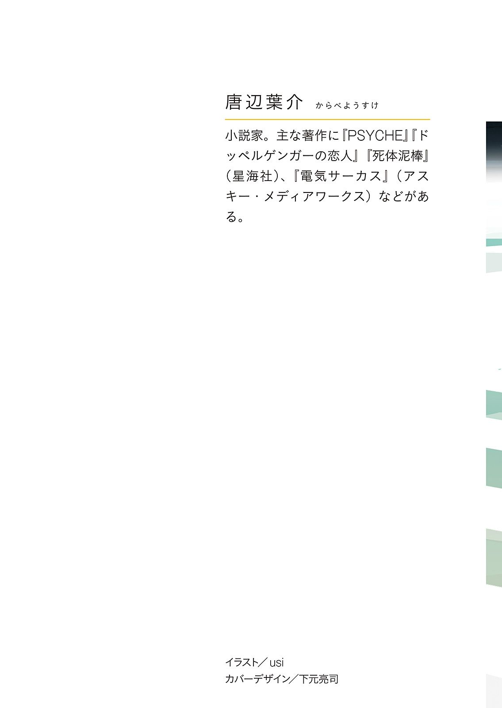

| つめたいオゾン (富士見L文庫) | |
| 唐辺 葉介 | |
| (2014) | |

つめたいオゾン
唐辺葉介
富士見Ｌ文庫
本作品の全部または一部を無断で複製、転載、配信、送信したり、ホームページ上に転載することを禁止します。また、本作品の内容を無断で改変、改ざん等を行うことも禁止します。
本作品購入時にご承諾いただいた規約により、有償・無償にかかわらず本作品を第三者に譲渡することはできません。
本作品を示すサムネイルなどのイメージ画像は、再ダウンロード時に予告なく変更される場合があります。
本作品は縦書きでレイアウトされています。
また、ご覧になるリーディングシステムにより、表示の差が認められることがあります。
プロローグ
その部屋は天井も壁も床も雪のように白く、二人はまるで蚕の繭の中にいるようだった。
少年はすらりとした長身の背筋を伸ばしてパイプ椅子の上に腰掛けている。そして、天井に近い位置に穿 たれた明かり取りの窓や、正面の机に設置されたモニター、出入り口のドアなど、部屋のあちこちを観察しては、大人びた表情で何かを静かに考えていた。
彼が何よりも気にしているのは、右手の壁に掛かった額縁に納められた一枚の写真であった。
西洋人の女性が二人、屋外に設置された木製の椅子に並んで座り、こちらをしかめっ面で眺めている。今では珍しくなったフィルムカメラで撮影された写真のレプリカらしく、劣化による褪 色 もそのまま複製されていた。
少年はまるで潔癖症を患ったように何もかもが純白のこの部屋に似つかわしくないその写真に、何度も視線をやっていた。
一方そのすぐ隣で同じ形のパイプ椅子に腰かけている少女は、両手を膝 に置き、自分の正面の空間をぼんやりと眺めている。時々目を細めたり、そのまままぶたを閉ざしたりする程度が彼女が僅 かに見せる変化で、あとはほとんど微動だにもしない。
部屋にはこの二人しかいなかった。それぞれごく近くに座ってはいるが、お互い一言も発さず、雨がパラパラと窓を叩 く音が空間を静かに満たしていた。
やがてカチャリとドアノブの回る音がして、白衣の男が入って来る。
それは、酷 くやせ細った人物であった。
頰の肉が削 げて頰骨が飛び出し、目は落ち窪 んでいる。骨に張り付いた皮膚は青黒く、後退してむき出しになった額には静脈が青く浮かんでいた。それは人間の貌 というよりも、髑 髏 にわずかばかりの皮と毛の付着したものが胴体の上に乗っているといった風情であった。
背は低くはないのだろうが、こうして瘦 せている上に猫背で顔を突き出すような姿勢を取っているため、大きくは見えない。
彼は片手を白衣のポケットに突っ込んだままそこに立ち、眼鏡の奥の目を細めて二人の姿を確認すると、
「待たせてしまったようだね」
そして、自分の立場と名前を伝える。
「これからは、私が君たちを担当することになる。よろしく」
男はあまり口を動かさず、くぐもったように発声をする。
少年はその言葉をうまく聞き取れなかったのか、怪 訝 な顔をしたが、男はその表情を気にすることもなく、銀縁の眼鏡の位置を直すと、一方的に話を続けた。
「もう説明は受けたかい？ それともまだかい？ きみたちは、どの辺りまで知っているんだろう？ ......ふむ。まあ、とりあえず映像を見て貰 うとしよう」
男は机の上に置いてあったリモコンを手に取り、骨張った指で操作を行う。するとモニターの電源が入り、メニュー画面が表示された。
男の操作によって録画ファイルの選択画面に切り替わる。
そこには四つの録画ファイルが保存されており、撮影時の日付と思われる数字がそれぞれのファイル名になっていた。
男の操るカーソルがその一番上のファイルを選択し、再生が始まると、二人の太った中年男が並んで安楽椅子に腰掛けている場面が映し出される。
男はそこで一 旦 画面を停止させた。
「これは、ここからは少し離れた、自然の豊かな土地にある、リハビリテーションのための施設で撮影された映像だ。彼らは片方は弁護士として、片方は研究者として、双方素晴らしい仕事をしていたが、病気が進行してしまったので、いまはここで静かに生活をしている」
骸 骨 のようなその男は空 咳 を一つしてから、続きを再生する。
そこは小 洒落 たペンションを思わせるような気の利いた作りの部屋だった。
天窓からは陽光が差し込み、自然な光が空間を明るく照らし出している。大きな窓の向こうには、豊かな緑に覆われた山 嶺 が見える。
床は木目の美しいフローリングで、その上に竹を編んで作ったアジアンリゾート風の椅子が並び、二人の男は座っている。
「私も何度か行ったことがあるんだがね。ここはなかなかに風光明 媚 な場所なんだ。空気も水も綺 麗 でね、泉質のよい温泉にも浸 かれる。私は仕事として何度か足を運んだのだけれども、そのまま全てを放り出して住みたくなるような場所だった。まさに病人がのんびり暮らすには最適の場所で、この二人も、生活に不満はなさそうだったよ。毎日協力して、楽しそうにリハビリをしている」
白衣の男は説明のように、或 いは独り言のようにそう言った。
カメラ手前の撮影者が挨 拶 をして、それに応じるように二人の中年男は朗らかに笑う。
彼らの顔立ちは全く異なるが、その笑う声も、笑い顔の作り方も、笑うタイミングもそっくり同じで、そっくり同じ機構を持ったあやつり人形が並べられているようであった。
「今日の朝食は、何を食べたんだい？」
撮影者が次にそう尋ねると、
「「アジの干物と、納豆と、ほうれん草のおひたし。あと味 噌 汁 です」」
二人の二つの唇が同時に動いて、そして二つの声が完全に重なり合って、一つのことを言った。
「味噌汁の具はなんだったか覚えている？」
撮影者の問いに、二人は同時に頷 き、
「「豆腐と、長 葱 です」」
と、やはり声を重ねて答える。
その後も、撮影者との会話における二人の返答は全てこのようにしてなされた。
たとえば長い言葉による説明であっても、たった一言の相づちであっても、ただの一度もずれることがなく、二人の声は完全に重なって発せられる。それは、どんなに厳しく訓練されたラインダンサーにも不可能な、完全なる一致であった。
「この二人の男性はね、こうして外から見ると別々の人間のようだけれども、それらを支配しているのはね、一つの意識なんだ。一つの意識が出した一つの命令に従って、二つの体が同時に動いているってわけさ」
映像が始まって三分が過ぎたあたりで、窓から入って来た蜻蛉 が、右側の男の肩にとまるというアクシデントがあった。その時もやはり、蜻蛉が止まっている方と、それから止まっていない方の、二人ともがそっと手をあげて肩に手をやる。蜻蛉はそれに応じて肩を離れ、開いた窓から空へと飛び去って行く。
撮影者の質問が終わると、画面が切り替わった。
カメラはそれまで二人を正面から撮影していたが、画面の切り替わりと共に斜め前からのアングルとなり、そして、前のカットには存在しなかった若い女性看護師が、二人の前に立っていた。
看護師は両手に一つずつ、明るいピンク色をした球状のものを持っている。カメラに向かって、そのテニスボールサイズの球を握りしめて見せると容 易 く潰 れた。
それは、柔らかいスポンジのようなもので出来ているらしい。
看護師はそのスポンジボールを、彼女から見て左側の患者に放り投げる。
二メートルほどの距離から投げられたボールは、ゆるい曲線を描いてふんわりと飛び、患者はそれを摑 もうと手を伸ばした。しかし、虚 しく手のひらは空をつかみ、ボールは彼の胸元で跳ねてフローリングの上に落ちる。
患者は苦笑しながら背中を丸め、足下のボールを拾おうとするのだが、それも一度ではうまく摑めず、床の上を探るようにしてようやく摑むのであった。もちろんその一部始終の動作は、隣のもう一方の患者も共有している。ボールを投げられなかった彼も、顔の前の空間に手をあげ、足下の何もない床を探るのだ。
どちらの患者に向かってボールを投げても、このように二人で同時に手を上げて、そしてボールは床に転がり落ちる。
「一つしかない意識ではね、二人の視覚情報が咄 嗟 に区別することが出来ないんだ。こうやって並んでいるところにボールを放ると、投げられた方の目には真っ正面に飛んで来るように映っていても、もう片方の目には、横に逸れて飛んでいるように見えるんだ。だから、こんな風になんでもないボールをキャッチ出来ない」
白衣の男がそう説明する間にも、二人はポロポロとボールを取り落とし続ける。
「これを何度も繰り返してね、毎日頑張っているってわけさ」
そのボールのリハビリテーションが終わると、画面には次々と別のリハビリテーションの光景が映し出された。
或いは、それぞれに別々の知恵の輪を渡して解かせようとする場面。或いは、片方に握り飯、片方にホットドッグを渡して食べさせようとする場面。いずれも失敗し、二人はそれでもニコニコと笑い続けている。
「一緒くたになってしまった感覚を、区別出来るように、そしてそれぞれが別々に行動出来るように、こうした訓練を行っている。......病気がこうも進行して、この状態になってしまうと、一人で日常生活を営むのも難しくなるんだよ。たとえば道を歩いていても、うまく障害物を避けられない。ドアをどちらもぶつからずに通り抜けることも出来ない。それにね、繫 がっているのは視覚情報だけでなく、全ての感覚である訳だから、便意が起こったときも、それがどっちのものか区別が難しかったりするんだ。訓練によって、ある程度のところまでは感覚の区別が出来るようになるらしいが、それでも、全て元通りとはいかないからね。介護者の手はどうしたって必要になる」
白衣の男はそう言って、再生の停止した装置の電源を切った。
「別に脅しているわけじゃない。リハビリを繰り返せば、いずれは介護者の手を借りないでも生活出来るようになる可能性もある。でも、まずはありのままの症状を見せなくては意味がないからね。......確かに、きみたちのような若者に見せるにはあまりにも残酷な映像だとは思うが、これは現実なんだ。きみたちには知る義務と権利がある」
男は鋭い目つきで二人の顔を交互に見ながら話を続ける。
「最近はとんでもなく奇妙な病気が増えている。この間発見されたばかりの病気は知っているかい？ ほら、生まれながらに大人の知能を持ってしまったという病気だよ。母胎のなかにいるうちからいっぱしな口調で喋 り始めて、出産と同時に死んでしまった。聞いたことあるだろう？ まったく、世も末というのかねえ。その遺体は大きさこそ赤子だが、しわくちゃで、うっすら生えた頭髪も真っ白で、細胞も老化していたそうだ。サイズが小さいだけで、生物的には老人そのものだってことだよ。死因は老衰だったらしいねえ。......それから、『発火病』も、実に興味深い病気だな。メディアでも良く取り上げられるから聞いたことくらいはあるだろう？ 外皮がカサカサになってそこに表出したリンが摩擦で着火してしまうんだ。人間が勝手に燃え上がるっていうとんでもない病気だよ。こいつは流行の兆しがあるというんで、患者が増え始めた東欧の方じゃ戦々恐々としてる。......まったく、こういった正体不明のふざけた病気ばかりが増えてくると、我々科学者は馬鹿にされているような気分になる」
男は語る言葉ほどの感情を感じさせない無表情のまま、
「とにかく、きみらの病気も、そうした数々の奇病の一つなんだ。普通の治療とは、何もかもが、全然違う。我々も実態を摑めていないのさ。だから、他のありふれた病気に対するように、多くの前例を基にした効率的な治療は施せない。全ての治療には冒険性がつきまとい、患者にも相応の覚悟が必要だ。だから、我々と契約を結ぶにあたって、ありのままを正確に伝えなくてはいけないという決まりになっている。ご家族にも同じ映像を見せて、同じ説明をしてから、治療と研究の了解をとっている。それがベストかどうかはわからないが、フェアではあると思うね。私は」
彼はそこでポケットから鼻紙を取り出すと、大きく音を立てて鼻をかんだ。使い終わった鼻紙を丸めてポケットにしまってから、言葉を続ける。
「ああ、わかっているとは思うけれども、君たちの病気は今見せた二人の患者とまったく同じものだ。病名は『アンナ・メアリー症候群』。これは知っていたかな？」
男の言葉に、少年と少女は無言で頷く。
「それはよかった。しかし、現実感はまだないんじゃないか？ 今のきみたちの進行度だと、それほど不便ってこともない筈 だからね。普通は、その段階じゃ危機感は抱かないものだ。......ただ、これがどんどん進行してゆくと、触覚や嗅 覚 、そして感情もどんどん入り交じるようになる。はっきりと覚 醒 している時でも、相手の感覚が心に入って来るんだ。最終的には、どちらがどちらの感覚なのか区別がつかなくなり、今見せた二人の患者のようになってしまうってわけさ。......いつそうなるかはわからない。それは半年後のことかもしれないし、もしかしたら何十年も後、場合によってはほとんど症状が悪化しないまま生涯を終えることが出来るかもしれない。それは誰にもわからない。何しろ、まだこの病気の性質については何一つ判明していることがないんだからね」
男はそう言って、肩をすくめる。
「我々はこの病理を明らかにするために、もっと研究をすすめる必要がある。たとえば、君たちの身体は、どうしたメカニズムで感情や感覚の情報を伝え合っているのか......それが判明すれば、君たちの治療にとっても、人類にとっても重要で新しいものをもたらすだろう。だから、是非とも協力をしてもらわなくてはならない」
男は二人の目を交互にのぞき込むようにしてから、話を続ける。
「勿 論 、それなりの保障は用意している。さっきの映像の、清潔で快適な住まいを見ただろう？ 我々のプログラムに参加してくれたならば、仮にきみたちの病気が最悪の状態まで進行したとしても、あれと同程度の生活環境が保証されている。そうしてのんびりリハビリが出来るって寸法さ。......気の毒なのは確かだが、そう絶望するほどでもないと思うがね。それはとても穏やかで、静かな生活だよ。最近ではなかなか手にはいらないものじゃないか？ さっきの患者達も、終始楽しそうに笑っていたろう。あれは我々が作らせた表情じゃない。本当に、楽しく暮らしているんだよ。噓じゃない。いつか、君たちも実際に会って話を聞く機会もあるだろう。その時に訊 いてみるがいいさ。......朝から晩までいいように働かされている私なんかよりも、よっぽど幸福かもしれないよ」
男は乾いた笑いを浮かべてから、
「もしこのまま症状が悪化しなかったとしても、協力に見合うものが君たちに手渡されることになっている。そうなれば、むしろメリットが勝つんじゃないかね？ 症状自体も、よく知ればそう悪いものではないと受け容 れられるかもしれない。......だからまあ、あまりショックを受けないことだよ。ある種宝くじを手に入れたようなものだ。確率は高いとは言えないが、ハズレと決まったわけでもない。ありとあらゆる可能性というものは、世界の至るところに存在するのだから。......わかるね？ 君たちは二人とも優れた知能を持っているんだろう？ さっき見せた二人もそうだが、この病気の患者というものは、どうも総じて知能が高くなる傾向があるらしいからね。通常とは違った脳の使い方をしているのだという話もあるが、まだ仮説の域を出てはいない。......とにかく、非常に知能の高いきみたちには、私のこうした説明はさぞかしくどくどしく聞こえたろうが、これも決まりなんだよ。私だって本当ならこんなに面倒な説明はせず、書面だけで済ませたいところなんだがね」
そして男はファイルから書類を取り出し、少年と少女の前に一枚ずつ置いた。どうやらこれが同意書であるらしく、細かい文字でびっしりと規約が書かれている。
「それにサインをしてくれたまえ」
少年が小さな文字を上から読み始めたその隣で、隣の少女はすぐにペンを取って、自分の名を書き終えてしまう。
やがて少年も自分の名を書き終わると、男は出来上がった二枚の同意書を回収し、
「結構」
と無表情に頷 いた。
「質問をしてもいいですか？」
少年が声をあげる。
「いいとも」
「この写真の女性達も、患者なのですか？」
そして少年は壁に掛かった写真を指さす。
「ああ、これか」
男は眼鏡を指先で押さえながらそれを見ると、
「彼女たちの名前は、アンナとメアリー」
「アンナとメアリー？」
「そうだとも。彼女たちは、『アンナ・メアリー症候群』という名前の由来となった人物だ。この病気の最初の患者であり、そして最初の研究者でもある。私はこういうものを飾るのは好きではないのだが、創設時の所長の趣味でね。......他に質問は？」
「あ、いえ、今すぐには思いつきません」
「きみは？」
問われて、少女は首を横に振る。
「そうか。気になることがあったら、またいつでも尋ねるといい。それでは、すぐに係の者が来て次の指示をするから、また少しここで待っていてくれたまえ」
そして男が入って来たドアから部屋を出て行くと、少年は大きく息を吐き、身につけた暗色のマウンテンパーカーのファスナーを少しおろして胸元に空気を取り入れ、そして背もたれに寄りかかった。
少女は相変わらず、うつむき加減でぼんやりと目の前の空間を見つめている。
「なんだか、困ったことになったようですね」
少年はため息まじりに呟 いた。
「何か人とは違うと思ってはいたけれど、最終的にああいった状態にまでなってしまう病気だったとは......」
肩をすくめてみせると、その睫 毛 の長い切れ長の目で、隣に座る少女の方を見た。
少女はその目を見つめ返し、しかし少年の視線に何を求められているのかがわからないらしく、小さく首をかしげる。
「信じられますか？ 僕はまだ、信じられません」
少女は控えめに彼の顔を見ながら、しかし何も言わない。
少年はため息をつくと、
「この部屋は少し寒いようですが、平気ですか？」
「大丈夫です」
少女はそこではじめて唇を動かし、そう答えた。
「そうですか。それなら良かったです」
彼はそれだけ言うと、うつむき加減になって何やら考えごとを始める。
少女はその横顔をしばらく見つめ、それからまた元のように視線を正面に戻した。
係の人間はなかなか訪れない。
部屋が静かになったせいか、それとも本当に雨足が強くなったのか、窓を叩 く雨音が大きくなったように感じられる。少女はその音に耳を澄ませるかのように、目を薄く閉じている。
彼女は、人とちがった特徴的な容 貌 を持っていた。
彼女は、本来ならば誰もが持つべき色素を一切持っていなかった。
髪の毛も、睫 毛 も、眉 も、全ての体毛が、純白に近い白金色をしていた。全身の皮膚は足の爪先までも白く、唇だけは薄紅色だった。
瞳 は無色に近い淡青色であったが、光の加減で赤みがかっているようにも見えた。ほっそりとした高い鼻と、くっきりとした二重のまぶたを持つ整った顔立ちで、体の持つ曲線も、多少瘦 せぎみではあったが、それ以外ではまず非の打ち所というものがなかった。
その白い少女は今、白いセーターを身につけていたので、こうしてじっと動かずに座っていると、真っ白な壁や天井に溶けてしまいそうだった。
廊下から女のすすり泣く声が聞こえた。そしてすぐにドアが開け放たれる。
静寂を破って部屋になだれ込むように入って来たのは、中年の男女で、彼らは少年の姿を認めるとすぐにその傍に駆け寄った。
二人は少年の両親だった。
母親は、我が子にふりかかった不幸に耐えがたいといった様子で、すがりつくように少年を抱きしめ、声を立てて泣く。父親は難しい顔をしておし黙っている。少年は戸惑った表情を浮かべながら、
「大丈夫、大丈夫だから。そんなに泣かないでよ」
笑顔を作って母親をなだめようとするが、泣き止まない。
少女はその親子の様子を無表情に眺めていたが、父親までもが目元を拭 ったところで、彼らから視線を外し、元通りなにもない空間を見つめた。
そのあとようやく係員がやって来ると、困り顔で母親に少年から離れるように言う。きかない母親を、父親が引きはがすようにして、そして二人で退室をした。
部屋に再び静寂が戻り、白衣を身につけた女性係員は二人の患者に向き直る。そして彼女は事務的な口調で、これから数日間はここに泊まって、検査を受ける必要があることを告げた。
「その後のことは、検査の結果によってかわって来ます。ここまでは理解出来ましたか？」
係員の問いに、少年と少女は無言で頷く。
「それは結構です」
そして係員は手元のクリップボードに視線を落とした。
そこには、何枚かの書類が挟まれており、彼女はそれを親指と人差し指でつまんでめくり、四枚ほど捲 ったところで手を止める。
「あなたが、俣 野 脩 一 君ね？」
「はい」
と少年が答える。
「そしてあなたが、中 村 花 絵 さん」
「はい」
と少女が答える。
第一章 『俣野脩一』
一
俣 野 脩 一 は、世 田 谷 区下 馬 に住む公務員の家庭に長男として生まれた。
彼の両親は三年前に出生前診断によって異常の見つかった第一子を中絶しており、そのせいで家庭のなかには暗い空気がわだかまっていた。特に妻の狼 狽 と失望は大きく、口にして具体的な悲しみを顕 すわけではなかったが、その沈み込んだ表情と弾みのない物憂げな態度は自然と人を遠ざけ、夫婦を世間から切り離した。
そんな家庭であったから、彼の誕生はまさに三年越しの待望であった。彼が文句のつけようのない健康体で生まれたことで、手術以降夫婦の間に漂っていた沈 鬱 な空気は払 拭 される。
妻の喜びは大きく、これが自分にとって最初で最後の子であると、全ての愛情を込めて育てる子であると、それまでとはうってかわった輝きに満ちた表情で、病院に見舞いに来た知人達に誰彼となく語るのであった。
愛情が深い分、期待もまた大きかった。両親の彼への思いは早期教育といった形であらわれ、脩一は幼い頃から様々な習い事に通わせられることとなる。
こうした両親の気持ちが影響したのか、彼は幼児期から従順で手の掛からないと評判の子供であった。
幼児には多忙すぎるスケジュールを素直にこなし、そしてその成績も、母親の過剰とも言える要求を完全に満たすだけでなく、時としてそれを上回った。表情や細やかな動作の全てに一見しただけでそうとわかる利発さを備えており、どこへ行っても、その記憶力や思考力は周囲の大人を驚かせた。
「この子は他の子とはちょっと違う」
やがて母親はそう確信するようになり、その思いは、我が子への期待にさらなる拍車をかけることとなる。
そうして脩一は順調に年齢を重ね、六歳になると難関であった入学試験に合格し、伝統ある私立小学校に入学した。
思い描いた通りの道を順調に歩き続けていることに父親も母親も喜んだ。幼かった脩一も、自分の行動で母親が喜ぶことが嬉 しく、ますます与えられた課題に積極的に取り組むようになる。全てが好ましく循環していた。
しかし、小学校へ上がってすぐに事件が起きた。
きっかけは、夢である。
最初にそれを見たのはいつだろうか？ 脩一は幼児期の出来事を人よりも鮮明に記憶しているが、それでも最初に見た時期を思い出すことが出来ない。もしかしたら、物心つく前から見ていたのかもしれない。
初めは、他のありふれた夢と同じように感じていた。しかし、七歳の誕生日を迎える頃から、その夢は他とは違う特別なものだと気がついた。
その夢のなかで、彼は少女の姿をしている。天使のように白い肌と髪を持つ、見たこともないほどに美しい少女になっている。
そしてその夢には音がなく、視覚情報だけが与えられる。目の前で誰かが喋 っても、口がぱくぱくと動くだけで何の音も聞こえない。他のあらゆる音に関しても同様だった。
普段は空を飛んだり、宇宙人とたわむれるような荒 唐 無 稽 な要素が入り込むのだが、その特別な夢のなかでは突飛なことは起こらない。そしてその夢のなかでは他の夢のように自由に振る舞うことが出来ない。
脩一は少女になっても、彼自身の意志のままにその身体を動かすことが出来ない。まるで目だけを借りたように、彼女の生活を覗 き見るのだけが精一杯だった。それは一人の登場人物の視線のみをカメラワークで追い続けた映画を観る感覚と似ている。
さらに、その夢には連続性があった。夢のなかの時間は、現実と同じような時間が過ぎている。つまり、現実の彼が三歳から五歳になれば、夢のなかで少女となった彼も同じように成長してゆくのだ。
幼い脩一は、他の夢とこの夢の相違には気がついていたものの、しかし自分だけのものだとは思わなかった。誰しもがこうした夢を見るものだと、ごく自然にそう思っていた。
だから、他の夢について語るのと同じようなつもりで、母にこの『自分が天使みたいな少女になる夢』について話したのである。
それを聞いた母の反応は彼の思いもよらないものであった。
即座に顔色を変え、嫌がる脩一の手を引いて病院の精神科につれて行く。
「先生、これは一体どういうことなんでしょう？ まだこんなに幼いのに、しょっちゅう夢のなかで女の子になっていて、それを楽しそうに語るだなんて！ これは何か、性的に正常でない発達をしてしまっているんじゃないんですか？ 正常でなかったとしたら、私の育て方になにか間違いがあったのでしょうか？ あれもこれもと望みすぎて、ストレスを与えてしまったから、こんなおかしなことを言い出してしまったのでしょうか？」
診察室で母は興奮しながらそう話した。
脩一はそのヒステリックな態度に恐れに似た動揺を覚えたのを記憶している。
自分の発言のどこが、母をそこまで興奮させてしまったのだろう。その夢のどこが、そこまで異常だったのだろう。母は、自分のことを頭がおかしくなったのではと疑っているが、なぜそう感じさせてしまったのかがわからない。
途中で退席させられた脩一は、医者がどういった見解を伝えたのかは直接聞くことはなかった。しかし、診断結果が彼女の意に沿わぬものであったのは、すぐに察しが付いた。
病院から帰った後も母親は医者の悪口ばかり言っている。医者は脩一の夢を、問題のないものだと言ったらしい。それどころか、母親の過剰な猜 疑 心 と興奮を窘 めようとしたようだ。
これが逆効果となり、母親はすっかり医者への不信を募らせていた。そして結局、独自の方法で脩一を矯正することを決めたらしい。
その結果、俣野家には新しいルールが増えた。
まず、テレビ番組やインターネットは、母が許可したものしか閲覧することが出来なくなった。
さらに、学校から帰って来た時には、ランドセルやズボンのポケットの中をあけさせて、母が全て細かくチェックするようにもなった。この時、授業中に友達とやりとりしたメモなどが出て来ると、母親はいちいち相手のことを厳しく詮 索 した。もし、女子生徒からの好意をしたためられた手紙などが見つかれば、こういうものは開封しないで家に持って来るように伝えた上で、その手紙を処分されてしまう。
一事が万事この調子で、母は、息子が接した全てのものを検閲しようとしたのだった。
脩一は戸惑ったが、従う以外の選択肢は幼い少年には存在しない。彼は正しい正しくないではなく、ただ母の怒りを恐れていた。
そしてその恐怖は、彼に噓をつくことを教えた。
相変わらず例の夢は見続けたし、その夢への好奇心は高まる一方であったが、それ以降誰にも口にすることはなかった。その他にも、自分の内面的な部分の話を人にすることも減った。その必要がある時は、相手の機嫌を損ねぬよう、注意深く事実をねじ曲げた。
結果、彼は一人で考え事をすることが多くなり、いくらか性格が内向的になっていった。
六歳の時に任天堂の最新のゲーム機を親 戚 からプレゼントされ、それ以来すっかり虜 となっていたのであるが、しかしこの事件で彼は自由にそれを遊ぶことが出来なくなった。
他のメディアと同様母親の管理下におかれてしまい、遊ぶためには理由を述べて許可を得なくてはいけないのである。
そして、その許可を得るのは非常に困難であった。長時間勉強をしたから気分転換がしたいだとか、テストの点数があがったから褒美として使わせて欲しいとか、そういった正当な理由がいつもあるわけでもない。新しいソフトを買ったばかりの時でも例外は許さず、ただ遊びたいから遊びたいのだと泣き出しても、冷ややかに、
「それなら一生ゲームはさせません」
と脅されるだけである。
脩一の心からは次第にゲームをしようという気持ちがなくなった。かといって、母親の与える映画や本は退屈で面白くもない。結局、脩一の少年時代はほとんど娯楽というものを持たないまま鬱屈の日々として過ぎてゆくことになる。
その彼が新しい楽しみと出会ったのは、小学二年生に上がってすぐのことだ。
クラスには彼の他にも親の教育方針でゲームを与えられない子供が何人かいたが、Ｋという少年もそのうちの一人であった。
このＫが、機械がなくても出来る新しいゲームをクラスに提案したのである。
ある日彼は自分の机の周りに、ゲームで遊ばせて貰 えない子供を呼び集めた。そこで彼が見せたノートには、ボールペンで書かれたマス目に鉛筆で駒が書き込まれた、お手製の将棋セットが作られていた。
Ｋは体が大きく、リーダーシップのある少年で、クラスに影響力があった。その彼が他の児童達にルールを教えることで、教室内でにわかに将棋ブームが発生した。
毎日昼休みは何人かが教室の後ろに集まって、対局をする風景が見られるようになり、娯楽に飢えていた脩一も、すぐにそれに夢中になった。
脩一は初心者同士での対局ではすぐに勝てるようになったが、普段から親や兄弟と対局していたというＫには何度挑戦しても勝てなかった。ついに飛車と角を盤面から取り除いた状態でゲームを始めるというハンデをくれたのだが、それでも勝てない。
三局連続でやって全て負けたその日、脩一は多くの駒を失ってスカスカになった自分の陣を前に、目に涙をにじませ、唇を嚙 みしめていた。
「おい、大丈夫か？」
普段はおっとりとして激しい感情を見せない脩一のいつにない態度にＫが心配して尋ねると、
「大丈夫。すごく楽しい」
と脩一は涙目のまま笑った。
それから彼はこのＫからの勝利を具体的な目標として本格的に将棋の勉強をはじめることになる。
休みの日は朝から近所の図書館に行って、日が暮れるまで将棋の本を読んだ。土日だけでは読み終わらない場合は、母が喜びそうな本にはさんで借りた。母親は、テレビゲームの類よりは将棋を好意的に受け止めており、見え透いた偽装でも何も言わなかった。
そうして借りた本は、寝る間際や、授業の合間など、時間を見つけては読みふけった。その場では解けない難しい詰め将棋に出くわした場合は、メモ用紙に書き写してポケットに入れ、少しでも時間があればそれを眺めた。
一月も過ぎると、クラス全体の棋力が見違えるほどに上昇している。駒を動かすのがやっとだった彼らも、Ｋから美濃囲いだの穴熊だのを教わり、見よう見まねで使うようになっていた。
脩一はＫに勝つのを目標としたため、彼が教える児童達の群れには加わらず、普段の対局もＫを相手にすることを避けていたが、しかし彼は独学によって他の児童以上に成長した。気がつけば、Ｋに次ぐ実力を持つと言われる児童とも何局指しても負けないほどになっている。
そうして、もはや彼はＫを越えたのではないかという評判が囁 かれるようになると、満を持して、Ｋとの対局の場が用意された。
前に指した時の惨敗を意識し、緊張して臨んだその対局は、思いの外にあっけなかった。
Ｋは果敢に攻める脩一の駒を受けきることが出来ず、勝負は短い手数で脩一の勝利となった。納得出来ないＫは再戦を申し出て、そのまま続けて三局指したが、結局一度も勝てず、それどころか指すほどに差が広がってゆく。いつかの場面とはまるきり立場が逆転していた。
クラスの有力者を相手に、あまりにも一方的に勝ちすぎて面目を潰 してしまったのではないかと緊張していた脩一だったが、Ｋはかつて味わったことがない惨敗に顔を蒼 白 にしながらも、笑って勝者の実力を認めた。
こうして脩一はクラスで一番の将棋の実力者と認められた。
翌日からも同じようにクラス内での対局が行われたが、才能が開花しはじめていた脩一には、もはや同級生の誰が挑戦しても全く歯が立たない。駒を四枚も六枚も落としたり、三人や四人を同時に相手にする多面指しを行って、どうにか勝負になるという有様であった。
この状況をＫが家で話すと、彼の兄が興味を持って教室にやって来た。
Ｋの兄は同じ学校の将棋部に所属しており、弟と同じように大きな身体をしていた。紹介されるなり脩一の顔をジロジロと訝しげに見て、当初はＫの話を信用していない様子であったが、指してみると、このやせっぽちの二年生に全く歯が立たなかった。
脩一は当然のように勝利し、周りで見ていた児童達が盛大な喝 采 を浴びせた。しかし、その時脩一自身はそれよりも、相手が持ってきた将棋盤と駒に興味がいっていた。それは折りたたみの薄い板で出来た将棋盤と、手 垢 で汚れた安物の駒であったが、ノート将棋でしか指したことがない脩一にとって、はじめての本物の将棋道具であったのである。
このＫの兄との対局をきっかけに、将棋部の上級生たちが次々と彼と将棋を指しにやって来るようになるが、いずれも同様の結果で終わった。
上級生たちが散々に負けて、しおらしくなって教室を去って行くのは同級生達にとっては痛快で、脩一は一躍クラスの人気者となった。
しかし脩一はその立場を恥ずかしがって、対局のあとはそそくさと片付けをし、逃げるように帰宅してしまうのが常であった。時にはそれを引き留めて、将棋を教えてくれるよう頼む児童もおり、そういう場合は快く応じたが、相手が女子であった場合には苦い顔をして断った。母親が異性が近づくのを嫌っていたこともあるし、彼自身、例の自分が少女になる夢を見続けたせいで、過剰に意識するようになってもいたのである。
しかし、こうした彼の人気は長くは続かなかった。三年生に上がってクラス替えが行われると、新しいクラスには将棋を楽しむものはいなかった。彼らは一般的な子供のように、トレーディングカードや携帯ゲーム機で遊んでいた。二年生の時に一緒に指していた児童達も、ブームの消滅によって将棋から離れていった。そうして、対局の機会さえ失った脩一は、もとの大人しい一児童に戻ることとなった。
ちやほやされなくなったのは彼にとってむしろ有り難かったが、対局出来なくなるのは辛かった。
時折二年生時の評判を聞いて、興味本位で脩一に挑むクラスメートもいるにはいたが、一度こてんぱんに負けると、もう再戦は望まない。別のクラスになったＫとは、三年生になったばかりの頃は指したりもしたが、やがて彼もバスケットボールやサッカーに興味が移り、相手をしてくれなくなった。また、クラブ活動に参加出来るのは四年生からで、三年生の脩一はまだ学校の将棋部に入ることも出来ない。
未練たらしく放課後に部室を覗 きに行ったりもしたが、彼の顔を見た上級生達は、猫でも追っ払うようにしかめっ面で彼に手を振った。
二年生時に将棋部の実力者たちを同級生の前で叩 きのめしてしまった彼は、けして好かれてはいなかった。この分だと四年生になっても将棋部に入るのは難しいかもしれない。
こうして再び楽しみを失った彼は、ひたすら定跡の本を読んだり、詰め将棋を解いて気持ちを紛らわせることとなる。
そんなある日のことだった。
放課後の帰り道、すぐに家に帰っても楽しみのない彼は、駅の前でふと方向を変えて、普段通らぬ道に足を踏み入れてみたのである。寄り道をしてはいけないと厳命する、母親へのささやかな抵抗のつもりもあった。
しかし、都会というものは一つ裏道に入るとがらりと性質を変えてしまうということを、まだ幼い脩一はよく理解していなかった。
そこは古い立ち飲み屋などが並ぶゴミゴミとした通りで、彼の藍 色 の制服を上下に身につけた姿はやたらと目立ってしまう。
迂 闊 に立ち入ってしまったことを後悔し、うつむき加減で足早に通り過ぎようとしたその時、『将棋道場』と書かれた立て看板が路上に出されているのが目に入った。
これは一体何の施設なのか。道場という言葉は知っている。しかしそれは、武術などの修練を行い、その技術を高め合う場所であったはずだ。とすれば『将棋道場』という場所では、門弟たちが真剣勝負をしたり、特殊な修練をしているのだろうか？
武術のものものしいイメージと、将棋という遊戯が、脩一の頭のなかではどうにも結びつかなかったが、しかし語感には恐ろしそうな、面白そうな雰囲気がある。
プラスチック製の立て看板の端にはひびが入っており、ぞんざいにセロファンテープで留められている。そういった無造作なところも、俣野家には無縁な雰囲気である。もし親がいたら、寄せ付けようとはしなかっただろう。
しかし、全ての少年がそうであるように、彼もまた火が付いた自分の好奇心に対して無力だった。
脩一は誘われるようにふわふわとした足取りで入り口に近づいた。
ドアには磨 りガラスがはまっていて、背伸びをしてみてもなかの様子はおぼろげにしか見えない。しかし耳を澄ませば人がボソボソと喋 る声が聞こえる。そして、パチパチと駒を将棋盤に打ち付ける音が聞こえる。
やはりこのなかで対局が行われているのだ、と思うと、血が逆流するような興奮を覚えた。
なかに入って確かめたかったが、元来控えめな性格の脩一にはこれ以上の勇気が出せない。好奇心と警戒心がせめぎ合って逡 巡 していると、ガチャリと音がしてドアが内側から開き、ひげ面の男が脩一を怪 訝 な顔で見下ろした。脩一はそのばでうつむき、もじもじとしてしまう。
「......坊や、将棋がやりたいのか？」
男がそう尋ねるのに、脩一は一瞬戸惑いを見せたのち、おずおずと頷 いた。
窓からは橙 色 の夕日が斜めに差し込んで、パイプ椅子の金具や、壁の張り紙をとめた画 鋲 をまぶしく輝かせていた。
そう広くはない部屋に会議室で使うような長机が八脚並べられ、その上には将棋盤と駒が二セットずつ置かれている。昼下がりのこの時間でも利用者は多く、席の半分ほどが埋まり、間隔の少ない机の間で後ろの席の利用者と背中をくっつけるようにして指しているのである。
脩一は男に案内されるまま、入り口に近い席についた。
「ちょっと待ってろ」
男は飲み物を取りに行く。脩一は落ち着かず、背中からおろしたランドセルを抱きかかえるようにしながら、きょろきょろと辺りを見回す。
天井の隅には蜘 蛛 の巣が張り、照明は蛍光灯の外されたものと、そうでないものが混在していた。薄汚れた壁には級ごとに木の札が並び、この将棋道場で将棋を指す者たちの序列がわかるようになっていた。
その部屋で将棋を指す大人達は老人ばかりで、様々な表情で盤面に向かっている。
背筋を伸ばし無表情に静かに指すもの、難しい顔をしてタコのように複雑なかたちで腕組みをしているもの、勝ちを確信した笑みを浮かべて盛んに対局相手に話しかけるもの。中には旧式の生命維持装置を装着したまま指している老人もいた。錆 びた滑車を折りたたみ、その電子ジャーの様なかたちをした本体を自分の隣の椅子に置いている。老人の身体はその装置とパイプで繫 がっており、時々カリカリと鼠がひっかくような異音がするたびに上部をはたいていた。
大人がどんな将棋を指しているのか、必死で背筋を伸ばして駒の配置を確認しようとしているところに男が戻って来て、脩一の前に麦茶の入ったグラスを置いた。水面がたぷんと揺れて、滴が一滴机の上にこぼれ落ちる。
「駒の動かし方は知ってるか？」
箱の中の駒を盤上にあけながら男はそう尋ねる。
「はい」
その駒を自陣に並べながら、脩一は答える。
「そうか。それは手間がはぶける。......普段は友達と指したりしているのかい？」
「はい」
「へえ、最近の子にしては珍しいな。今は、面白い遊びがたくさんあるだろうに」
「みんなは、ゲームばかりしています。だから、最近はときどきです」
「そりゃあ、そうだろう。将棋は覚えることが多くて面倒くさいものな。そうか、それで相手がいなくって、あんなところでもじもじしてたんだな？ わかるぞ。おれも子供の時はそうだったからな。ということは、お前も結構強いんじゃないか？ 将棋ってのは、弱い奴からやめてゆくから、最後に残るのは強い奴だと決まっている」
「あっ、ハンデはいりません。平手でお願いします」
男が香車を自分の陣に並べずに盤の外へ移動させようとしたのを見て、脩一はそう言った。
「そんな言葉をよく知っていたな。けれど、そりゃよした方が良い。小学校では強かったかもしれないが、それは慢心というものだよ。......そうだな、じゃあ、六枚落とすつもりだったが、四枚にしてやる。それでどうだ？」
男は笑いを含んだ声で言う。
「平手でお願いします」
脩一は相手の目を見ずにそう答える。
「初めてあったのに、どっちが強いかなんてわかるはずありません」
「あはは、それは確かにその通りだ！ わかった。そこまで言うなら、平手で指してやろう。特別だぞ。しかし、見かけによらず頑固なやつだなあ。何人もここで相手をしてきたが、そんな風に言ったやつは初めてだ」
男は苦笑して、外しかけた駒を自陣に並べる。
そうして、脩一と男との対局が始まった。
年配者が多いこの将棋道場で、脩一の相手となったその男は比較的若い部類に入る。三十になったか、ならぬかといったところだろう。脩一の目には、自分の両親と同じくらいの年頃に見えた。身だしなみには気を遣わぬタイプのようで、顔には無 精 髭 を生やし、身につけた緑色のポロシャツは襟がよれよれになっている。そして、終始片手を服の下に突っ込んで体をかきむしっていた。
およそ脩一の周囲には存在しない種類の人間で、たとえば彼の母親であったら、顔を背け、その前をそそくさと立ち去ることだろう。
慣れない雰囲気と、目の前の男の風 貌 と、そして大人との初めての対局ということもあって最初は緊張していたが、駒が動き始めると普段通りになった。
どんな場所でも、どんな相手でも、将棋というものは歩が斜めに動いたり、香車が横の駒を取ることはない。盤上では全てが平等で、そこを支配しているのは知識と、先を読み通す力だけだというのが、年上の上級生との対局を重ねて脩一が学んだ事実であった。
相手の男の棋力が自分を大きく上回っているのは、指しはじめてすぐに気がついた。
局面は、先手を持った脩一が四間飛車を選び、男は順当に舟囲いで受ける形となっている。脩一の方から勢いよく攻めたててはいたが、しかし、攻めているからといって彼が優勢というわけでもない。各局面で彼の望む形を作らせては貰 えても、目標を達成する直前であしらわれてしまう。学校ではついに一度も使う機会がなかったような、脩一が独習したうちで最も高度な戦術を駆使したのだが、全く通用しない。まるで泥沼のなかでもがいているように、何をやってもうまくいかないのである。こんな将棋は初めてで、魔法にかけられているようであった。
手が進むにつれ、脩一の考える時間が長くなってゆく。一方相手の男は、時々「ううん」とか、「そうか」とか、独り言を口の中でもごもごと呟 いたりはするものの、序盤とほとんどかわらぬ速度で指している。
じわじわと形勢は男の方に傾き、そして攻守が入れ替わると、脩一はそのままなすすべもなく敗北を喫した。
「参りました」
脩一は喉 の奥から絞り出すようにそう言った。
「いや、思ったより強かった。どこで将棋を習った？ だれか、先生に教わったのか？」
男が目を輝かせてそう尋ねるが、その言葉は彼の耳には入らない。俯 く彼の目から大粒の涙がボロボロとこぼれ落ちた。
「そんなに悔しいのか？」
真顔でそう尋ねる男の言葉に、脩一は首をぶんぶんと横に振り、
「......ただ負けたんじゃなくて、こんなに手加減されたのに、それでも負けたから......」
言ってから、口元を押さえるが、嗚 咽 がその指の下から漏れた。
首元まで真っ赤に染めて号泣しはじめた脩一を、男は困り顔で見下ろす。
「坊っちゃん、そんなに泣くこたあねえよ。その兄ちゃんはそう見えてとんでもなく強いんだ。ここの誰も歯がたちゃしねえ」
丁度対局を終えたらしい、向こうの席の老人が話しかけてくる。
「将棋の天才でね、天才が集まるところで将棋を指して、あとちょっとでプロになるところだったんだ。いや、運が悪かっただけで、今だって間違いなくプロ並みの実力はある。だから、泣くのはおよしよ」
老人は鼻に挿入されたパイプが上唇の上に違和感を与えているのか、人差し指で時々位置を直しながらそう言った。
そう言われて脩一が男の方を見ると、彼はばつの悪そうな顔をして肩をすくめていた。
脩一が泣き止むと、すでに日が落ちて暗くなっている。
「きみ、見所あるぜ。またおいでよ。来たら、もっと強くなるように指し方を教えてやる」
優しい男の声を背中に聞きつつ脩一はネオンの輝く路上に出た。
彼は俯きながら駅への道を行くが、来た時と違って周囲の様子はもう気にならない。表情からは先ほどまでの暗い影は消え、泣きはらして赤くなった目はらんらんと輝いている。屈辱感は涙と共に去り、かわりに新しい世界と出会った感動が彼の胸を満たしていた。
二
将棋が道筋を示し始めた一方で、脩一の日常生活は混 沌 としてわけのわからぬものになりつつあった。
学校で行われる授業は、さほどの努力を必要とせずに人に褒められるだけの結果が得られる退屈なものであった。以前はそんな感じ方をしたことはなかったのだが、やはり、将棋で自分より優れた人間と競う楽しみを知ってしまったせいで、当たり前の努力が当たり前の結果を呼ぶ世界が色あせてしまったのだろう。そうした将棋への傾倒は、友だちづきあいにも影響を及ぼしている。
級友たちと冗談を言い合ったり、ゲームを一緒に遊ぶことはあったが、何より大事な将棋の話は出来ない。自分に将棋を教えたＫでさえ、最近ではことさらに将棋の話題を避けようとする。だから仕方なく脩一の方が相手にあわせることになるのだが、それだと、どうしても噓をついているような、うわっつらだけの希薄な関係でしかないような気がしてしまう。そして、肝心の部分が共有出来ないというもどかしさを意識させられてしまう。これでは一体何のための友だちづきあいなのか。
それは家庭でも同じことで、そこでも彼は充分に自己を発揮することは出来なかった。
父親は温厚で自分を一人前の人間として尊重してくれるし、母親も多少うるさいところがあるにしても基本的には優しかった。それでも脩一は彼らとの間にはいつも薄い半透明の膜を感じてしまう。
夕食時に家族団らんをしていても、食卓で共に笑っている自分と、その食卓を後ろの方からつまらなそうに眺めている自分との二人が常にいるような気がする。この感覚は将棋のせいだけではないだろう、夢のことで病院につれていかれてから、心のどこかで常に油断が出来ない何かを意識していた。それが、道場で趣味を同じくする大人たちと出会ったことで深刻化した。
学校でも家庭でも違和を感じる。それならば、一人でいるときならば彼を不安にするものが何もないかと言えば、そうもいかない。
例の少女になってしまう夢は相変わらず見続けているのだが、それ以外にも新しく奇妙な夢を見るようになった。いや、果たしてそれを夢と片付けてしまっていいのか、小学生の脩一には判断がつかない。
きっかけは、八歳の誕生日を迎えてから少し経ったある日の出来事である。
学校は休みで両親は出かけていた。脩一は誰もいない家で一人留守番をしていたのである。そこに伯 母 が訪れた。
父の姉であるその人物は、その場の雰囲気や相手の心情を考えないでものをずけずけと喋 ってしまうため、親 戚 の間で煙たがられていた。
脩一も苦手に思っていたのだが、もちろんそんな人物であるから、目の前の少年のよそよそしい態度の理由には全く気がつかない。
「父さんも母さんも出かけています」
そう玄関先で強く主張する脩一は、だから大人しく出直して来て欲しいという気持ちを込めたつもりだったのだが、伯母はお茶を飲ませて欲しいと上がり込む。
仕方なく脩一が冷蔵庫の麦茶を注いで出せば、温かい煎 茶 の方が良かったと顔を顰 めて愚痴り、母親がテーブルに活けた切り花を、食卓に飾るには匂いが強いとくさす。
早く帰ってくれるよう願う脩一であったが、伯母は勝手にテレビをつけて長居をするそぶりを見せ、そしてニュース番組が始まり未成年の堕胎が増加しているというような話題が扱われると、ごく気軽な様子で、脩一の家庭にとって容易でない話を口にした。
俣野家の最初の子供が中絶によって失われたという話である。それは、両親は勿 論 周囲の大人の誰もが一度も口にしなかった、脩一がそこで初めて知る事実であった。
「あのねえ脩ちゃん、上の子は、お腹のなかの赤ちゃんの時におかしいのがわかっちゃったから、お前の両親は泣く泣く決断をしたんだよ。あの時の二人の落ち込みようったらなかったんだから。そういうなかで生まれて来たのだから、しっかり生きないといけないよ。両親は二人分の愛情をお前に注いでいるんだから」
伯母は感動的なエピソードに仕立て上げたかったようだが、脩一は初めて知った事実に対する衝撃が重すぎた。自分に兄弟がいたことも、それが既に死んでしまっているということも、それを実行したのはあの我が子を溺 愛 する両親だということもだ。
真剣な顔で伯母に質問を繰り返すと、さすがの彼女も自分が不適切なことを言ってしまったのだと気がつき、会話を一方的に打ち切ってそそくさと辞去した。
そしてもやもやとした気分のまま一人家に残された脩一は、不在の時には使ってはいけないと言われているパソコンを起動したのである。
普段わからないことがあると、こっそりとインターネットで調べるのが彼の習慣となっていた。伯母との会話の間で出て来たキーワードで検索し、人工中絶というものがどういう手順で行われるのか調べると、画像やら動画やら、生々しいものが次々と画面に表示される。彼はそれらを一通り閲覧してから、母に知られぬようパソコンの使用履歴を消し、電源をオフにした。
知ってはいけないことを知ってしまった。
動揺する彼は、やがて両親が帰ってきて夕食となっても無言で、寝る前も日課の詰め将棋が手に付かず、ぼんやりと布団のなかで過ごし、そしてようやく眠ったかと思えば、すぐに奇妙な声で起こされたのである。
「おい......脩一......」
脩一が眠っていると、その枕元から、あまりにかすれてほとんど風音に近い、性別もわからぬ声が彼に呼びかけた。
彼の自室は畳の部屋で、夜は布団を敷いている。何が自分を起こしたのか、暗闇のなか眼鏡を手探りで拾ってから体をねじり、声のする方向を見た。
すると、畳の上にじっとりと濡 れた小さなものが転がって、月の明かりで薄ぼんやりとした光沢を放っている。黒く見えるそれは、この暗さのなかでは泥のかたまりのようにしか見えない。
「脩一......」
声と共に泥と空間との境目が微 かに上下する。ということは、あれが喋っているのだろうか。
ぞわぞわと鳥肌が立ったが、ただ怯 えているわけにもいかない。布団の中に隠れて目だけを出すような姿勢をとってから、リモコンを使い、部屋の照明をつける。
そして電灯のまぶしい光の下に声の主は正体を現した。それは、胎児であった。しかも、堕胎によって母胎のなかで体を切り刻まれた、血みどろの胎児であった。
「脩一、いるか？ おれは、お前の兄さんだよ......」
自分はまた新しいタイプの夢を見ているのだろうか。
脩一はさっと視線を横に走らせると、右手の本棚を注視した。
夢というものは自分の意識が作り出すものだ。だから、夢に支配された自分の意識を出し抜くほどの速度で別の何かを見れば、もしこれが夢だとした場合、細部に何かほころびが見えるのではないかと、彼は思ったのである。
しかし、本棚に並んだ背表紙はあくまで精密だった。
これでは、彼は自分の理性に夢が追いついたのか、それともこれが本当に現実での出来事なのか判別することが出来ない。いや、そもそも、自分で自分を出し抜くなんてことが可能なのだろうか？
「脩一、いるんだな？ そこにいるんだな？ やっとおれのことを知ってくれたんだな。良かった......」
その耳障りな声が、否が応にも脩一の視線を引き戻す。
「それにしても、お前はいいなあ。おれと違って、そんなふうに自由に生きられて。いいなあ。うらやましいなあ。きっと、楽しいんだろう？」
胎児は、頭と、右腕のついた胸、根本から切り落とされた左腕、そして下半身の四つのパーツに分かれていた。喋るたびに胸が膨らんだりしぼんだりを繰り返し、切り離された腕と足はそれとは無関係に動いている。
「おなじ兄弟だってのに、どうしておれはこうなんだろう。......ああ、体中が痛い。ひどく痛くて、どうしようもないんだ」
「そんなに痛いの？ 大丈夫？」
脩一は勇気を出して布団の中からそう話しかけたが、相手は取り合わない。
「悪いことをしたわけでもないのに、どうしてこうなったんだろう？ なんでこんな目に遭わなくちゃいけないんだろう？ 脩一、おしえてくれよ」
脩一は動揺していたが、目をそらすことが出来なかった。相手は重要なことを言おうとしている。その姿は恐ろしいが、それが本当に自分の兄ならば聞いてやらなくては可哀想だという意思が働く。
「ああ、生きたいなあ。お前と一緒になって、お前と一緒に人生を生きたいなあ」
「......どうすればいいの？」
脩一はもう一度か細い声でそう尋ねる。今度は相手の耳に届いたようで、その血まみれの胎児の頭部の閉じたまぶたがほんの少し開き、間から黒い瞳 がこちらを見る。
「なあ脩一。頼むよ。ちょっと、おれを拾って、食べてみてくれないか？ なあ、頼むよ......頼むから、脩一......」
脩一はその言葉に凍り付いた。声はひたすら食べてくれと、受け容 れてくれと語り続ける。
そして、気がつけば朝になっており、脩一は布団のなかで目を覚ました。
これは夢なのか、それとも現実で、自分は兄の幽霊と対話をしたのか。朝の明るい日差しの下で考えてみてもはっきりとはわからない。
兄と話した時にリモコンを操作した通り、部屋の電灯は点 ったままだったのである。
もちろん、この出来事も両親には話せなかった。
夢であれ、現実であれ、これが酷 い体験だというのは、脩一にも話す前からわかる。もしそれをそのまま打ち明けたとしたら、どうなるだろう？
脩一は母親と医者の話が終わるのを寂しく待っていたあの病院の廊下を思い出す。まるで牢 獄 にとらわれたかのような自由のない生活を思い出す。生まれた時から続いた信頼を失った喪失感を思い出す。あんなのは、もうごめんだ。
そうして黙っていたのだが、兄の幽霊はその夜だけに留まらず、その後もしばしば脩一の寝床に訪れた。そうして、食べてくれ食べてくれと、そればかり言って脩一を困らせる。
もちろん、例の少女の夢もなくなったわけでもないし、その他にも普通の夢を見るわけだから、脩一の夜は実に賑 やかなものであった。
一体自分の心のなかの世界に何が起きているのか？ 夢は自分に何を与えようとしているのか？ あの神経質な母でなくとも憂 鬱 になってしまう。
両親が超常現象的なものを単なる迷信としか認識していなかったため、脩一も幽霊だのオカルトだのというものに、他の子供ほどの興味も恐怖もなかったが、こうなれば話は変わって来る。
図書館で将棋の本を読む傍ら、霊だの死後の世界だの、あげくの果てには妖 怪 だのについて書かれた本を読んで調べると、気がつけば本来の趣旨とはかけ離れて、好奇心の対象としてそういったものが好きになってしまった。両親などに対して、妖怪というものはそもそも人間の心理を反映したものであって云 々 と、小学生ながら一丁前に講義などをぶって、この息子は妙なものに凝っていると顔を顰めさせたりもした。
しかし、そんなことを学んでも結局自分の夢のことはわからない。人間の精神というものについて学んだ方がより確実なのかもしれない。彼は図書館の片隅にあった夢に関する本をいくつか読んだが、ほとんどは占いのようなものばかりで、疑問には答えてくれなかった。ただ、フロイトの『夢判断』だけは多少影響を与えた。そこで使われている言葉も扱っている概念も、あまりにも難しく、わかるような、わからぬような気分であったが、夢というものが異性に対する欲求と関係するようなことを書いてあるということだけはなんとなく伝わったのである。
確かに自分は異性になる夢を見る。母親があんな風に動揺したのもそれと関係しているのだろうかと、彼なりの推測をさせる材料となった。
しかし、いくら考えてみても、胎児である兄が現れたことへの説明はつかなかった。あれはやっぱりオカルトなのだろうか。それともフロイトが言うように自分の性癖が関係しているのか。夢というものは、自分の精神が作り出すらしいから、あれも自分の心の一部なのではあろうが。
いずれにしろ、世の中というものは、他人というものは、自分というものは、つかみどころがなく、理解も難しく、噓と本当が巧妙に混じり合って何が起こっているのかさっぱりわからない。
それを思うと、初めは不安でしかたがなかったが、しかし慣れるに従って、想像を超越するものに取り囲まれているこの状況を、必ずしも不快ではなく、むしろ好奇心をくすぐる興味深いものだと考えるようになった。
三
最初に訪れたあの日から、脩一は毎週のように将棋道場に通いつめていた。
電車で通学する彼は親からジュース代として毎日いくばくかの小銭を与えられていたので、それを使わずに貯めて、全て道場の席料とした。
道場には、さまざまな人物が将棋を指しに来た。いつ行っても、時間をもてあます老人がおり、また休日には、いつもジョギングの後にトレーニングウェアでやって来るサラリーマンがいる。そして時には脩一とさほど年が変わらないような子供と会うこともあった。
彼らは棋力に見合った級が与えられ、実力の伯仲した相手との対局を楽しんでいる。
初めて道場を訪れたあの日に指した無 精 髭 の男が、その時は知らなかったが、実はこの道場の手合い係であり、来訪者の実力に応じて対戦相手を選んだり、新規者がどの程度の実力の持ち主なのかテストをしていた。脩一が道場破りの真剣勝負のようなつもりで挑んだあの対局も、単に棋力を測るためのものだった。
二回目に道場を訪れた時、脩一は彼によって三級に編入されている。
同級者は大人ばかりの、子供としては高い評価であった。初日に手合い係に散々な目に遭わされた脩一は、初めて彼らと指す時は手が震えるほど気負っていたが、やってみると思っていたほどの実力の差もなく、勝ったり負けたりの将棋が出来た。そして、大人が全て強いのではなく、言われた通り、あの手合い係だけが特別に強かったのだとすぐに気がつくことになる。
「強いなあ」
悪手を指して脩一に逆転負けを喫し、ばつが悪そうに頭をかくその中年男に、思い切って尋ねてみた。
「あの人、どういう人なんですか？」
脩一が小声でそう言って、そっと指を指したのは、奥で週刊少年チャンピオンを読みながらニヤニヤと笑っている手合い係である。
「どういう人って？」
「ものすごく強かったんです。信じられないくらい」
「ああ、そりゃ当然だよ」
中年男が笑いながら教えてくれた話によると、あの手合い係は道場では『三段さん』と呼ばれているらしい。新進棋士奨励会という将棋連盟の機関で三段まで到達したことがその由来なのだと言う。
「三段って凄 いんですか？」
学校で指していただけの脩一には、組織の名前や段の数字を出されても何も伝わらない。
「そりゃそうだよ。将棋の段というのは、認定するところによってレベルが違うが、その中でも奨励会と言ったら最高峰だ。プロ棋士を目指す将棋の天才ばかりが集まるところなんだよ。そこの三段といったら、アマチュアやネット将棋の三段とは格が違う。何と言っても、あと一段上がって四段になればプロになれるという段位だからね。そりゃあ凄いもんだよ。この道場の人間どころか、アマチュアの強豪だってそうそう勝てるもんじゃない」
「そうなんですか」
頷 いてみても、そもそもプロの凄さというものを知らない脩一からすれば、わかるような、わからぬような話である。ただ、そんなに強いのならば彼を目標に頑張ってみようと、脩一は思った。
そして来る日も来る日も将棋を指し続けた。
学校の友人と遊ぶ時間も削り、親の目を盗んで定跡本を読み、そして将棋道場へ通った。親から貰 うジュース代だけでは席料に足りなくなると、大人達がたまにやっているように小銭を賭 けて対局して、その勝ち金でまかなった。うしろめたさはあったが、親に隠して将棋を続けるにはそうする他なく、また金を賭けた将棋は独特の緊張感があって、それもまた楽しかった。
このような生活が三年も続き、彼の将棋は見違えるほどに成長した。
相変わらず元奨励会三段の手合い係にはまるで勝てなかったが、それ以外ならば、道場の全ての大人に勝ち越せるようになっていた。私立小学校の制服を着た小さい少年が大人を打ち負かす姿はこの道場の一種の名物になっており、わざわざ彼の指す姿を見物しに人が来るほどで、そろそろ周りの大人達の間では『天才少年』という評判も立ちはじめていた。
そして同時に、どこかの大会に出た方が良いというような話や、プロの先生について真剣に勉強した方が良いというような話もちらほらと囁 かれるようになっていた。
聞けば、才能のある子供が彼くらいの年から師匠につくことは珍しくないのだそうで、実際隣の区には、脩一と同い年でプロ棋士の弟子となり、今年奨励会に合格したものがいるのだという。
遠い別の世界の話だと思っていたが、同年にそうした子供がいるという話を聞けば、脩一も棋士というものを意識せざるを得なかった。しかし、公務員になることを望んでいる親がそんな突拍子もない夢を許してくれるとも思えない。
負けて諦 めるつもりで、道場の大人に頼んでその同年の奨励会員との対局をセッティングしてもらった。しかし、あろうことかそこで脩一は勝ってしまう。負けた少年はしくしくと泣いていたが、勝った脩一も深刻な表情でうつむいていた。
優れた将棋指しが自分の年には動き始めているというのなら、まだ見ぬライバルたちも、既に何かしらはじめているのだろう。
自分にはもしかしたら才能があるのかもしれない。そして、他の才能がある人々と対等に競い合うことが出来るのかもしれない。しかし、このままではそれを活かす場面がないまま年を取って、全てを無為にしてしまうだろう。
そうは思うが、どう想像しても、将棋に打ち込みたいと相談して、親がそれに賛同してくれるという光景は思い浮かばない。
屈託と焦りのなか、彼は中学生になった。
生徒の大半は彼と同じように初等部から上がって来た内部生ばかりであったが、受験で入って来た外部生も全体の三割ほどは居て、それによって教室の雰囲気も、それまでの温室のなかのようなゆるやかなものから、少し騒々しいものへ変わった。
授業の内容も、多少難しくなった。
あまりにも成績が悪ければ留年などもあるそうで、毎年一人くらいはそのまま学校を辞めて転校してゆくらしいと脩一は聞いていたが、幸い彼は危機を感じるような成績ではなかった。
学業面でうまくいかなくなれば、親による生活への監視が強化されるのは目に見えている。となれば今のように親の目を盗んで将棋に明け暮れることも出来なくなるわけで、それを理解している脩一は、文句を言われない成績を維持するための最低限の努力は払っていた。
将棋の勉強は、もちろんそれ以上に熱心に行っている。
中学校の入学祝いとして親 戚 にノートパソコンを貰ったので、これを使ってプロ棋士が用いる最新の戦術を研究したり、インターネットを用いたネット将棋で対局をするのがこの頃の彼の楽しみであった。
ネット将棋のレベルは想像以上に高く、最上位者はプロの下位と遜色のない実力を持っている。道場ではもはや『三段さん』以外に相手がいなくなった脩一は、最近ではこのネット将棋での対局が最も有意義なものだと感じていた。
それでも、全く道場へ行かなくなったわけではない。『三段さん』と指したり、老人達に将棋を教えて指導料と言う名の小遣いを貰うために、週に一度くらいは顔を出していた。
彼はすっかり道場になくてはならない人間となっている。席主も、会員も、みなこの天才少年のことを愛していた。そしてその前途に期待をしており、彼が赴くたびに、いつ師匠を見つけるのだと、質問をする。それは、脩一にとっては気の重い話題となる。
一方家庭では相変わらず将棋の話は全くしなかったため、彼の道場での評価を、発揮し続けている才能を、両親は知らなかった。今の彼は、将棋の本や道具を母の目の届かぬところに仕舞い、将棋に夢中になっているどころか、指しているそぶりさえ見せないようにしている。両親はおそらく、すでに将棋への熱は冷めたと思っていることだろう。
学校でも、彼が将棋が強かったというのはすでに過去の話になっている。身長が急速に伸びはじめると、元々顔立ちが整っていた彼は異性に噂されるようにもなったが、不本意な注目を浴びるような間違いは犯さなかった。自制していたというよりも、相変わらずの過剰な意識が彼にはあり、異性と接すること自体が苦手だった。
学校での彼の振る舞いはきわめて大人しく常識的で、級友には物静かな優等生として認識をされており、それ以上でもそれ以下でもなかった。
脩一はこうして、生活のバランスを彼なりに保ちながら日々を過ごしていた。
夏が過ぎ、秋が訪れ、そして冬となる。
冬休みは学習塾の講習と、両親が計画したレジャーの予定で埋め尽くされていた。そんななか、彼はどうにか大 晦日 の予定をあけ、親には友達と遊びに行くといつわって朝から将棋道場に出向いた。そしてそこで『三段さん』と一日を全部使ってみっちりと将棋を指したのである。
その頃になると脩一は三段さんを相手にしてもいくつか勝ちを拾えるまでに成長していたが、それでもトータルではとても勝ち越せない。その日も持ち時間の少ない将棋を何局か指したが、脩一の勝ち星は到底相手には及ばなかった。
「参りました」
脩一が大きくため息をつくと、
「今日はこれくらいにするか」
相手がそう提案し、それでその年の将棋の指しおさめとなった。
年越し蕎 麦 を出前で頼み、誰も居ない静かな道場で向かい合って啜 る。黙々ときつね蕎麦を食べる脩一に、先にたぬき蕎麦を食べ終わってしまった三段さんは、プロを目指すよう語りかけた。
「脩なら絶対やっていける。おれが先生を紹介してやるから、お前がご両親を説得さえ出来れば、すぐにでもその人の弟子になって、奨励会の試験を受けられるんだ。ちゃんと考えてみないか？ もし一人で説得するのに自信がなかったら、おれがついて行って一緒に話してやるから」
「でも......」
脩一は苦い顔で押し黙る。
「大丈夫だ、その時はおれも髭を剃 って、スーツを着てゆく」
「いや、そんな心配はしてないんですけど」
脩一は口の中でそう呟 いて、そしてまた沈黙してしまう。
「......僕もずっと考え続けてるんですけど、どう伝えたら親に納得して貰えるのか、ちっともわからないんです。でもそれは、三段さんのせいもあるんですよ」
「おれの？」
「だって、三段さんはこんなに強いのに、三段が精一杯でプロにはなれなかったわけでしょう？ それで、こんな場末のきったならしい道場でアルバイトなんかしてる。これを見たら、僕だって自信をもって説得なんか出来やしない」
「酷いことを言いやがる」
三段さんは顔を顰 めた。
脩一は笑ってから、そして真顔に改まり、
「本当は、今日もし三段さんに勝ち越せたら、親に話そうと思ってたんです。でも無理でした」
「そりゃそうだよ。真剣勝負を離れてしばらく経つとは言え、おれだって奨励会ではそれなりにならしてたんだぞ？ そういう人間に簡単に勝ち越せたなら、もうプロ並みの実力があるってことだ」
「でも、本当に才能がある人は中学生でもプロになってるじゃないですか」
「そんなの、将棋史上にほんのちょっと存在するってだけだ。そもそも、今のお前と同じ十三歳でプロになった人間は一人もいない」
「でも」
「少なくとも、おれの中学生時代よりはずっと強い。精進すれば、お前なら必ずプロになれる。太鼓判を押す」
「なれなかった三段さんから太鼓判を貰ってもな」
脩一が肩をすくめると、三段さんは苦い顔をして、
「まあ、挑戦してみてくれよ。別に今の生活を全部捨てろと言ってるわけじゃないんだ。学校に通いながらやればいいじゃないか」
それは脩一もわかっている。しかし、三段さんが言うようなことを説明したところで、親は納得しないだろうということも理解していた。
悩みすぎたせいだろうか、その夜、彼は妙な夢を見た。
もっとも彼の夢というのは大抵奇妙なものだと決まっているのだが、その夜は特に違っていた。
どこか暗い場所で大勢に押さえつけられている。彼が両手両足を振ってあらがっても、全て無数の手によってからめとられてしまう。そして目でもふさがれたのか、視界が真っ暗になる。そして真っ暗になったにも拘わらず、その夢は続く。
延々と闇を見続ける夢なんて、ありうるものだろうか？ なんだかひどい時間の無駄をしいられているような気がする。
目覚めてから脩一は、どうして初夢でこんなものを見てしまったのだろうかと、よほどストレスに心が侵されているのかと、一人苦笑した。
このままだらだらとなし崩し的な日常が続いてゆくのかと彼は思っていたが、二年生になってすぐの四月に、状況を変える事件が起きた。
前日に夜遅くまでネット将棋で対局していた脩一は、うっかり将棋道具の入った段ボール箱を隠し忘れたまま学校に行ってしまったのである。すると当然、掃除で入って来た母親がそれを見つけることとなり、没収をする。何も知らずに学校から帰って来た脩一は、あるはずのものが見つからないことで全てを悟り、顔面蒼 白 となった。
段ボールには、将棋盤と駒、何冊もの定跡本や詰め将棋集、それから、道場での指導や賭 け将棋で稼いだ千円札の束が入っていた。母親がこれらを脩一の目の前に突きつけて説明を乞 うと、彼も全てを白状しないわけにはいかない。
息子の洗いざらいを語る言葉で事実を知った母親は、愕 然 とする他ない。同じ屋根の下で暮らし、毎日顔を合わせているのに、この息子は自分の知らない世界で、自分の知らない生活をしていたというのだ。それも何年にもわたって。
すぐに母親は脩一に案内をさせて、将棋道場に乗り込んだ。
いかがわしい繁華街のなかにあるその立地も、安っぽい建物の佇 まいも、掃除の行き届かない薄汚れた内装も、母親の思い描く悪所そのものでしかない。不意を突かれた三段さんもいつも通りの無 精 髭 姿で対応し、それも印象が良くなかった。
「息子さんは普通の子にはない特別な才能があります。自分はプロの先生も紹介出来ます。どうか、取り組ませてやってください」
三段さんはそう懇願したが、母親はとりつく島もなかった。彼の言葉を無視して、ただ席主の方だけを見ながらこう言った。
「もう将棋は一生やらせません。ここに来ても、絶対にやらせないでください。約束していただけなければ、出るところに出て、子供にお金を渡していたことなどを話しますよ？」
賭け将棋の話を出されれば、席主も黙って頷 く他ない。
夜になって父親が帰って来ると、食卓においてもう一度脩一の吊 るし上げが行われた。
母親は、彼が親に噓をついて悪所に出入りしていたこと。そこの大人達は薄汚く、まさに人生の落 伍 者のようであったことなどを早口でまくし立てる。
「そんなに強いのか、凄 いな」
父親が息子の意外な側面に素直に感嘆すると、母親は鋭く睨 む。
脩一は、いつも良くしてくれていた将棋道場の大人達が、自分のせいでこうまで悪く言われてしまっていることが悲しかった。ただ、悲しんでばかりはいられないのも理解していた。自分の失点が露見し、形勢は甚だしく不利であったが、それでも主張を行うなら今しかない。
「僕は将棋をやりたい。僕にはこれしかないんだ。ちゃんと塾も行くし、学校の成績は絶対に落とさないから、どうか続けさせて」
彼がありったけの感情を込めて訴えた言葉に対して、
「駄目よ」
母親の声は冷たかった。
「脩一、わかって。信頼を築くのはとても難しいものだけれど、失うのは簡単なのよ？ 私があなたをどれだけ信頼していたと思う？」
そうして、いつかの様に再び彼の行動は母親の厳重な管理下に置かれることとなった。
将棋道具は処分され、ノートパソコンは母親の許可がなければ使用が出来ない。携帯電話の連絡帳は、母親が要不要を判断して削除した。小遣いで何か物を買った時は、いちいちレシートが必要になり、計算があわないときは厳しく使途を精査された。
「そのうちお母さんの怒りがおさまったら、また将棋をやればいい。プロを目指すというのは難しいだろうが、趣味で指せばいいじゃないか」
父親はそう言ったが、脩一の心を失望から救い出すほどの力はなかった。
生活から将棋というものがなくなった脩一はふさぎがちになった。小説や映画、音楽などを楽しむことは許可されていたが、何の興味もわかない。ただ毎日淡々と学校と塾へ通い、色のないもので埋め尽くされた乾いた学校生活を送り、家に帰ると予習と復習をした。
かつて勉強というものに世間が言うほどの苦痛を感じたことはなかったが、他に楽しみがなくなると、それはにわかに絶望的な作業へとかわった。
きらめくような時間を体験した彼には、本来の自分をもう知ってしまっているのだという思いが強い。そうした意識の下では、本質から離れた全ての行為には、明白な虚無感があった。この先自分は、こうして無意味な時間だけを袋に詰め込んでゆくのだろうか？ そうして、無意味な人生を送るのだろうか？
思春期となって一人前の自我が生まれつつある彼は、小学生の時よりも自分を飼い慣らすことが困難になっていた。ペットのように生きるのは、とても耐えられないと感じた。
そうして机に向かってノートや教科書を開くという行為自体が憎悪の対象となっていったが、それでも逃げることは許されない。
勉強に費やす時間は増えたにもかかわらず効率は著しく落ちたため、成績は緩やかに下降していった。母親はまた何かよからぬものにうつつを抜かしているのではないかと疑ったが、彼は正真正銘勉強しかしていない。疑惑を向けられても、弁解も出来ずに黙っている他なかった。
少女に変身する夢は相変わらず続いていたが、その頃はなぜかやたらと裸でいることが多かった。そして、どこかの中年男に触れられている。
その光景は不快だったが、少女の裸体は少年の意識に強く焼き付いて、時々それを性欲の対象にした。彼の単調な日々のなかでの変化といえば、それくらいだった。
耐えるしかないのだと、彼はそれだけを思いながら日々を送った。
母親は、長男を亡くした失意の分だけ自分に期待をしていた。それを背信したのだから、非は自分にある。こちらにもやむをえない部分はあったが、正しいつもりでいるのなら、隠してこそこそと行うべきではなかった。
そう自分に言い聞かせても、割り切れるものではない。
脩一はそうした内面の葛 藤 を隠しながら、事態の改善を待ち続けた。
やがて彼は中学三年生となった。
母親は脩一をそのまま系列の高校に上げるのではなく、もっとランクの高い学校に行かせようと考えていた。
しかし、脩一はいくら勉強に追い立てられてもちっとも成績が上がらなかった。机に向かう時間を増やしたところで、やはりそれは成績には反映されないのである。
過度のストレスが彼の集中力を奪っていた。息抜きをしようにも、その方法が見つからず、四六時中精神が窒息しかけているようなありさまだった。以前は一度目を通せば大抵は記憶出来たものが、今は何度ノートに書き取っても頭に入らない。
次第に睡眠不足となり、時々食事を戻すようになった。母親の顔を見るたび、軽いひきつけを感じる。もしこれを彼女に言えば一層失望させてしまうだろう。だから、表面上は以前と変わらないおだやかな態度を保ち、にこやかに笑顔で接した。彼の日常のエネルギーの大半は、この外面を平静に保つという作業に費やされていた。
体調に影響が出ると、流石に母親もその不調に気がつき、心配の言葉を投げかけたが、脩一は応じなかった。
尋ねられるたび、
「大丈夫、大丈夫」
と笑って答え続けた。
親はその言葉を信じはしなかったが、しかしこの一人息子の心に何かがあったとしても、そうやって取り繕える程度の問題だろうと考えた。そう誤解させることが出来るほどに彼は表面をうまく取り繕った。
彼は親だけでなく、いかなる相手にも苦痛を漏らさなかった。だから、彼がそんな風に苦しんでいることを知る者は誰一人いなかった。
そして夏休みを前にしたある日、彼はついに卒倒し、病院へ運ばれた。
内外からの過度の抑圧で精神をすり減らした彼は、母親の顔を見るたびに緊張性の発作を起こすようになっていた。入院しても状態は全く改善されず、母親が見舞いに来れば呼吸困難となってしまう。
「大丈夫、きっと治るから」
脩一は発作の最中でもそう言って母親を安心させようとしたが、事態は一向に改善されなかった。
結局、家庭で日常生活を送ることは困難であると医者には判断され、家族で相談の末、田舎で一人暮らしをする祖父のところでしばらく静養をすることが決まった。
四
間接照明のあたたかい明かりが、部屋にあるもの全てに濃い陰影を作っている。
天井では木製のシーリングファンがゆったりと回転していた。床の木目の美しいフローリングの上には、色鮮やかな幾何学模様の描かれたペルシア絨 毯 が敷かれていた。
中学生である脩一は家具や内装には詳しくなかったが、それでもその部屋で使われているものが高価なものばかりであることは一目で判断がついた。部屋自体も広くて天井が高いゆったりとした作りで、彼がよく知っている規格的な寸法で作られた住居とは違う。
部屋の中央にはダブルベッドが置かれ、少女が横たわっていた。脩一はいま、その少女の視点を借りてその周囲の風景を見ている。
幼い頃から習慣的に見るいつもの夢だった。この特別な夢のなかでは、少女が勝手に動き、視線を移動させることによってその目に入るものを見させられるだけで、彼の意志で何かを能動的に行うことは出来ない。遊園地のアトラクションに乗せられたようなものだ。
その時も彼は、見たいものがあっても自分で見ることが出来ず、偶然視界に入るのを待つしかなかった。
やがて少女はベッドから立ち上がって、窓の側に移動した。壁一面にガラスをはめ込んだような大きな窓にはカーテンが掛かっていて、彼女の細腕でどけると、露 わになったガラスの表面は少女の姿を映し出す。
白磁のように白い肌を持つ細いからだは一糸まとわず、作り物の様に整った顔は、何の表情も浮かべていなかった。少女は乳房に掛かったその真っ白な髪をなで上げて背中側に流すと、窓に一歩近づいてガラスに手をつく。すると、映っていた彼女の姿は、窓の外の夜景に溶けるようにして消えていった。
そこから見下ろす風景は、よく晴れた夜の星空のように窓明かりが密集する都会の景色だった。高層ビルが建ち並び、砂粒のような車のヘッドライトや赤いテールランプが、数珠 つなぎになって行進している。その反面、空はいつもどんよりと曇っている。都会と郊外では、空と大地の景色が逆転しているのだ。
暫 く少女の視線はその夜景の上をさまよったかと思うと、不意に後ろを振り返った。そこには、部屋の出入り口のドアの前に仕立ての良いスーツを来た男が立っている。
その、頭髪に白髪が交じり、ほとんど灰色になったやせぎすの男は、ひきつったような笑みを浮かべて唇を動かす。何か言ったのだろうが、この夢は無声映画のように、音がつかない。
男は少女に近づくと、その前で膝 を折り曲げ、土下座をするような格好で、少女の足の甲に口づけをした。
そこで脩一は目を覚ます。
彼を取り巻く世界は、きらびやかな洋室から、虫の鳴く声が騒がしい古畳の和室へと変わっている。
まだ夜は明けていない。熱帯夜の寝苦しさで、起きてしまったらしい。肌にはじっとりとした汗をかいていた。
カビ臭い布団の上から、部屋の唯一の冷房器具である、青い透明の羽を持った古い扇風機の風量を『強』にすると、彼は再びごろりと横になり、目を閉じた。今度はあの少女の夢を見ることもなく、暗闇の睡眠に意識は落ちていった。
田舎での生活は、至って平穏だった。
祖父はらんちゅうの養殖業を営んでおり、朝早く起きて二人で向かい合って朝食を取ると、脩一は養魚場で池の水替えなどをして祖父の仕事を手伝った。
体の具合を悪くして、池の数を最盛期の半分以下に減らした養魚場での作業は、二人がかりで取りかかればすぐに終わり、たっぷり余った時間は、居間でホコリをかぶっていたパソコンの前で過ごすことで消費した。
脩一はそのパソコンを使って、かつて自分の部屋でやっていたようにネット将棋をし、またプロ棋士の棋譜を読んだりもした。
そうして昼の間はたっぷりと将棋の世界に浸って、さらに夜になれば鈴虫の鳴く縁側で西瓜 を食べながら祖父と将棋を指した。
祖父との対局そのものは力の差がありすぎて、脩一には退屈であったが、指しながら語らうのは楽しかった。
祖父の選ぶ話題は、死んだ祖母の思い出話ばかりだ。
祖父と祖母は幼なじみで、お互いに小さなころからよく知っていた。祖母は、そのころから体が弱かったらしい。祖父はかなり早い段階でこの祖母に好意を持ち、将来は結婚をすると決めていたのだという。
そうして得た念願の結婚生活は、期待通り夢のように幸せなものだった。
気がつけば四十年の時間が過ぎ、少女だった祖母は老人となり、子供の頃からの持病が原因で死んだ。祖父も、昔のようには体が動かない。
長いようだが、気持ちのなかでは一瞬だ。今でも目を閉じれば、あの美少女だった祖母が、田んぼの用水路に足を浸しながら、こちらを見てはにかむ光景が思い浮かぶ。そして、少年である自分はそれに笑い返している。本当の自分はあの時の少年のままで、夏の輝きのなかにいて、この彼女を失い年を取った老人である自分の方が、ふとしたことで醒 めてしまう儚 い夢のような気がする。
「年寄りが何を言っているのかと思うだろうが、お前もいつかきっとわかる。そして、もう死んだおじいちゃんが、自分が子供のころにあんなことを語っていたなと思い出すんだ。それを想像するのが、とても楽しい」
いつも同じ話をする祖父が、最後にそう穏やかに笑うのを見るのが、脩一は好きだった。そして脩一の方も、他の誰にも話したことがないような話を、祖父の前ならばいくつか口にすることが出来た。
七月に祖父の家に来て一ヶ月が過ぎようとしている。
夏休みも半ばを越えて、そろそろ快復の兆しがなければ、九月の新学期に学校へ復帰するのは難しいだろう。こうして祖父と二人で過ごしているとすっかり癒 えたようにも思えるのだが、先週に母と顔を合わせた時も、やはり息苦しくなって倒れ、母を泣かせてしまった。
自分の顔を見るたびに息子が倒れてしまう母の心情を察すると気の毒ではあったが、しかし、その病のおかげで得たこの自由な時間は楽しく、脩一としては複雑な気分であった。
このままいつまでも治らなければ、新学期に間に合わないどころか、留年をすることになるだろう。現実的には教師と相談して、退学、転校となるケースがほとんどだそうで、同じ学年をもう一度やり直すというような事態にはならないのだろうが、それでも落 伍 には違いない。すると両親は、第一子を失った上に第二子まで落ちこぼれてしまったと嘆き悲しむだろう。
そうなってしまったら、たとえ病気が治ったとしても、どんな顔をして親と暮らしたらいいのかわからない。その時は、祖父のこの養魚場を継いでらんちゅうを育てよう。そして余暇で、将棋を指すのだ。
むしろその方が良いのかも知れない。母親も一 旦 このような関係になってしまった以上、自分と関係を築き直すのは辛 い筈 だ。自分もここでなら、自然体のまま生きてゆくことが出来る。一緒に居てお互い苦しい思いをするよりは、離れてそれぞれの幸福を見つけて暮らすべきなのかもしれない。
脩一は生活のなかでそのように考えていた。そして、駄目なら駄目で仕方がないという静かな気持ちで、久しぶりの母との面会の日を迎えた。
今日駄目なら、九月の新学期には確実に間に合わない。それは、母の望む『まっとうな人生』というものが崩壊する、最初の糸口となるだろう。
母は父と共に車でやって来た。脩一は居間の畳の上に正座をして、二人を出迎える。
母はこわばった顔で自分を見下ろした。
その張り詰めた心情を想像すると、脩一はやはりいつも通り呼吸が難しくなってゆくのを感じる。やはりいつもの発作がはじまってしまう。しかし、本格的な苦痛がやって来る前に、母親は膝を折って畳に手をつき、彼の前に蹲 った。
「ごめんなさい。本当にごめんなさい！」
母の声はもう半分涙声になっている。
「お母さんがばかだったわ。脩一の気持ちも考えず、自分の思い通りにしようとばかりしてしまって。それじゃ誰だって苦しくなってしまうって、お父さんにも言われたの。まったくその通りなのに、どうしてちっとも気づかなかったのかしら！ こんな風に嫌われても当然だわ。......もう遅いのかもしれないけれど、どうか、許して。お母さんの間違いを許して......」
母は激しい感情に打ち震え、嗚 咽 を漏らしながら許してと繰り返す。
それは脩一にとっても全く予想外の光景だった。母親はいつも自分が正しいという態度で臨み、このような形で謝ったことは今まで一度もない。前回会った時も、親の顔を見て発作を起こす脩一の方がおかしいと言いたげな雰囲気がどこかにあり、脩一自身それももっともだと認めたものだ。
それがこのような態度をとるとは。
胸を押さえると、驚きで鼓動が早くなっている。発作の徴候を警戒したが、いくら待ってもそれは訪れない。あまりにもびっくりしすぎてしまったせいだろうか？ それとも、他に何かあるのだろうか。いずれにしろ、これ以上こんな惨めな母親の態度を見ては居られない。ため息をつくと母を起こし、
「お母さんのおかげで、治ったみたい」
涙で化粧が溶け落ちたその顔に微笑みかけた。
本当に治癒したのかどうかは本人にもわからない。ただその日は、一緒に夕食をとっても、同じ部屋で寝ても、なんともなかった。
「本当に、今まではどうしようもなかったんだよ。僕だってお母さんを傷つけたくなかったから、発作が起きないようにって、いつも我慢してたんだ。それでも苦しくなって倒れちゃう。でも今は噓みたいに平気なんだ」
そのあまりにも安直な自分の身体の反応に、今までの発作が演技だと誤解されるのではないかと心配した脩一がつい多弁になって説明をすると、母は「元気な姿を見せてくれるなら、どっちでもいいわ」と笑って取り合わなかった。
結局これがあまりにもあっけない母子の和解で、脩一は九月の新学期から元通り学校に通うこととなった。
勉強の方も出来うる範囲で努力をするという条件で、脩一は将棋の世界に挑戦する許可を与えられた。
プロになるにはまず奨励会入会を目指すことになる。そのためには師匠を見つけて、その推薦を得ることが必要であった。
すぐに三段さんの紹介によって、彼の奨励会時代の師匠であった老棋士と会うと、既に話は通っており、その場で弟子になることを許される。こうして脩一は弟子という形で将棋界の端に加わることになった。しかし、ほぼ試験のための名義上の師弟関係であって、何か教わるという訳でもないため本人には実感がなかった。
そうして受験資格を得ることが出来たが、奨励会の入会試験は年に一度、八月にのみ実施される。今年の試験は終わったばかりであり、次の試験までは丸一年を待たなければならない。それまで脩一は、同じような立場の子供達と将棋を指したり、若手の研究会に参加しながら過ごすこととなった。
奨励会を目指す子供達の中には、全国の小学生大会での優勝者や、それに準じた成績を持つ選 りすぐりのエリートが幾人もいた。それに比べると脩一は何一つ大会での実績というものがなかったが、しかし実力では彼らに劣らないというのを、彼らとの対局で証明していった。そして試験の頃には、有望な志願者の一人として数えられるようになっていた。
翌年の八月が訪れ、十六歳の高校生となっていた彼は五級の入会試験を受けた。その年の五級挑戦者のなかで彼は最年長であった。試験では受験者同士の対局が行われ、脩一は前評判通りの実力を見せて抜群の成績で合格した。そして、九月からはじまる奨励会内の対局でも年下の俊才たちを寄せ付けずにほとんど無傷で勝ち続けた。
短期間のうちに昇級を重ね、翌年四月には初段となった。入会から僅 かに半年あまりのことだ。そこまで来ると周りは年上ばかりとなる。この破竹のスピード昇級と、勝つごとに洗練されてゆくその将棋の内容は、関係者の間で話題となった。
脩一の人生のなかで、これほど将棋に集中した時期はかつてない。
対局のある日は母親が用意してくれた弁当を片手に将棋会館へ向かい、対局から帰っても休まず、すぐに自室でその日の棋譜を並べ直し、一人で反省会を行う。対局のない日でも、常にパソコンにかじりついて、将棋を指したり、詰め将棋を解いたり、プロの棋譜を研究した。
こうした脩一の活動に、母親は全面的に協力してくれた。彼が勝てば本人よりも喜び、負ければ本人よりも悔しがった。それは脩一にとって何よりも嬉 しい生活の変化であった。家族に応援されながら自分の好きなことに打ち込むというのは、夢にまで見た光景なのである。
すると現金なもので、学校での成績も将棋を禁止されていたころよりも上昇した。
「将棋をやっていたほうが成績が良くなるなんておかしいわね」
と母親は苦笑しながらも、息子が周りに与える印象以上に気分で左右される性格であることを理解しないわけにはいかなかった。
「脩ちゃんは、のびのびと好きなことをやらせた方が伸びるタイプだったのねえ。ちっとも気がつかなかったわ。ずっと、接し方を間違えてたみたい」
あまりにも大人しいから、言って聞かせなくてはだめなのだと思っていた。そのせいでひどい回り道をさせてしまったと、ことあるごとに口にしていた。
全てが順風満帆で、脩一としては文句のない毎日であった。歯車が一つ残らずかみ合って効率的に回り出すような充実感があった。
だから、にわかに体調が悪くなった時も、その理由がわからなかった。
六月になり、シトシトと雨が降り続ける季節頃から、脩一の心はわけもなく重苦しい感情にとらわれるようになった。
それは、本当に何の前触れもなく、そして突然訪れるのだ。
たとえば入浴して気分良く鼻歌を歌っている時でも、将棋も勉強も休んで小学生の時に買った『妖 怪 大百科』のページをめくっている時でも、急に黒い雲が立ちこめるかのように絶望的な、そして虚無的な感情が胸を支配する。
そうなるともう何も出来ない。ぐったりと横たわって、ただ嵐が去るのをじっと待つことになる。
以前我慢をしすぎて失敗をした経験がある。その轍 を踏むまいと、脩一は、大事になる前に自ら申し出て心療内科のドアを叩 いた。
医者は「鬱 病 かもしれない」と言う。勝負の緊張感や、多忙な日々が知らぬうちにストレスになっている可能性があるのだそうだ。
脩一は不本意だったが素人判断で悪化させるわけにもいかない。医者に言われるまま大人しく薬を飲み、定期的に診察を受けた。それで症状が緩和されるということもない。不安ではあったが、医者は焦るなと繰り返すばかりで、覿 面 な解決方法を提示してはくれなかった。
そうして彼は、学校へ通い、病院へ行き、将棋を指し続けた。相手のレベルが上がって、さすがに以前よりは負けるようになったが、それでも勝率は高いままで、十二月の末、その年の最後となる対局で、ついに彼は三段に到達した。
四段から上はプロであり、アマチュアとしての最高段である奨励会三段は最後にして最大の難関であった。これまでは一定の勝率を維持したまま指し続けるだけで自然と昇段出来たが、三段からはシステムが変わる。半年間のリーグ戦を戦って、上位二名のみが四段、すなわちプロになる権利を手に出来るのである。
そして、二位以内に入れなければ三段に残留し続けることになる。あまりにも負けすぎてしまえば二段に落ちることもある。ここで停滞して三十歳を迎えるまでに四段に上がれなければ、自動的に退会となってしまう。三段さんはその制度によってプロへの道を断念させられており、脩一もその厳しさを何度も聞いていた。
十七歳でここまで到達した彼を、周囲は高く評価していた。十代のプロ誕生を予想し、その先の舞台での活躍を期待する声も聞かれる。現在の三段リーグは例年と比べても非常にレベルが高いという評判であったが、その状況でも二、三年以内にはプロになれるだろうと囁かれる程度の実力が、その時の彼にはあった。
しかし、脩一本人はそう楽観視はしていない。そこまでが順調であっても三段で足踏みする者は多く、自身の病院通いも無視出来ない懸念材料となっていた。
十二月二十四日。脩一の昇段祝いとクリスマスパーティを兼ねた催しが、三段さんによって企画されていた。その会場となる将棋道場に行く前に、彼は病院を訪ねた。
言われた通りに薬を飲んでいるが、症状はちっとも良くならない。相変わらず不意に感情が落ち込み、酷 いと対局中にどうにもならぬ気持ちに襲われる。これがいつまでも続くのなら自分の将棋人生に深刻な影響を及ぼすだろう。
「どうにかならないのでしょうか？ きっと、今が人生で一番いい時期なんです。やる気もあって、みんなが応援してくれて......こんな幸福って、ずっと続くとも限らないでしょう？ だから、僕は万全の状態でこれからの対局に臨みたいんです。なんとか、すぐに治していただけませんか？」
「ああ、良くないなあ。いつも言って居ますけれどね、そうやって焦るのが良くないんですよ。それじゃ、心の疲れが全くとれない。そうだ、また『イライザ』のカウンセリングを受けてみますか？」
医者はそう誘うが、脩一は首を横に振る。
「あれは一体何なんですか？ 変な電子音声が、オウム返しに相づちを打つだけじゃないですか。あんな機械に真面目に相談なんかしてたら、かえって頭がおかしくなります」
その言葉に医者は肩をすくめ、
「あれはあれで意外と実績のある機械なんですけどねえ。海外では、患者があの機械に恋をしてしまって盗まれてしまったこともあるんですよ？」
「とても信じられません」
「あ、そうだ、外装を変えてみますか？ いろいろあるんですよ。色っぽいお姉さんタイプや、人生経験豊富そうな老人タイプまで......」
「いや、いいです」
パンフレットを手にとって見せようとするのを脩一が咎 めると、医者は残念そうにため息をついた。
「それなら、少し薬を変えてみます。とりあえず、それで経過を見守りましょう」
医者は結局いつもの言葉を繰り返すばかりで頼り甲 斐 がない。
やはり、夢のことを隠しているからいけないのだろうか？ 全て伝えた方が、適切な治療を受けられるのかもしれない。
脩一は、少し迷ってから、自分が幼い頃から見ている「少女になる夢」について話した。祖父のところで暮らしていた時にちらとほのめかしたことがあったが、具体的に話すのは幼い頃に母親に訴えて以来のことである。それから兄の夢についても語ろうかと思ったが、こちらは最近は見ていないし、人に話すのは少女の夢以上にはばかられた。
「なるほど」
医者は浮かぬ顔のままそう呟 く。せっかく勇気を出して話したのに、この鈍い反応は不本意だった。
「一体こういった夢は、僕のどういった精神状態を表しているのでしょう？ 女の子になる方の夢は、最近はずっと変化がないものになっています。ただ暗い部屋で、一人で横たわっているだけです。僕はそうしてずっと天井を見ているんです。......これはやっぱり、実生活の何かが反映しているのでしょうか？」
「そうかもしれませんが、そうでないかもしれません。なかなか難しい話ですので......また、年が明けたらもう一度ここに来てくれませんか？ それまでに私も色々と考えておきます。少し調べ物もありますので。......だから今日は、これくらいにしましょう」
「そうですか」
医者の態度に、早くこの診察を切り上げたがっているのだと感じた脩一は、大人しく引き下がった。
そこから今日の宴会の会場となっている将棋道場までは山手線で十分ほどかかる。
車内でドアの側に立って外を眺めていると、大学生のグループが乗り込み辺りをはばからぬほどの大声で話し、笑った。その声を背中に聴きながら電車に揺られ、改札を出ると、街はクリスマス一色に染まっていた。
丁度夕暮れ時で、沈みかけた太陽の強烈な光線が全てを単調な橙 色 に染め上げていたが、夜になれば多彩なイルミネーションが美しく輝き出すのだろう。
風が思いの外に強く、脩一は吹き付ける寒気に首をすくめながら道を歩いた。そして、今や第二の我が家ともなった将棋道場の戸を開けると、クリスマスイブの街とひけをとらぬほど華やかに飾り付けられた会場の光景が彼を出迎える。
医者の煮え切らない対応で、苦い気分でいた脩一も、気の置けない仲間達が楽しそうにしているのを見ると、いくらかほぐれた。
机の上に並べられた料理は、店で買ったものと、席主の妻が自ら調理したものとが混在している。レタスや玉 葱 のサラダと共に盛りつけられたローストビーフ。成城石井で買ったという自慢と共に切り分けられた七面鳥。席主の家族が普段から利用している個人洋菓子店で予約したブッシュドノエル。
大人達は泡立つワインを飲み、脩一も飲まないかと勧められたが、つきあいで一口舐 めるだけにとどめてウーロン茶で過ごした。一方Ｋの方は飲んでしまったらしく、顔を真っ赤にして笑っている。
あれでは、家に帰ってから親にどやされるのではないだろうか？ 脩一は心配したが、本人は気にしている様子もなかった。
その席上、三段さんは誰よりも上機嫌であった。
奨励会に入ってめきめきと腕を上げた脩一は、もう彼と対局してもほとんど負け越すことがなくなっている。脩一が勝つごとに三段さんは自分の才能のなさを嘆き、脩一はそれを聞くのがつらかったため、最近では対局する機会がなくなっていた。その日も三段さんに対局を誘われたが、脩一は言い訳をして断った。
「そうか、残念だな。なあ脩一。それでどうなんだい自信のほどは。この先もやっていけそうか？」
三段さんは脩一の肩を抱き、酒臭い息を脩一の顔に吹きかけるようにしてそう言った。
「簡単ではないですが、大丈夫です」
脩一は笑顔で答える。
「お前の大丈夫は信用出来ない」
三段さんが渋い顔をすると、
「本当に大丈夫なんですよ。今は、楽しくて仕方ないんです。この調子なら、僕はもっと強くなれる」
「そうだな、きっとそうなる。そのためには、おれなんかと指しちゃいけないな。おれの負け犬の将棋が、悪影響を与えるかもしれない。お前はこれからどんどん上に行くんだから。それにしても、お前は随分と大人になったもんだなァ......」
三段さんの目に輝くものが浮かんだのが見え、脩一は思わず顔を背けた。
夜遅くなりすぎる前に脩一は将棋道場を辞した。
街路樹のイルミネーションが点灯し、サンタクロースの格好をした居酒屋の客引きが道行く人に声をかけている。路上は人であふれ、手を繫 いで歩く恋人達の姿も見かけられた。
「うらやましいもんだな」
隣を歩くＫは、大きくため息をつく。
「そうかな？」
「何だお前は、すまし顔をして。前から思ってたけど、ゲイなんじゃないのか？ 全然女に興味なさそうに見えるぜ」
Ｋが苦い顔で言うと、脩一は心外だという風に肩をすくめ、
「興味はあるよ。でも、うらやましくはないな。他人の事情とは無関係に、僕らには僕らで自分の人生があるんだから、それだけで精一杯だよ」
「そういう考え方は出来ねえなあ」
Ｋはさっきよりさらに大きなため息をつく。
まだ顔の赤い彼の酔いを覚ますために、二人は山手線で渋谷に移動した。学校からほど近いその街では、脩一の同級生達も放課後の時間をよく過ごしている。
二人はセンター街の雑踏を見下ろす喫茶店に入り、窓際の席に陣取った。
脩一は温かいモカコーヒーを飲み、Ｋはこんなに寒いのに氷の浮かんだペプシコーラを飲んでいた。アルコールのせいかやたらと喉 が渇くのだと言う。
向こうの席の女子高生に声をかけようと盛んに誘うＫの言葉を笑いながらかわしていると、不意に、異変が脩一を襲った。
その時彼の目には混雑する喫茶店内の風景が映っていたが、それに二重写しにするかのように、別の場所の風景が重なったのである。
酒を一口なめさせられたせいかとも思ったが、あれくらいのアルコールでも酔うものだろうか？
「どうした？」
異変に気づき声をかけるＫの心配げな顔にも、映像が覆い被 さっている。
「大丈夫」
言いながらまぶたを閉ざすと、喫茶店の風景は消え、突如現れた新しい映像のみがまぶたの裏側に描き出された。
それは静止画ではなく、リアルタイムで動く映像であった。視点はゆらゆらと揺れながら、どこかの暗い路地裏を移動している。時々チラチラと視界の下側に、白いものが映り、良く見るとそれは細い指を持つ女の手であった。
あ、と思わず声をあげそうになる。
それは紛れもなく、夢で見るあの少女の手だ。自分はいま、どういうわけか覚 醒 しながらにして夢を見ているらしい。
その事実自体が驚きであったが、夢の内容も意外であった。最近はあの豪華な部屋のなかばかり見ていたのに、今日はどういうわけか視点が屋外に出ている。それはアスファルトに囲まれた薄汚い路地裏だ。しかも、視界が見上げた時にビルの上にチラチラと見える電光看板に見覚えがあった。
夢でその姿を借りているあの少女は、今、この渋谷の街にいる。
脩一はＫに謝ると、鞄 を摑 み、早足で店を出た。
夢の映像は相変わらず視界との二重写しで、様々なものの視認を困難にする。人混みをもどかしくかき分けながら、大通りに向かい、交差点に立つ。
そこで見上げると、正面のビルの屋上にドクロのマスコットキャラクターが煙草を咥 えた図案の電光看板が掲示されている。夢のなかで見たものと全く同じだ。
脩一はそこで目を閉じたが、少女の視点は道路の片隅に向けられたまま動かない。彼女はどこか袋小路に入って、そのアスファルトの上で横たわっているようだった。
煙草の電光看板の角度を手がかりに、夢で見た場所を探す。夢のなかでの看板はかなり小さく見えていたから、もっと、駅から離れた方向を探すべきだ。白い息を弾ませながら脩一は、自分の心臓の鼓動が驚くほど早く、強くなっているのに気がついた。
この街のどこかに、夢のなかの自分が、少女となった自分が居るのだろうか？ それとも、この二重写しも自分の精神的な疾患によるただの幻なのだろうか？
夢が現実に滲 み出て来たような、現実が夢に足を踏み入れようとしているような、とりとめのない感覚が脩一の意識を包み込んでいた。
都会の路地は迷路のように入り組んでいる。いくつもの小 径 を通り抜け、いくつもの突き当たりを引き返し、脩一は少女の姿を探し続けた。
歩き回っているうちに、やがて二重写しは消え去り、鮮明な自分の視界を取り戻す。やはりこれは、何かの突発的な異変でしかなかったのだろうか？ もう夢を頼りに探すことは出来ない。やみくもに裏通りを彷徨 った末、ついに彼はその場所に辿 り着いた。
少女は全ての建物が背を向けるひっそりとした突き当たりの奥に、静かに横たわっている。その白い髪、白い肌、そして白いワンピースを身につけた姿は、薄暗い路地でぼんやりと光っているようにさえ見えた。
ついに見つけてしまった。遭遇してしまった。脩一は、こうして目の当たりにしてもそれが現実のものであるとは信じられない。
少女は横向きになってアスファルトの上に両手足を投げ出すような姿勢で横たわっていた。顔は、長い髪が流れて覆い隠していた。足には靴も靴下もなく、素足の裏が傷つき赤い血がにじんでいる。
この足でどこからかやって来て、ここで力尽きてしまったのか。
脩一は耳がツンとするような緊張を覚えつつ、少女の側に膝 をついた。そしてその肩を揺する。すると彼女は僅 かに顔を傾けて、髪の間から、色の薄い瞳 でこちらを見る。
「......」
唇を動かしたが、声にならず、そしてまた目を閉ざした。
少女は衰弱しているように見えた。そうでなくとも、この真冬に、この薄着ではいかにも寒そうだ。脩一は彼女が身につけているその服を知っている。夢のなかではいつも寝間着として使っていた。なぜこんな薄着で外に出て来てしまったのだろう。
彼はそっと手を伸ばす。まだ信じられない彼は、目の前の少女が自分にしか見えない幻覚で、ホログラムのように透けてしまうものなのではないかと密 かに危 惧 したが、指先には確かな感覚があった。相手はまぎれもない実体を持っている、本物の人間だ。
脩一は身につけていたポール・スミスのロングコートを脱いで少女を包む。少女はぐったりと意識を失い、されるがままにしている。
脩一は彼女の顔を覆う髪を手のひらでかき分けた。そこにあるのは、確かに、夢で見たあの少女の顔であった。そして額に触れると、ひどく熱い。
高熱が出ているようだ。脩一は未 だ夢のなかにいるような印象が抜けきれず、若干の目 眩 を覚えていた。しかし状況が切羽詰まっているのは理解が出来る。すぐに携帯電話を取り出して、一一九番をダイアルした。
やがてビルの向こうにサイレンが聞こえたかと思うと、担架を持った救急隊員達が路地の奥まで入って来る。彼らは脩一に通報の確認を取ると、てきぱきと慣れた動作で少女に呼びかけて意識を確認し、担架にその身体を移し、そしてまた路地を引き返していった。
脩一も彼らを追って救急車の停めてある通りに出た。イブを楽しむ通行人達が、平和を乱すその光景に足を止めて好奇心を剝 き出しにした視線を送っている。
脩一はその視線を横顔に受けながら、隊員達が少女を救急車に運び込むのを眺めていた。
「きみは、あの女の子の知り合いかい？」
不意に、いつの間にか到着していた警察官が尋ねる。
「......いえ。たまたま、この路地に倒れているのを見つけたんです」
脩一は尋ねられるまま、自分の名前と身分を伝え、発見時の状況を話した。
「協力ありがとう」
それだけ言うと警察官はキビキビとした駆け足で少女の倒れていた場所へと戻り、一方救急車はサイレンを鳴らして道路の向こうへ消えていった。
脩一はサイレンの音が次第に遠のき、やがて完全に消えてしまうまで路上に立ち尽くしてから、携帯電話を使ってＫと合流した。
家に帰って自分の布団に潜り込んでもなお、夢うつつの奇妙な感覚が抜けきらない。
路地で見つけてから救急車を見送るまで、その出来事全部が幻だったような気がする。
この不思議な体験について医者と話したかったが年の暮れはなかなか忙しく、機会がなかった。
それから数日が過ぎ、年が明けたある日のことだ。外で将棋を指して帰って来た脩一を、こわばった顔で母親が出迎える。
「お客様が来てるわ」
その態度を怪 訝 に思いながらリビングルームに行くと、通っている心療内科の主治医と、もう一人、見たことのないスーツ姿の男がいた。その男が渡す名刺には、脩一が聞いたこともない組織の名前が書いてある。
尋ねれば、国立の研究機関の職員だと言う。
「きみが脩一君だね？」
戸惑う脩一にその男は言う。
「一体、これはどういったことなんですか？」
「きみは、酷 く特殊な病気にかかっている可能性があるんだ」
「特殊な......」
脩一が口ごもると、
「いやあ、急に押しかけてすまないですね」
主治医が申し訳なさそうに頭をかきながら進み出た。
「この間診察に来て貰 ってから、私も色々と調べました。......話を聞いた時は、どうしても信じられなかったので。しかし、色々事情を鑑 みるに、おそらく間違いがないのでしょう」
主治医は要領を得ない言葉を口にする。
「特殊な病気って、あのおかしな夢のことですか？」
その言葉には、主治医のかわりに見知らぬ男が頷 く。
「そうだ。ひとまずきみとご両親には、今から埼玉の川 越 にある研究所の方に来て貰いたい。そこで説明をしよう。そこには、きみもよく知っているあの少女も待っている。......きみが夢で何度も見て、そして去年の暮れに街で助けたあの彼女だよ。知っているだろう？」
脩一は無言のまま反応をしなかったが、男は続ける。
「彼女はもう大分元気になっていてね、研究所で、君と同じ説明を受けることになっている。そこでなされる話は、君と、そしてその少女の人生にとってとても重要な意味を持つことになる。......どうだろう？ 出来れば今これから、どうしても考えたいのなら一晩おいて明日 にでも、一緒に来て貰えるかな？ これは少しでも早く知った方がいいことなんだ。きみたちにとっても、私たちにとってもね」
男の言葉に、脩一は一 旦 母親の方を振り返った。
母親が動揺を浮かべたまま頷くと、脩一は再び前を向き、それからやっと頷いた。
第二章 『中村花絵』
一
それは蒸し暑い日のことだった。
草いきれのする田舎道を急いで駆けつけた父親は、吹き出した汗に土 埃 が張り付いた茶色い顔で病室へやって来た。そこで、ベッドの上で妻が泣き、看護師達がそれをなだめているという光景に出くわす。てっきり祝福の温かいムードが出迎えるだろうと思い込んでいた彼は、部屋の予想外の雰囲気に戸惑いつつベッドに駆け寄った。
「どうしたんだ？」
母親になったばかりの妻は泣きじゃくるばかりで話にならなかったが、答えずとも、その胸の中の新生児を見れば、この部屋の異常の理由を自ずと悟ることが出来た。
すやすやと眠るその赤子の頭髪は、まるでたんぽぽの綿毛の様に純白だったのである。
「これは？」
看護師に交じってベッドを取り囲んでいる医者にそう尋ねると、
「お子さんは、どうも先天的に色素を持っていないようです」
「それは、色がないだけなんですか？ 見た目の他に何か重大な問題があるのですか？」
「検査をしなければ正確なところはわかりませんが、多少は、あります」
そして医者は、こうして色素を持たずに生まれた子供は、日光に弱かったり、視力が悪くなる傾向があることを説明した。
「しかし、それ以外は他の子と変わりません。この子も、生まれた時にとても大きな声で泣いて、とても元気ですよ」
「そうですか......」
頷くと彼は泣き止まない妻に向き直り、
「おい、そんなに泣くことはないじゃないか。おれはまた、どこか白人の男と浮気でもしたのじゃないかと思ったぞ」
励まそうと笑うと、
「でも......普通の子じゃなかった。普通に産んであげられなかった......」
妻は嗚 咽 であえぎあえぎ、そう伝える。
妻は他の子とは違った姿で生まれてしまった子のこの先の人生を思い、その責任に泣いているらしい。看護師と夫がいくら慰めても動揺と悲しみは収まらず、疲れ切ってしまうまで、ひたすらに泣き続けた。
これが、中 村 花 絵 が誕生した日の風景であった。俣 野 脩 一 の誕生より三日後の、七月十日の昼下がりのことである。
花絵は最初の検診によって正式に先天性白皮症──巷 間 ではアルビノという呼称で知られる先天的疾患を診断された。母親も時間が経てば落ち着き、我が子の誕生を喜ぶ気持ちになったが、その当日ばかりはよほど動転していたらしく、後になっても、
「花ちゃんの生まれた日のことは、ちっとも覚えていないの」
と苦笑をしたものだった。
「生んだ直後はね、普通と違うという事実だけで頭が一杯になって、何も考えられなくなっちゃったの。だから、みんなに迷惑をかけちゃった」
最初の子であったし、周囲の皆が誕生を期待していたのも知っていたから、それにこたえられなかったという気持ちが動転させたのだと自己分析をしているようだった。
「私はどうも、ああいうときには駄目だわ」
そう言って母親がため息をつくと、
「まったく、あの日は大変だったんだぞ。赤ちゃんに悪いことをしたって泣いてしまって。でも、お父さんは最初から嬉 しかったんだ。初めて見たときから、花絵は白くてとても綺 麗 だったからね」
父親は嬉しそうに言い、花絵の頭を撫 でる。そうすると母親も、
「私も今はこれで良かったと思ってるわ」
と不満げに言う。
ここまでが中村家で定形化されたやりとりであり、花絵は何度も繰り返されたこの両親の会話が好きで、その後何年経っても、思い出すたびに、心のなかに温かい光が満ちるような、なんとも言えない幸せを彼女に与えるのだった。
一般的に、幼児にとっては世界の全てが未知の驚きに包まれており、きらきらと輝かしく、そして美しく映るものなのだろう。しかし、それを差し引いても自分の幼年時代は幸福だったと、花絵は思う。
両親は人と違った姿をし、人より弱い体質を持った花絵を大切に育ててくれた。同居している祖父母にとって花絵は初孫で、彼らは両親以上に甘かった。
おおらかな土地柄もあったのかもしれない。家族以外の大人も優しく、幼稚園に通うようになっても、周りの子供達に特別扱いされることもない。確かに、その白い肌は日差しに弱く、外に出るたびに体中に日焼け止めを塗りたくらなければならなかったが、それでも幼稚園の庭では泥だらけになって友達と遊んだり、また悪戯 をしては、仲間と一緒に大人に叱られたりもした。
そのおかげで幼い頃の花絵は、自分が他人とは違うということをほとんど意識することなく過ごした。それは本当に奇跡のような時代だったと、そして、そうした素晴らしいものも確かにこの世界には存在するのだと、花絵はよく考える。
花絵が四歳になったある日、中村家には二人目の子供が生まれた。
それは健康な男児で、姉のような色素欠乏症でもなく、艶 やかな黒い髪を持っていた。
弟が生まれたからと言って、両親は花絵をないがしろにするでもなく、姉弟 は平等な愛情と共に育てられた。もとより兄弟を欲しがっていた花絵も、長子にありがちな屈折を見せることもなく、この自分とは色の違う弟を大事に可愛がり、幼いながらに両親の子育てを手伝った。
家に子犬がやって来たのもこの頃だった。
子供達の情操教育のために、一緒に成長してゆく小さな犬を飼うべきだという父親の方針によって、近所の農家で乳離れが済んだばかりの柴 犬 を一匹譲り受けたのである。それは頭のてっぺんから尾の先まで全身真っ白な毛並みを持つ雌の子犬で、花絵の友達として丁度良いだろうと、農家の主人が特別に選んでくれたのだった。
花絵はこれにユキと名付け、もう一人の兄弟のように可愛がった。
そうして一年が過ぎ、花絵が五歳となった年の暮れ。彼女の幸福な時代は終わる。
その日は親 戚 が集まり忘年会が行われており、最後まで残った叔 母 が帰る頃には時計が十時をまわっていた。
布団のなかで宴会の騒ぎを聞いていた花絵は、宴会が終わって静かになるのを待ってからパジャマ姿で階段を降りた。すると、会場となった和室に見慣れぬバッグが落ちている。参加者のものだと察した花絵はそれを持って玄関に駆けていった。
母親がこちらに背を向けて、三 和 土 にいる親戚らしい誰かと話している。
「お母さん」
人見知りの花絵は廊下の陰から呼び、母親が振り返るとバッグを差し出す。
「これ、誰かの忘れ物」
「まあ」
と返事をしたのは、母親と話している親戚だった。
「それ、私のだわ。忘れて帰っちゃうところだった」
そうして相手はかまちにあがり、花絵の目の前に姿を現す。
その顔を見てぎょっとした。それは人間の貌 ではなく、昆虫のものであった。巨大な複眼が顔の大半を占め、それ以外の部分は黄色みを帯びた薄茶のなめらかな毛が覆っている。頭の左右からはシダ類の葉の様な巨大な触覚が飛び出ている。蛾の頭部と見分けの付かぬ形をしたものが、よそ行きのキツネのコートの襟元から生えていたのだ。
「わざわざ持って来てくれたの？ 花ちゃんはえらいわねえ」
親戚はそう大げさに褒めた。
発声器官も見当たらないのに、声は普通の人間と全くかわらない。
彼女が近づくと、花絵の鼻先にはむせかえるような日本酒の匂いが漂う。そして、毛に覆われた腕を伸ばし、その先端の小さなかぎ爪で花絵の手からバッグを受け取った。
「ありがとう。......それにしても花ちゃんは美人だねえ。きっと、将来はどこへ行ってもひっぱりだこだよ」
親戚はそう言って、花絵の頭をもう片方のかぎ爪で撫でた。
この直後に起きたあまりにも衝撃的な事件が、花絵の記憶を歪 めてしまったのかもしれない。或 いは、本当にその親戚は、何かの疾患でそうした姿になってしまっていたのかもしれない。いずれかはわからないが、そのことを、それから起きる出来事の不吉な前触れとして妙に鮮明な映像で覚えている。
風の強い夜だった。布団に潜り込んでも、窓の外からぴゅうぴゅうという笛のような音と、バタバタと何かのはためく音が聞こえてくる。
普段は弟が両親と一緒に寝て、花絵は祖父母と同じ部屋に布団を敷いて寝ている。しかし、その日は先に宴 の場を抜け出た祖父母が弟を寝かし付けていたので、花絵は両親の部屋で寝ることとなった。
彼女がそうして両親と寝る前の時間を過ごすのは久しぶりだった。眠る間際に誰かと話すのは、彼女にとって特別な時間で、その日も両親とどんな話をしようかと楽しみにしていた。
しかし、忘年会が終わって客はいなくなった筈 なのに、両親はなかなか寝室に上がって来ない。片付けをしているのか、夫婦水入らずで静かに飲み直しているのか。
二人が来るまで起きていようと頑張っていた花絵だが、いつの間にか意識を失っていて、あわてて起きた時にはもう両親は布団のなかで完全に寝入ってしまっている。
あんなに楽しみにしていたのに。ため息をついて寝直そうとした花絵は、そこで異変に気がついた。
夜だというのに部屋が妙に明るい。電灯もついていないというのに、これは何のあかりなのだろう。
窓を見るとガラスに赤い光が映っているのだが、それはどう見ても朝焼けの光とは違う。寝ぼけ眼でぼんやり眺めていると、やがてチロチロと炎の舌が揺れるのが見え、窓の外が燃えているのだとわかった。
アルコールの酔いで深く眠った父親を何度も揺すって、ようやく起こした頃には部屋の中に煙が侵入し始めている。焦げ臭い匂いが鼻 腔 を刺激する。
すぐに事態を察した父親は、傍らで眠る母親を起こし、
「お前は花絵を連れて外で待っていろ。おれは父さんたちを起こしてくる」
これまで見たこともないような恐ろしい形相でそう言った。
母親は父と一緒に弟の部屋へ行こうとする花絵の手を引いて階段を降り、そのまま玄関から表に出た。外から見ると、思ったよりも火災が進行しており、炎が西側と南側の外壁のほとんど全面を覆っている。古い木造建築は薪のようによく燃えて、こうして見ている間にもその勢いを増していた。
この辺りの住宅は建物がまばらに建てられており、家と家の間には畑や雑木林が挟まれていた。少し離れた隣人たちはまだこの火災に気づいていないだろう。となれば、消防団への連絡もまだ行われていないはずだ。親子は寝間着のまま路上へ出て来てしまったために携帯電話も持っていない。母親は花絵の両肩を摑 むと、隣家へ行って火災の通知をし、消防団への連絡をして貰 うよう命じた。
花絵はこの火急の場でなんとか親の役に立ちたいという必死の責任感から、うんと頷 いて、すぐに隣の家に向かって駆け出した。
しかしこの行為が後で自分を責める理由となった。
何故この時母親は自分を一人で行かせたのか？ 一緒に行こうとしなかったのか？ そして何故自分はその態度を疑問に思わなかったのか。母がこの場に残って何をしようとしていたのか、少し考えれば想像がつくはずなのに。
夢中で戸を叩 き、叫んで、眠りに落ちていた隣家の人々をどうにか起こして目的を果たした花絵は、五十過ぎのその家の主人と共に再び家の前まで引き返して来た。しかし、一緒に家を抜け出たはずの母親の姿が見えない。他の家族の姿もない。ただ目の前で、家が天を焦がすほどの炎で燃え上がっているだけだ。
木がパチパチと爆 ぜる音がし、舞い上がる大量の火の粉と熱が、家に近づくことさえ拒んでいた。すでに内装にも火がまわったらしく、窓からも炎が吹き出している。
とにかく誰もいないという状況が花絵にとって恐怖だった。母親はどこへ行ったのだろう。他の家族を助けに向かった父親はどこにいるのだろう。みな、この壮絶な炎のなかにいるのだろうか？ 祖父母と両親と弟と犬は、ここで焼かれているのか？ いや、そうじゃない。そんなはずはない。自分が通報している間に、みな無事に脱出し、どこかでやけどの治療でもしているに決まっている。
花絵は思考が頭のなかでグルグルとまわるのを感じながら、絶望的な気分で炎を見上げていた。
やがてサイレンを鳴らして消防車がやって来ると、隊員達の規律のとれた動作によって放水がはじまる。しかし、その時には既に家屋は誰が見ても手遅れだった。
翌日、明るくなってから検証が行われた。出火元は勝手口の側に立てかけられていた古いよしずで、これに何者かが放火したらしい。十二月になってから同様の放火事件が近辺で二件発生しており、同一犯による犯行だと彼らは推測した。
そして、花絵の家族は飼い犬のユキと共に全員遺体となって焼け跡の中で発見された。
こうして孤児となった花絵は、隣町に住む伯 父 夫婦に引き取られ、そこで小学生時代を過ごすことになる。
花絵にとって、伯父の家での生活は初めから戸惑うことばかりだった。
彼女は色素のない弱い体を守るために紫外線への対策を必要としたが、伯母は理解を示さなかった。特別な日焼け止めクリームや服装が必要なのだと花絵が訴えても億 劫 そうに顔を顰 めるのである。かといって、花絵が自分で勝手に揃えると「可愛げのない子だ」と苦々しげに呟 き、対策をないがしろにした結果肌の傷みに苦しめば「面倒な子だ」と、やはり不快感をあらわにした。
花絵は幼い頃から飛び抜けた知能と記憶力を持っており、それはかつて両親の許 で暮らしていた頃は周りの人間を喜ばせたが、その家ではむしろ嫌悪された。
一度見たものは鮮明に記憶し、難しい概念も難なく理解し、同年代の子供達とは比較にならない語 彙 を用いて話すその生まれつきの能力は、不気味な資質としか受け止められなかったのである。
その家には花絵と年の近い二人の男児がいたが、彼らと比べて花絵が優秀すぎたのが良くなかったらしい。
また、両親が絶賛した真っ白な外見も醜い畸 形 としか評価されず、髪を黒く染めることを強要された。
伯母に疎ましがられていることを自覚した花絵が、少しでも好かれようと思ってこの二人の男児の身の回りの世話などを焼くと、やはりそれも「いやらしい」と、冷たい視線を浴びる原因となった。そして勿 論 、人並みに失敗をすれば、それはそれで叱られる。
およそ、花絵のすることならば何をしても否定されるといった有様であった。
それは学校においてもさほどかわらない。
この家庭内での扱いは、同じ学校に通う男児達によって教室にも伝 播 した。
髪を黒く染めてもなお目立つその容姿を「宇宙人」だの「幽霊」だのとからかわれ、家族を全て亡くしていることでからかわれ、他の児童と同じように扱われることはなかった。
友達は一人も出来ず、まともに口をきく相手もいない。所有物は毎日のようにいたずらをされ、そのことで伯母に叱られる。教師は見て見ぬ振りをして、父母は自分の子供の行いを咎 めない。耐えかねて泣けば皆が喜び、怒ってもやはり喜んだ。
彼女は何度か話し合いによる和解を試みたが、それは全て徒労に終わった。花絵が示した大人びた穏健な対応は、むしろ他の児童たちをつけあがらせる結果に終わった。彼らには、いかなる言葉も通じなかった。
花絵は、はじめは彼らのことが理解出来なかった。しかし徐々に理解していった。
彼らは他人を傷つけるとき、自分も同じくらい傷つくということを知らないのはなぜか。あるいは、傷つかないのはなぜか。共感力の欠如。その感情のメカニズムは、最初はまるきり別の感情のない生き物を見るような気分だった。しかしよく考えてみれば自分も、誰かが殺した獣の肉を食べたり、魚を食べたりしながら、その苦しみを思って傷ついたりもしない。つまり、共感力というものは範囲があるものなのだ。そう気付いてからは、特別異常でも不自然でもない現象なのだと納得がいった。
ある種の諦 観 に至った花絵は文句一つ言わずに毎日を過ごした。言う相手がいなかったというのもあるが、言う必要も感じなかった。
そうして何もない学校と何もない家庭を往復するだけの毎日を送る彼女にとって、唯一の娯楽は睡眠だった。
どこかで一人になる機会さえあれば彼女は眠った。ある程度の時間を眠ってしまうと、もう眠気などはなくなるが、それでも目をつむって意識を停滞させれば、睡眠に近い状態になることが出来た。
時間も場所も選ばなかった。夜でも昼でも眠ったが、昼に寝るほうが楽しかった。なぜならば、昼間に眠ると、高い確率で好きな夢を見ることが出来るからだ。
それは、一人の少年の生活を覗 き見する夢であった。
夢のなかで花絵は、その少年の視点を借りるかたちで体験を共有する。音こそしなかったが、見えているものをよく観察すればどういう状況なのかおおよそ推測がついた。そして毎日繰り返し見ることで、その理解が深まってゆく。
少年は、花絵と同じくらいの年頃の小学生で、テレビでしか見たことがないような都会に暮らし、花絵はその人生で数えるほどしか乗ったことがない電車を毎日使って学校へ通っている。あれが山手線というやつだろうか。テレビでは見たことがある。
少年はクラスメートとも仲が良く、家では優しそうな両親といつも一緒に食事をしている。将棋が滅法強くて、薄汚れた妙な場所に通って大人と将棋を指し、それを打ち負かしたりもしている。
花絵が寝ている時刻と、その夢のなかで少年の視界に入る時計が指し示す時刻は常に同じであった。同じ時間軸を過ごしているのだと彼女はすぐに気が付いた。だから、昼間に眠れば少年の学校生活などが見られるのに対し、夜に寝てしまうと、少年も寝てしまうために覗くことが出来なくなるのだろう。たまに夜に彼と繫がることが出来ても、少年はただ薄暗いなかで天井を見つめているだけだったり、将棋の本を読んでいる。
花絵は少年の昼の活動を見たくて、好んで日中に眠った。夢のなかで少年の生活を体験している間は、自分の単調で色彩のない生活を少しは忘れられた。
そうした生活を続けるうちに、次第に少年そのものにも興味を持つようになった。
俣野脩一。持ち物に書かれた名前などから判断して、おそらくそれが少年の名前だ。東京に住んでいるというところまではわかっているが、その先の細かい住所は、まだ明らかになっていない。
最初は風変わりな夢として受け取っていた花絵も、状況についての理解が深まるにつれて、少年は実在するのではないかと疑いはじめた。そう思っても違和感がない程度には、夢は精密で現実感に満ちていたし、またそうであってほしいという彼女の願望もあった。
携帯電話の番号でも知ることが出来たら、一度くらいかけてみるのに。
そう思いながら夢を見るのだが、何を願おうとも少年の視線の動きに関与出来るわけでもない。欲しい情報が偶然視界に入るのを待つのみだ。しかも、一日五分か十分程度の夢のなかでは得られる情報はあまりにも限られていた。
もどかしい気持ちのまま、時間ばかりが流れてゆく。
そうして花絵は六年生になった。
同級生も彼女も体が大きくなっていたが、学校での立場は変わらない。
五月の連休を前にしたある日のことだった。五時限目の授業が体育で、体育館から帰って来ると花絵のランドセルはカッターナイフか何かで切り裂かれ、表面の革がボロボロになっている。
花絵は最早驚きはしないが、六年間大事に使った私物が見知らぬ誰かの思い付きの悪意で、一瞬にして無惨な姿になってしまったことは悲しかった。しかし、ただ悲しんでばかりもいられない。彼女の生活は自分の悲しみを優先出来るようなものではなかった。
これを伯母に見つかったらなんと言われるだろう。
人にやられたのであって、自分で破損したわけではないと説明をしても、責められるのは花絵である。そもそも、学校でこのような状況になったのは、伯母の二人の息子にも責任があるのだが、もちろんそれを言っても聞く耳は持たない。その家庭で正当性のあるなしを論じても意味がないのは体験的に理解している。言葉というものは圧倒的な感情や先入観の前には無力だ。
帰り道から少し外れた場所にある公園でベンチに腰掛けて、どうにかうまくごまかせないか考えていた。何故自分が被害者となった悪行を隠すために、これほど気を遣わなければならないのかと、虚無感が胸に押し寄せるのにも慣れていた。
低学年の児童がよく使っている黄色いカバーがあれば良かったが、彼女はもう持っていない。代わりに何か布地で覆うとして、それをどうやって調達しようか。
考えていると、声をかけられた。
「やあ、花絵ちゃん」
初老の男が太陽を背に、逆光で見下ろしていた。
「税理士さん......」
花絵はまぶしそうに目を細めながら言った。
両親の死後、その遺産は不動産や保険金、銀行口座の定期預金など様々な形で遺されたため、それを整理するために税理士が必要だった。
目の前にいるその人物は、祖父の代から相談をしていた税理士で、花絵を引き取ることになった伯父が未成年後見人となって遺産の管理をするための手続きも行ってくれていた。
彼は花絵のことが気になっているらしく、時々家を訪れて挨 拶 などを交わしている。
「さっき公園に入って行くところを見かけてね、ランドセルがズタズタになっているのが気になったから、追いかけてきたんだ」
税理士はしゃがみ込み、ずたずたになったランドセルに触れると、
「ふむ、ひどいな。どうしたんだい？ まさか、自分でやったんじゃないだろう」
花絵はなかなか答えなかったが、税理士はこの段階で既にある程度は確信を持っていたらしい。言い方を何度も変えて繰り返し尋ねられれば、花絵も沈黙を守り続けることは出来なかった。そうして、家庭と学校での自分の立場を彼に伝えた。
これが、花絵の生活を変えるきっかけとなった。
その町で名士として知られるその税理士は、故人と親しく、また、正義感が強かった。
彼はすぐに伯父夫婦と会い、初めは否定する彼らに対して一歩も引かず、ついに花絵の言ったことが事実であると認めさせた。そして、ただちに花絵の身柄を移すため、母方の叔 母 に連絡を取った。
そして税理士はその叔母の家まで出向いて花絵の境遇を説明し、新しい後見人になってくれるよう頼んだのである。
叔母夫婦は、普段から子供の権利を守るという趣旨の市民団体に所属していることもあり、税理士の憤りに強く共感した。彼らはその申し出をその場で了承した。そして、伯父夫婦は未成年後見人を解任されたのである。
「あちらの親 戚 がどうしても引き取りたいって言うから譲ったんだけれど、本当は私たちは最初から花ちゃんを引き取りたかったのよ」
花絵を迎えに来たその日、叔母は嬉 しそうに言った。
こうして花絵を苦しめた環境からの救出は無事に済んだのだが、話はそれだけでは終わらない。
後見人が変更されると、銀行口座に預けられた遺産が、大きく目減りしているのが発覚したのである。
伯 父 夫婦は花絵のために使用された正当な出費だと主張したが、新しく後見人となった叔母夫婦は、伯父達の海外旅行や自動車の買い換えの不自然な頻度を例として挙げ、弁済を求めた。
こうした一連の経緯はほとんど花絵の意志とは無関係に進行した。彼女は、自分が原因で血族の間にこのような諍 いが生まれてしまったことに失意と責任を感じることとなった。
ある夜、ダイニングルームで今後の打ち合わせをする叔母たちの前に、パジャマ姿で彼女は現れるとこう言ったのである。
「遺産なんか、多くたって、少なくたって、どっちだっていいです。嫌なことはあったけれど、向こうのおばさんがここまで育ててくれたんです。もう争うのはいやなんです。......死んだお父さんとお母さんも、こんな争いは喜んだりはしません。お願いだから、みんな、仲良くしてください。......私の望みはそれだけで、他には何一つ欲しいものはないんです」
普段ほとんど感情を露 わにしない花絵が泣いて訴えるのに、叔母夫婦は動揺を見せた。
「わかったから、今日はお休み。風邪をひいちゃう」
「もう、喧 嘩 はやめてくれますか？」
「わかったから。花ちゃんの言いたいことは、ちゃんとわかったから」
その場はそう言って花絵を部屋に戻らせたが、しかし、結局花絵の意見が通ることはなかった。
叔母達は、所属する団体の会員と共に伯父の家を何度も訪れた。すると、伯父たちはその数を使った高圧的なやり口に対してますます憤りを募らせ、不誠実な対応を繰り返した。
そして遂に、叔母が横領の容疑で伯父夫婦を告訴し、争いの舞台は法廷へと移る。
新しい家に居を移し、新しい学校へ通っていた花絵は、自分が発端となって始まった大人達のこの泥沼の闘争を見ながら毎日を過ごした。
時には伯母からの仕打ちを語る証言者として引っ張り出されることもあった。そこでは伯母や従 兄 弟 たちの憎悪の視線を感じながら、事前に決められた言葉を口にすることになる。
それはまだ幼い少女にとって大変な苦痛で、こうした話をさせられた日はいつも、自分のベッドに潜ると焼失してしまった家庭での生活を思い出し、いじめられていた頃にはほとんど流さなかった涙を流した。
そんな花絵にも、やがて小学校を卒業する季節が近づいて来るのだが、このとき彼女には、地域の公立中学校へ進む以外の進路が示された。
花絵は通い始めたばかりの学習塾で優れた成績を収めており、塾の講師はたびたび私立中学の受験を勧めていた。花絵本人が乗り気ではなく、叔母夫婦も当初はその意見を尊重していたのだが、願書の提出期限間際になって、叔母たちは急に意見を変えた。受験をするべきだと花絵を説得しはじめたのである。
叔母に差し出されたパンフレットを見ると、遠く離れた山の中にある学校だった。到底家から通える場所ではないが、学校のすぐ近くには寮がある。
花絵はその学校に行きたくはなかった。こちらの新しい小学校では、ようやく仲の良い友人が出来はじめていた。出来れば、彼らと同じ中学校へ進みたい。
しかし、叔母夫婦は本人のそうした意見を聞いてもなお強く勧めた。
訴訟の件で意見が食い違って以来、ことあるごとに叔母夫婦と花絵の主張は対立している。花絵は、叔母夫婦の語る社会正義や理想を徹底することの意義というものに共感出来ない。そのため、口論になったこともある。叔母たちは大人しい人形のように思っていた姪 の案外口達者なことに驚き、けむたがる様子も見せていた。
これに限らず、生活のなかの細かい部分で肌が合わず、ぎくしゃくとした毎日を送っていたのである。
叔母は丁寧な口調で、
「花ちゃんの能力を生かすためには、もっといい学校に通ったほうが良いわ。それに、寮の方が花ちゃんにとってものびのびとした生活が送れると思うの」
と繰り返す。
本当に、言葉通りの理由で勧めているのだろうか？ 自分を、彼らの生活から遠ざけるという目的ではないのだろうか？
話を続けてゆくうちに、花絵は次第に疲労を感じ始めた。
そして彼女は失望とともに、提案を受け容 れたのである。
二
今まで花絵は何度か住まいをかえたが、それらは全て狭い地域のなかでのことであった。しかし、今回はそれらに比べると遥 かに遠い距離の移転となる。
交通の便の悪さもあいまって、その街に到着するのに半日はかかった。
そして、ただ遠いだけでなく、その街の地勢も彼女が今までに過ごした場所とは大いに違っている。
それまでは、平 坦 な、畑や雑木林ばかりの町で暮らしていたのだが、そこは起伏の多い山のなかの街だった。
優れた泉質の温泉が有名で、訪れる観光客のためのホテルや旅館がそこらじゅうに建ち並んでいる。花絵が通う学校は、そうした観光街の片隅にあるのだ。
その中学校は、去年の春に開校したばかりの新しい施設で、どこかの有名な学校法人がこれまでとは違ったコンセプトを打ち出すために設立したものであるらしい。その辺りの説明はパンフレットに書いてあったように思うが、花絵は文字をチラと見ただけで流し読みさえしなかったので正確なところは知らなかった。
学校のなかはいつも静かな雰囲気だった。まだ一年生と二年生しかいないという理由もあったが、それだけでなく、その立地も影響していた。
学校は山の斜面に建てられている。敷地のなかのあちこちに坂や階段があり、木の生い茂る林があり、その合間に棚地体育館や武道場などの施設があった。敷地の周りにも木々が立ち並び、その鬱蒼とした森林を貫く長い下り階段を降りきらなければ街に出ることは出来ない。
街からの雑音はこの分厚い林が吸収してしまうため、施設自体がどこか隔離されたような印象であるのだ。
一方寮は街の中にあったが、そこも学校の施設同様にまだ新しく清潔だった。花絵たちがやって来る前は空室だらけで、やって来た後も、誰にも使われたことのないまっさらな部屋がいくつも残っていた。
こうした何もかもが新しい環境のなかで、花絵は中学校生活をスタートさせた。
三月に寮に引っ越し、四月の入学式では、試験を主席で合格していたために新入生代表の挨拶を行うこととなった。
壇上に西洋人形のような白金色の髪を持つ少女が上がると、体育館に並ぶ列のあちこちから囁 き声が上がった。彼女はもう髪を染めてはいなかった。かつて両親が絶賛し、そして彼女自身も気にいっている本来の白色に戻っている。
そこで落ち着き払った態度で式辞を述べ、それによって花絵は中学校生活の最初から注目されることとなった。
はじめは不安ばかりが付きまとっていたが、実際にはじまってみると何もかもが新しい場所での生活も悪くはなかった。ここでは彼女はいじめられっ子でも、転校生でもない。そして、周りの生徒たちは花絵の特異な風 貌 については見て知ることが出来ても、家族を全て失っていることや、親戚が泥沼の争いをしていることや、そうした込み入った事情は、本人が話しさえしなければ知る由もないのだ。
今まで常に自分にのしかかっていた重苦しいものが、いくらか軽くなったのを感じた。
ただ、だからといってごく普通の生徒のように扱われたというわけではない。
主席として入学し、授業で抜群の成績を収めていたというのも、近寄りがたい印象を与えてはいただろうが、やはりその容姿の特異性が人を遠ざけた。
ただ、かつてのように、ただ嫌悪されていたというわけではない。
第二次性徴のまっただ中で少しずつ大人へ近づいてきた彼女は、並外れた美貌を獲得しつつあった。色素がないという特異性も、不気味に思う者も皆無ではないだろうが、それよりも彼女の美しさを引き立てる個性として受け取られる方が多かった。
だから、疎外されてはいるものの、潜在的にはむしろ彼女と親しくなりたいと望む生徒は男女に拘 わらず多かった。
花絵もそうした複雑な空気に気がつかないではなかったが、かといって、積極的に自分から関わろうとするにもやり方がわからない。
この学校の生徒は、小学生の時に周りに居た子供達とは全く違って、理性的で話も通じやすい。花絵の白さに対し、おかしな接し方をするような生徒も皆無である。普通に話せば、それで良いのだろうとは思う。
しかし、たびたび人間関係を清算させられていた花絵は、我知らず他人と距離を取ってしまうのだ。
入学してから一ヶ月ほどが過ぎると、お互い初対面だった新入生たちの間にもいくつかのグループが出来るものだが、彼女はどの集団にも属さなかった。
そして、かつていじめられていた時にそうしていたように、いつもどこかで一人になって眠っていた。四月の学校生活が始まったばかりの頃から、授業中でも、昼休みでも、そして寮の食堂でも、場所を選ばずに眠った。
すると、逃避でしかないはずのこの行動が、どういうわけか彼女と同級生の間に新しい関係を作ることとなったのである。
いつでもどこでも子供のように無防備に眠る姿や、寝ぼけて教師の言葉に対応する姿は一種の愛 嬌 となり、初対面の時の完全無欠の印象を追い払ってくれた。友人は出来なくとも、ちらほらと話しかけられる機会も増え、自分の存在に違和感を抱くこともなくなった。
その距離感は花絵にとってかつてないほどに心地よく、明るい中学校生活を予想させるのには充分だった。
三
じめじめとした梅雨が去り、夏が訪れる。
そこでは全ての色彩が濃く感じられ、全ての陰影が強調される。その風景は夢の世界とよく似ている。
花絵は体質的に日光に弱かったが、嗜 好 としては夏の強い日差しに満ちた世界は好きだった。いやむしろ、弱いからこそ、好んでいるのかもしれない。
学校の敷地内にはあちこちに木陰があり、木のテーブルと椅子が設置されていた。夏休みが近づき、授業が午前だけで終わってしまうようになると、花絵は長い放課後をこの場所で過ごすことが多かった。
山の夏は風が涼しく、花絵にとっては我慢出来ないほど暑いものではなかったが、運動部でもなければ生徒たちは冷房のかかった部屋から出て来ない。だから一人で外にいると目に映るのは無人の風景となり、それはまるで世界を独り占めしているような感覚を彼女に与え、それが心地よかった。
真っ青な空に太陽が煌 々 と輝いている。花絵は頭上の枝がテーブルの上に作った影の中に上半身を伏せている。
この季節は木陰でも紫外線が多い。本当だったらこんな風に屋外に居ることは許されないが、新しく発売されたばかりのクリームは非常に優れた機能を持っている。それに変えてから、いくら外を歩いても皮膚にトラブルが起きることはなくなった。
それでも、これほど長時間を過ごしてしまったら、もしかしたら明日 は皮膚が炎症を起こしてしまうかもしれない。花絵はそうは思ったが、目先の心地よさには勝てず、睡眠と覚 醒 の間を行ったり来たりしていた。
白く長い髪がテーブルの上に乱れている。花絵は片頰をテーブルの上に敷いたハンドタオルに乗せた姿勢のまま、まぶたを薄く開いた。そして、その淡い水色の瞳 で自分の髪を眺める。
木漏れ日が、花絵の髪が作る白いキャンバスの上に木の葉のまだら模様を作っている。
彼女は人差し指をそっと日向 に差し出し、光に触れてみた。すると、指先に太陽の温かさを感じた。
ひどく喉が渇いている。傍らに置いていたペットボトルの紅茶に口をつけた。ぬるくなってしまって、やたらと甘ったるく感じられる。
寝たままの姿勢で携帯電話を取り出して、時刻を確認すると午後三時。もう少しこの場所で眠っていても、まだ時間には余裕がある。
花絵は目を閉じた。眠いわけではないが、そうしていると、うつらうつら、浅い眠りが押し寄せて来る。
通りかかった生徒たちはその姿を見ても声をかけず、笑顔で囁きあいながら通り過ぎて行く。その声をどこか遠くのざわめきのように聞きながら花絵はぼんやりと思った。もしオゾン層がもっと薄くなって、全ての人間の肌が太陽の光線で焼けただれるようになれば、皆と自分とで共有出来るものも増えてゆくのだろうか？
そうした想像も、やがて泥のようなまどろみのなかに埋もれていった。
おそらく自分は過眠症なのだと、花絵は思う。
たとえ希薄な睡眠といえども一日のうちこれほど長時間眠るのは異常だろう。普通人というものは、必要以上に長い時間眠ることは出来ないものらしい。なのに自分はいくら寝ても寝足りない。眠気などはちっとも感じていないのに、眠りたくなってしまう。意識を消してしまいたくなってしまう。アルコホリックが、アルコールを欲するのはこんな気分なのだろうか？ それとも、違うのだろうか。
過度に眠った後は、脳が水をたっぷりすったスポンジのように重くなるのを感じる。脳細胞が死んでゆくように感じる。少しくらい死んでしまった方がちょうど良いのかもしれない。脳は、自分にとって不都合な事実でも、感情と共存し難い事実でも、全てを明白にしてしまう。そして明白で疑う余地のないものになってしまえば、もう受け容れるほかない。こうした論理の働きのせいで、自分はどれくらいの数、不本意な事実を心のなかに受け容れて来たのだろう。嫌いな相手の言い分と、それを言わせた心情を、どうして理解出来てしまうのだろう。花絵には、世の中で起こる全てのことが、息苦しい同一の地平に存在するように感じられる。本当に全てが断絶していれば、もっと楽だったに違いがないのに。
けれど、眠ってしまえばそうした気遣いが必要なくなる。だから脳が重くとも、また眠りたくなってしまう。
そうして眠ると夢を見る。そこには俣野脩一がいて、彼も花絵同様中学生になっていた。
彼は飽きもせず、来る日も来る日も将棋を指し、明けても暮れても勝つための研究を続けている。ただぼんやり眺めているだけの花絵まで、駒の動かし方どころか定跡まで覚えてしまうほどの熱中ぶりだ。何が彼をそうまでさせるのか、将棋というゲームの楽しさが、彼女にはよくわからない。
興味を持って、ルールがわかるクラスメートを捕まえて指してみたりもしたが、脩一のようにのめり込もうとは思えなかった。
根本的に人と何かを競い合うことに不向きなのかもしれない。勝てば相手に対して気まずい思いをするだけだし、負けたからといって悔しさもわいて来ず、次こそ勝つからもう一局、となるわけでもない。どういう形であれ、自分の成績というものには関心が持てない。
先週の放課後、花絵は職員室に呼び出された。
「中村さんは、もっと真面目に取り組むことが出来ないんですか？」
担任の若い女性教師は、苦々しくそう言った。
「この間のテスト、あまり良くなかったですか？」
花絵がおそるおそる尋ねると、教師は首を振り、
「いえ、定期試験の成績はいつも通りでした」
「それは良かったです」
花絵が安 堵 のため息をつくと、教師は顔を顰 める。
「でも、あなたは学校の定期試験で良い成績をとるくらいのことで、満足していてはいけないんです」
その学校では成績上位のものには別のカリキュラムが用意されることになっており、『特進コース』と呼ばれていた。花絵はそのコースで常にトップの成績を収めていたが、教師はそれでは足りないのだと言う。
他の生徒に比べて、明らかに学習時間が少ない。教科書などはぺらぺらと一度めくってそれだけで済ませて仕舞うから新品同様だ。ノートも一切取らない。
テストでは常に満点に近い結果を残してはいたが、それは花絵の能力に比して試験が劣っているというだけのことだ。一方、業者による全国一斉テストでは、優秀ではあったが、まだ上を目指す余地がある。だから、どうか学校の試験で満足せず、もっと高い目標を持って勉学に励んで欲しい。
「最近では、あなたのような生徒のために、さらにもう一つ上のカリキュラムを用意しなければいけないのではないかという議論が職員会議で起こるくらいです」
「それは困ります」
「じゃあ、自分でもう少し努力してください」
「これでも精一杯努力しているんです。興味が全然ないなりに」
花絵が困ってそう言うと、教師は彼女よりもさらに困った表情をする。
最近はこの手の指摘をされる機会が増えた。花絵にとってはいささか憂 鬱 な状況だった。
勝負事に限らず、生活の全ての場面から、自分の成功や失敗に対する感情の動きがなくなってしまっている。昔は自分の心のなかにもあったような気もするのだが、いつの間にか、なくなってしまった。
そんな自分が教師など周りの人間を振り回してしまうのは、なんだか申し訳ないような気がした。
全てが自分を無視して通り過ぎてくれれば、どれだけ有り難いことだろう。ときに花絵は、そんな風に考えたりもする。
しかし、どういうわけか、脩一が対局で負けたり勝ったりすると、そのたびに一喜一憂出来るのだから、彼女は不思議だった。
俣野脩一という人物が特別なのは間違いがない。
話したこともなく、会ったこともないが、その生活についてはよく知っている。
花絵には、死んでしまった家族を除けば、この脩一ほど身近に感じられる他人は存在しない。どんなに孤独な時でも、どんなに寂しい時でも、目を閉じれば彼の生活に触れることが出来た。そこでは彼は、消極的な自分とは違って、自分の人生を精一杯生きている。本当は、彼のような生き方が正しいのだろう。
真夏の木陰で目を閉じた花絵は、やはり脩一の夢を見た。その時彼はいつものように将棋道場で将棋を指していた。
目の前には使い古され、あちこちに傷がついた将棋盤があり、その上に駒が並べられている。
対局相手は大学生くらいの青年であった。この道場で脩一が指す相手のうちではかなり上位の実力者で、花絵の記憶では、小学五年生くらいまでは脩一も分が悪かったはずだ。
今の脩一は当時よりも技術が向上しており、ほとんど負けることがなくなっていたのだが、その日は珍しく劣勢であった。これまでに使われたことのない作戦をしかけられたようだ。策がはまって、相手は上機嫌で脩一を見下ろしている。
その対局は長時間にわたった。手に汗握る熱戦で、花絵は途中で目を覚まさずに、その対局を最後まで観戦することが出来た。
最終的に脩一が逆転勝利を収めたのを見届けて目を覚ました時には、既に夕暮れ時となっている。予定より遅い時刻だ。携帯電話を確認すると、いつの間にかバッテリーが切れていた。そのせいで、アラームが鳴らなかったらしい。
花絵は起き上がってのびをすると、斜めからの光線が目に差し込み、そのまぶしさに思わず顔を顰めた。
その帰り道、花絵は暴行された。
彼女は校門から続く長い下り階段を降りて、左手には山の斜面、右手はガードレールでその向こうには街を見下ろせる曲がりくねった道を、寮に向かって歩いていた。すると正面からこちらに向かって彼女たちの学校で働く用務員がやって来るのが見えた。
用務員はいつもの作業着姿と違って黒い背広を着ているのに気がついたが、その時の花絵はそれ以上のことは考えなかった。
黄昏 時という言葉は本来「誰そ彼」という誰何 の言葉から転じたものだそうだが、夕暮れの赤い光線の下では、遠い先から誰かが歩いて来るのがその人影でわかっても、顔つきまではっきりと識別するにはよほど近づかなくてはならない。先天性白皮症の影響で視力の弱い花絵はなおさらだった。
もし彼女の視力がもう少し良ければ、陽がもう少し明るければ、あらかじめ警戒も出来て、事件を回避することも出来たかもしれない。
その道は、観光地からは少し離れた場所にあり、通行人のほとんどは学校の生徒か、関係者であった。だから、その用務員が歩いてくるのは特別おかしなことではない。働くにはもう遅いこの時間であるから、作業着でなく背広を着ているのも奇異とは言いがたいだろう。しかし、上着の下の白いワイシャツが土 埃 で汚れていることや、彼の目は血走りその周りには濃いくまが出来ていること、肌は汗と脂でべとつき、口周りにはうっすらと泡がついているのを見れば、普段とは様子が違うのは明白だった。
彼女の視力がもう少し良ければ、陽がもう少し明るければ、それを見て何事か察することが出来たかもしれない。
しかし、実際に花絵がその異様さに気がついたのは、ほとんどすれ違おうとした瞬間であった。思わず足を止め、怪 訝 に彼を見上げた。男はもう手を伸ばせば届くような距離にいて、花絵の顔をじっと見つめている。
用務員は、噂 によると五十歳前後であるらしい。外 貌 からは、その年齢は全く見当がつかない。なぜなら彼も、花絵が色素を失って生まれたように、人とは違った身体で生まれついたからであった。
それは人間離れをしている、というよりもほとんど人間には見えなかった。直立した巨大な蛙が、人間の服を着ているという表現がふさわしい。何かの欠損や変形によって蛙のように見えるというのではなく、まるっきり大きなガマガエルそのものであった。
肌は茶色くごつごつとしており、頭部に当たる部分はひらたく潰 れ、両端に大きな目がついている。身長は、平均的な成人男性と比べるとかなり低く、背筋は曲がっている。
こうした彼の外貌は珍しいには珍しいが、同様の例が極端に少ないというほどではない。
彼の誕生時期には同様の肉体を授かる子供は多く居た。その大半は胎内検査によって生まれることなく中絶されてしまうが、様々な事情でそれがなされずに生まれたケースもいくつか存在する。
最近では、やはり同じように蛙の姿をもったテレビタレントが子供番組の司会を務めたりもしていた。彼の活躍によって同じ姿をもつ人々の社会的な認知度も上がり、特に子供達にとっては親しみやすい存在となっていた。
そして彼自身も、普段はきわめて理想的な用務員だった。学校ではいつ見かけても、植木の手入れをしたり、清掃をしたり、何かしら作業をしている働き者である。表情というものも一切なく、何を考えているのかを窺い知ることは出来なかったが、性格は温厚で気さくだった。小学生から上がったばかりのまだ幼い生徒たちにも、挨 拶 をされれば丁寧に腰を折り曲げて返し、話しかける言葉も敬語であった。
だから彼は、学校では比較的人気があった。
その彼が、今日に限って普段と様子が違ったのは理由がある。
彼は特定の宗旨を学んだことはなかったが、信心深い人物で、毎朝陽の昇る時刻には外に出て、まず朝日に向かって手を合わせてから日課の乾布摩擦を行う。結婚はしておらず、老いた母親と二人、古びた一軒家で暮らしていた。その母親の葬儀が三日前に行われたのである。
他と違った彼を普通の息子と同じように愛した母だった。その死は大往生というべき穏やかな最後であったが、彼はほとんど正気を喪 うほどに悲しみ、納骨を済ませて寺から帰って来ると喪服のまま家の裏手にある山に入った。
そしてすすり泣きながら林を彷徨 い歩き、疲れ果てれば大地の上に倒れ込むようにして仮眠をとり、そしてまた起き上がっては泣き続けた。
たった一人の母親が死んでしまっては、もう生きている意味がないと思った。働く意味もないと思った。
それならば、ひとまず学校に辞職願を出さなくてはならないと、論理を失いつつある頭でそう考え、ボールペンでしたためた辞表を胸に学校へ向かっているところで、花絵と遭遇したのである。
しかし、彼の状態が正常でなかったにしろ、すれ違ったのが花絵でなければ事件は起きなかったろう。
彼はどの生徒に対しても平等だったが、花絵に対してだけは、違った特別な感情を抱いていた。
彼がはじめて学校の片隅で睡眠をとる花絵の姿を見た時は、こんな少女がこの世のなかにいるのかと、ほとんど目を疑ったほどだった。
髪も、眉 も、閉じた睫 毛 も、頰も、何もかもが白かった。しかもその容貌は、白いという特異性に劣らぬほどに美しかった。自分も人と違う容姿を持ってはいたが、彼女のそれとは到底ひとくくりには出来ない。
この辺りの土地では、日本の他の地域でもよくあるように、白蛇は神の使いであると言い伝えられていた。男も少年だった頃に、年寄りからその話を聞いた。成長すると、その白蛇の正体は、実は青大将のアルビノであるという事実を知った。それならば現実にも存在するのだろうと、何度か仲間と共に山に入って探したこともある。自分の身体を神の配剤と考えて信仰心と結びつけていた彼は、先天性の肉体変異全般に関心が強かった。
目の前で寝息を立てる少女は、少年時代に心に描いていた神の使いよりもさらに神秘的な姿をしている。男は思わず息をのみ、そして眠っている花絵に向かって手を合わせた。
それが最初の遭遇だった。それから何度か花絵と会い、時には言葉を交わしたりもしたが、男の花絵に対する敬意は変わらない。
聞けば彼女は見た目だけでなく、頭の出来も他の生徒とは違っているらしく、教師たちもよく噂をしている。そこも、頭が良くなかった自分とは大違いだ。
こうした人間に出会えたこと自体が、自分の前途にも幸福をもたらす吉祥なのではないかと考えた。
そうして花絵は、彼にとって、毎朝手を合わせる朝日と同じ崇拝すべき存在になった。彼は誰かが花絵のことを褒めていると自分のことのように嬉 しく感じ、貶 していれば柄にもなく怒りを見せた。
そうまで思っていた彼が、何故だろうか、母親の死を経験した後で花絵を見た時、崇拝とはまったく別の感情にとらわれたのである。いや或 いはそれも根を同じくする同種の感情であったのかもしれないが。
男の心情の変化は仕草に表れた。いつも通り挨拶をして通り過ぎようとした花絵は、そこでやっと気がついた。相手の汚れた風体と、自分の顔を睨 み付ける鋭い眼差しにギョッと立ちすくむ。
すると男は水かきのついた手を伸ばし、花絵は後ずさった。しかし人間は後退するより前進する動作の方が早い。逃れることは出来なかった。男の手は花絵の手首を摑 み、振りほどこうと手を振っても離れない。
男はそのまま手のひらで花絵の口をふさぐと、近くの林の中に引きずり込んだ。
長年の肉体労働と、子供の頃から野山を駆けまわって鍛えられた腕力は、容 易 く彼女の行動を支配する。そうでなくとも、突然の恐怖に支配された花絵の体はこわばって普段通りには動かない。
男は花絵のスカートの下に手を入れると下着と皮膚の間に指をねじ込み、引きちぎるようにそれを脱がした。その時男の手首にはめられた腕時計の金属が花絵の足の皮膚を削り取るが、戸惑う花絵は痛みを感じなかった。
その後男は花絵を押さえつけながら行為に及んだ。彼は一般的な男性のものとは異なる形状の生殖器を持っていた。それを使って二回続けて花絵の身体の中に情動を解き放ったところで我に返ると、両手で顔を押さえてその場を駆け去った。彼は蛙のようにはねるのではなく、人のように走って移動をする。土の上に横たわり茫 然 自失する花絵は、そのまま草むらの中に捨て置かれた。
男の姿が見えなくなると、花絵はのろのろと立ち上がった。そして道路へ帰る途中の草むらで、引きずられている時に脱げてしまった靴の片方を拾い、鞄 を拾う。
路上に戻ったところで、下着を林の中に忘れてしまったことに気がついたが、引き返す気にはなれなかった。
携帯電話はバッテリーが切れているからどこにも連絡は出来ない。この街の病院や警察は、繁華街の人混みを通り抜けた向こうにある。
彼女は重い足取りで学校に向かって歩き始めた。その時、体の中から流れ落ちた液体が内 股 を温かく伝って落ちた。精液か血液かのどちらかだろうと想像したが、どんより濁った意識の反応は鈍く、確認する気にはならなかった。
保健室に行って養護教諭に話すと、顔色を変えて部屋を飛び出していった。やがて担任教師を伴って戻って来ると、花絵はそこで問われるままにより詳しく事情を説明した。その後にやっと治療を受けることが出来たのだが、それは外傷の手当だけで、そのまま保健室のベッドに寝かせられてしまう。
教師たちが外で何やら協議しているらしい。どうして警察にも病院にも連れて行かれずに、こんな場所で待たせられなくてはいけないのか、花絵は考えようとしたが、スポンジのようなものが精神を覆ってしまってうまくいかない。いつものように現実を離れるべく目を閉じてみても、異常な精神状態のせいか、夢を見ることも出来ない。
真っ暗な眠りを養護教諭に起こされて、そして彼女の差し出す薬を飲んだ。それは妊娠を防ぐための薬だと言う。
「どこからこんなものを調達したんですか？ まさか、学校に常備してるわけじゃないですよね」
花絵がそう問うと、養護教諭は言葉を濁しながらも説明し、女教師が偽って病院の診察を受け、処方させたのだと判明した。
それを聞いた花絵は、自分がなぜ公的機関に行かずにこんな場所で寝かせられていたのか、教師たちが長時間何を協議しているのか、状況の全てを理解した。
教師や職員は若い者が多い。彼らからは、この出来たばかりの新しい学校を何とか評判の良いものにしようという強い情熱が、いつも空気として感じとれる。そこへ来てこのような不祥事は、けして有ってはならないことなのだろう。人に知られてはならないことなのだろう。
だから、その後保健室を訪れた担任教師が切り出した提案も、彼女の予想した範 疇 内であり、何一つ驚くべきところはなかった。
「このことは、誰にも言わないほうが良いと思うの」
担任教師はそう言ってから、くどくどと理由を述べる。
訴訟を起こして事件を公表するようなことになれば、花絵の今後の人生に傷がつく。こうした犯罪での裁判は、被害者も非常に辛 く苦しいものになるという話だ。用務員は解雇して遠くの街に去らせる。もちろん、訴えるかどうかは最終的には本人が家族と相談して決めることではあるが、我慢出来ぬほどにつらい事件であったのも理解出来るが、ここは、なかったことにして将来にとってよりよい方法を選択するのが最も早く傷の癒 える方法だろう。
花絵はその言葉を最後まで聞かずに、
「先生のおっしゃるとおりにしてください。私はなんでもいいです。叔 母 にも、心配をかけるだけなので、言うつもりもありません」
担任教師は安 堵 のため息を隠せなかった。
その後、花絵は担任教師に付き添われて産婦人科へ行き、膣 内の洗浄を行った。花絵は姿を隠すために白い髪を帽子に仕舞い、色の薄い瞳 をサングラスに隠し、鼻と口を大きなマスクで覆っていたが、服を脱げば隠しそこねた白い体毛があらわれて、医者を驚かせた。
病院にいる間彼女は一言も喋 らず、かわりに教師が説明をした。教師は、花絵が恋人と不用意な性交をしてこのような事態に至り、泣きついて来たのだという作り話をした。その語る口調や表情は真に迫っており、意外な噓のうまさに花絵は驚かされた。
全てが終わったときには夜遅くなっていた。
もし一人になるのが怖いのならば、今夜はうちで一緒に過ごそうかと提案する担任教師の提案を断って、花絵は寮に帰った。もう消灯時間は過ぎていたが、食堂からは電灯の明かりと、女生徒たちの楽しげな笑声が漏れている。
花絵はそれを横目で見ながら通り過ぎ、自分の部屋に戻ると、そのままベッドに倒れ込んだ。
四
以後、花絵を取り巻く状況はすっかり変わってしまった。
事件そのものは表 沙 汰 にはならなかった。しかし、公表しなかったからといって、それで事実の存在を隠しきることは出来なかったようだ。
暴行の後に学校へ向かって歩く姿を誰かに見られたのか、教師が誰かに漏らしたのか、医師の口から伝わったのか、伝達の経路はわからない。憶測の混じる事実とは大いに異なるでたらめと、そしてきわめて事実に近い話が、混在するようなかたちで学校内に広がっていた。
それは噓か事実か定かでない都市伝説のように曖 昧 な囁 かれ方であったにしろ、影響は無視出来ないものだった。それによって花絵は、それまでと違う視線を浴びての生活を余儀なくされた。
クラスメートは遠回しな言い方で花絵を気遣ったり、また心配するような態度を装いながら噂の真偽を詮 索 しようとしたり、直接その事実を突きつけて来る者もあった。
「中村、あのカエルにやられたんだって！」
と、声変わりしたての少年の声で背後から叫ばれて振り返ったら、相手は物陰へでも隠れたのか、誰の姿も見えない。そのような体験も何度かあった。
かつて花絵が感心したほどの分別を同級生たちから感じることはなくなった。
実際は、不心得者はほんの一部で、大部分は分別的な生徒のままだったのであろうが、噂の拡散は分別とは無関係に行われてしまう。思春期の少年少女にとって、性にまつわるスキャンダルというものは特別な意味を持っていた。その拡散の速度は、集団そのものを一つのかたまりと見なしたくなるのに、充分なものだ。やがて、ついに教師が事実無根であると否定しなければならないような状況となった。
教師の介入によって直接的な干渉はなくなったが、冷たい好奇心に満ちた視線は相変わらず彼女をとりまいた。一度性的なものと結びつけられた花絵の印象は、容易には変わらなかった。
また、それから少し後に用務員が死んだのも花絵の印象を悪くした。
用務員は花絵への説明通り退職し、離れた土地へ転居していたが、正気に戻った彼の良心は自責の念に堪えきれず、結局花絵への謝罪の手紙を残して自殺した。
彼の葬儀は、彼の生家のある町、つまり学校や寮のあるその温泉町に住む親 戚 によって執り行われた。遺骨になると案外普通の人間と変わらないと口さがない街の人々の話題になった。
学校に広まった噂のなかで容疑者と推定されていた彼の自殺は、仮説を決定的なものにした。
その死に対する反応はまちまちであった。自業自得であるという意見が主流ではあったが、元より評判の良かったその男を擁護する生徒も少なからずおり、また悪意的に騒ぎ立てたいという生徒も存在する。そのため、花絵側が責めたために男は自殺することとなった、或いは、花絵の誘惑によって善良な男が死んだ、などという物語も作られた。
それによって花絵は「人殺し」と罵 られさえもした。
花絵は親切な同級生の一人から「あなたを凄 く憎んでいる人たちがいる」と忠告を受けたが誰のことなのかわからなかった。積極的に人と関わらない彼女は、それほどの恨みを買う行為をしたという心当たりがない。
「嫉 妬 よ」
と同級生は言ったが、花絵はやはり釈然としなかった。
しかし、世の中にはそういうこともあるのだろう。
卑 猥 なからかいを受けても、いわれのない罪を責められても、花絵は一言も反論せず、ただ物憂げな表情で相手の言葉を聞くのみであった。そして、以前と同じように時間さえあれば眠った。世間の視線が変わっても、元より他人と関わることの少なかった花絵の行動そのものは何一つ変わらなかった。
やがて二学期が終わり、学校は冬季休暇に入った。
寮は長期休みになると閉寮するが、花絵は叔母に頼んで残寮願いを書いて貰い、寮に留まることを選んだ。
彼女の他にも、冬季講習を受ける生徒や、家族とのスケジュールがあわぬ生徒の何人かが閉寮日を過ぎても残ったが、大 晦日 になるとそのほとんどは両親の許 に帰省し、寮内はがらんとして朝から静まりかえっていた。建物の外からの音は、積もった雪が遮断しているため、ベッドでじっと横になっていると、空調が風を吹き出す音以外何も聞こえない。
花絵は人形のように横たわったまま、眠ったり起きたりを繰り返した。休みに入ってからは食事以外はほとんどそのようにして過ごしていた。
昼過ぎに寮母が部屋を訪れ、花絵を起こしてあれこれと話しかけた。
寮母は世話好きの中年女で、寮でも学校と同様に腫 れ物 にさわるような扱いを受けている花絵を気にかけており、何かと声をかけて来る。その時も、励ますつもりなのか、二年前に夫が癌で死んだことなどを語った。
人生には避け得ない苦しみがあり、取り戻せない喪失があるが、そうした人生のなかにも幸せというものはある。油断していたら見逃してしまうから、注意深く毎日を生きなくてはいけない。
というような彼女なりの人生訓を喋って、一人で笑った。その言葉は花絵の心には響かず、彼女は申し訳なく感じた。
話が一通り済むと、その日の夕方には年越し蕎 麦 、翌日には焼き餅 の入った雑煮を作るのだと楽しげに告げて部屋を出て行く。
その後花絵は少し眠って、起きると夕食の時間になっていた。食欲はなかったが寮母の親切を思い出して食堂へ向かうと、花絵と同じように寮に残った二人の女子生徒が先に蕎麦を食べている。
花絵は遠慮して離れた席に座ったが、生徒たちが近くで食べたら良いと誘うので言われた通り移動した。
今まで挨 拶 を交わす程度の関わりしかなかったその二人の生徒は、蕎麦を食べ始める花絵に対し、おずおずと自己紹介をする。
二人とも家庭環境に問題があり、逃げるように、寮があるこの学校へやって来たそうだ。そして、その家庭環境のせいで帰ることが出来ず、この寮で年越しをすることになったのだと言う。
二人とも大人しそうな外見をしており、その喋り方もどこかおどおどしていた。花絵は、彼女たちがいつも二人で行動し、あまり他の生徒とは交流しないのを知っている。その二人も、学校内では立場のない生徒だった。
「中村さんも、何か帰れない事情があるの？」
兄が家庭内で暴力を振るって手がつけられない、と語っていた眼鏡の少女がそう尋ねた。
花絵が言葉を濁して黙っていると、
「そんな簡単に、話せるようなことじゃないよね」
もう一人の背の高い少女がそう言った。
二人はこの後、地元の友人たちが行う年越しパーティに参加する予定だから一緒に来ないかと花絵を誘う。花絵は気が進まなかったが、どうしても来て欲しいと、友達になりたいのだと、懇願されては断ることが出来ない。
仕方なく頷 いた。すると、二人は安堵したようにため息をつく。花絵はその態度を不審に思った。
夜になって、二人は花絵の部屋のドアをノックする。うたた寝をしていた花絵は、服を着替えると彼女たちと共に外に出た。
寮生たちが門限の後にこっそり出入りするのには、いつも建物の裏手にある階段の窓を使う。花絵もそれは知っていたが、実際にそこから外に出るのは初めてだったのでまごついてしまう。一方二人は見かけによらず手慣れており、スカートの端を親指と人差し指でつまむと、ひらりと白い雪の上に飛び降りた。
場所は温泉街の端にあるカラオケボックスだと言う。
雪の舞う寒い道を歩きながら、二人が俯 いて黙りがちだったので、花絵はいくつか質問をした。
そうして二人から聞いたところによると、今向かっている先にいるのは、地元の高校に通う高校生のグループらしい。休みの日に二人で町を散策している時に知り合い、それからちょくちょく遊ぶようになったのだと言う。
花絵は食堂で誘われた時から二人に感じていた不自然さについて口にする。
「あの、私を誘おうとしたのは、あなた達の意志ですか？ それとも、誰か他の人に頼まれたのですか？」
「違うよ。ただ、本当に友達になりたいと思って、遊びに誘っただけだよ」
その答える口調にも表情にもやはり違和感を覚えたが、それ以上は追及しなかった。
目的のカラオケボックスは、古い雑居ビルの二階に入ったところにある、薄暗い店だった。
二人に先導されて足を踏み入れた部屋には、ニキビ面の三人の少年がいて、煙草をふかし、酒を飲んでいた。言われるままに彼らの間に座ると、香水のきつい匂いが鼻先に漂う。部屋の監視カメラには誰かのコートがかかっていた。
彼らは高圧的な命令口調で二人の少女に話し、下品に笑う。少女たちは友達だと言っていたが、そのような対等な関係には見えなかった。
花絵は来てすぐに席を立つ機会を探し始めた。
少女たちは彼らの命令に従う形で自分を誘い、ここへ連れて来たようだ。最初に部屋に入った時の少年達の自分への態度を見ても、自分にばかり話しかけて来るところを見ても、そうとしか考えられない。彼らは他の二人を無視して、自慢話を繰り返し、それに対する賞賛の言葉を花絵に求めている。
なんとなく推測はついていたが、自分が断ることで少女たちに不 憫 な思いをさせたくないという気持ちでここまで来たのだ。しかし、想像した以上に不快な場所だった。どうして自分は状況を的確に想像出来たにもかかわらず、その場面に直面した時の自分の気持ちを想像しなかったのだろう。後悔は先には立たない。なんとか穏便な形で、三人揃ってこの場所を去ることは出来ないだろうかと、状況を観察していた。
そのため、少年達の言葉は上の空で聞くことになったが、しかし、彼らが新しく触れた話題が花絵の意識を引きつけた。
彼らは夏の暴行事件について触れた。用務員によって引き起こされたその事件のあらましを彼らは実によく知っており、そのことで花絵をからかったのである。
彼らの話は、学校内で噂される事実とは相違点の多いストーリーよりも事実に近かった。用務員は地域で長く暮らした人間だから、そのあたりから直接漏れたのかもしれない。
まるで誰もが知っている公然の事実のように自分の秘密について話す高校生たちの横顔を眺めながら、花絵は衝撃を受けていた。
彼らがこんな喋 り方をするということは、街ではほぼ知られた事実だと考えていいのだろう。自分の白い姿はどこに行っても話題になりやすく、記憶されやすい。他の誰とも見間違えようがないものだ。となれば、今まで自分が道を歩くたび、それを見る人は「ああ、あの事件の被害者か」と心中で呟いていたことになる。
普段は考えないようにしている、他人の自分に対する感情や思いが、どっと花絵の頭の中に流れ込んできた。茫 然 自失となって、おそらく何回か存在したであろう、この密室から抜け出す機会を見過ごし、そして、卑猥な話をするうちに少年たちの興奮が高まってゆくのにも気づけなかった。
右側に座った少年がアルコールを口にするよう勧める。花絵はそのたびに拒んだが、少年は執 拗 だった。遂に彼はグラスを花絵の口元まで運び、無理遣 り飲ませようとする。花絵がそれを払いのけると、液体がこぼれ落ちて少年の膝 を濡 らした。
「あ」
と花絵が少年の顔を見ると、目が合った。相手は血走ってギラギラとした目でこちらを見つめている。それがきっかけとなったのか、少年の手はスカートの下から伸びた花絵の足を摑 み、そうして彼女の人生にとって二度目の暴行が始まった。
押し倒された瞬間、花絵の脳裏には用務員の向こうに見えた真夏のギラギラとした太陽が蘇 った。あんな思いはもう二度としたくなかった。あの時は恐怖と驚きで何も出来なかったが、今回はそうはさせない。
花絵は両手両足を振り回してあらがったが、相手の男は三人おり、いずれも彼女よりも体が大きかった。手足は一本ずつ誰かの腕や、膝によって押さえつけられ、叫ぼうとした口もふさがれる。二人の少女は部屋の隅で怯 えきっていて、視線を投げかけてもとても何かしてくれそうな気配はない。
あらがう手段を全て奪われた花絵は精一杯の怒りを込めて相手の少年たちを睨 み付けたが、そこにもすぐに覆いのようなものが被 せられた。
そしてそれからあとは、結局前の時とほとんど変わらない行為が彼女の肉体に対して行われた。
全てが終わった後、無言で服を身につける花絵を少年たちは脅した。
行為の一部始終は録画をしており、もし口外すればこれをインターネットを使って実名付きで全世界で公開する。もちろん報復はそれだけではない。可能なかぎりのことはする。自分達が捕まっても、仲間は大勢居るから、恐ろしい連中が居るから、そのうちの誰かがやる。そもそも、少年犯罪など施設に送られたとしてもすぐに戻ってこれるのだ。女のお前が訴えるだけ損だ。リスクリターンを考えればわかるだろう。第一、初めてというわけでもないのだし。別に、どこか怪我をしたというわけでもないのだろう？
彼らの声は興奮でやたらと甲高く、早口になっていた。
全ての服を身につけると、その姿に暴行の痕 跡 がないのを確認してから、少年は部屋のドアをあけた。そして花絵たちが出て行こうとすると、その背中に向かって、
「また、連絡するからな」
と言った。
帰り道、二人の少女はこんなつもりじゃなかったと泣き、ごめんなさいと言って泣く。花絵は何も言わず、真っ暗な空から舞い落ちる雪を眺めながら歩いた。
まっすぐ寮には帰らなかった。途中の道で少女たちと別れてあの夜に診察を受けた病院に行くと、大 晦日 であったが緊急外来を受け付けていた。花絵はそこであの夜に教師が言ったのと同じ噓をついて、同じ処置をしてもらった。医者は不審に思って何度も繰り返し尋ねたが、花絵も繰り返し同じ話をするだけだった。彼女は自分でも驚くほど冷静で、もはや誰も自分から何一つ奪うことは出来ないのだと悟った。
そうして診察をしている間に、花絵は新年を迎えた。
出る時に使った窓をよじ登って寮に入り、部屋に戻るとドアの前に二人の少女が居て、そこで何度も謝った。
「人に見られたら不審がられますから」
花絵は二人を追い払ってから部屋に入ると、雪のついたコートを床の上に投げ捨てて、ベッドに倒れ込んだ。
頭の中には死への衝動が渦巻いていた。
あの火事で自分も一緒に死ぬべきだったのに、どうして生き残ってしまったのだろう？ こんな楽しいものもない冷たい場所で、自分は、何をしているのだろう？
幼い頃、両親と行った動物園で迷子になった時の心細い気持ちを思い出した。あの時は案内所で泣きじゃくる自分を両親が迎えに来てくれたが、今地上には自分を迎え入れる場所はない。彼らはみな、自分とは別の世界に行ってしまった。
それから数日間、花絵は誰とも口をきかずに過ごした。
一月七日。
風は肌を切るように冷たかった。
寮は帰省から戻った生徒たちで賑 やかになりつつある。花絵はその朝、寮母が用意した朝食もとらずに、ふらりと寮を出た。
空には雲一つなく、太陽の光を雪がまぶしく反射していた。寮のすぐそばを通るせせらぎにも温泉が混じっているのか、湯煙を立ち上らせていた。
花絵はその白く長い髪を巻き上げてニット帽の中に仕舞い、薄い色の瞳 はサングラスで隠している。この服装は観光地ではさほど目立たず、温泉街の人混みを歩いても、いつものように彼女を振り返る人間はいない。
駅まで行って切符を買い、ホームで電車を待つ間、彼女は駅前の売店で買った高菜入りのおやきを食べたが、食べ終わってもまだ時間が余っていた。そこで、ポケットから封筒を取り出した。
それは、死んだ用務員が彼女宛 に遺した手紙で、封 緘 用シールがそのままの形で貼られている。このシールは用務員が貼ったものだそうで、封筒の中には書いた人物以外まだ誰も見ていない言葉が眠っている。
封筒と一緒に添えられていた遺族宛のメモ書きには、内容は心からの謝罪の言葉であるからそのまま花絵に渡して欲しいと書いてあったそうだ。遺言だからそのまま渡すが、どうか読まないで捨ててやって欲しいと遺族は言っていた。
花絵はこの死者からの手紙を捨てることが出来ず、かといって開いて読むことも出来ずに机の奥底にしまっていたのだ。
図書館には著者の死んでしまった古い本が棚一杯に並んでいるが、しかしそれらは広い世界に向けて書かれたあてもなく彷徨 う言葉だ。この手紙には死者が自分のためだけに向けた言葉が詰まっている。
花絵はそれを、太陽の光の下で開いた。
──拝啓中村花絵様。お元気でしょうか？
このような手紙をお渡ししてしまったことを、どうかお許しください。どうしても書かずにはおられなかったのです。
私は本当に、恐ろしいことをしてしまいました！ 母親の死で心が乱れたのですが、そうだとしても、けしてしてはならぬことです。ああいう状態を、魔が差したと言うのでしょうか？ それともこれが、醜い蛙として生まれた私の、獣の野性なのでしょうか。
以前よりお慕いしていたあなたの姿を見た瞬間、何やらやけくそな気持ちになってしまって、そして、あなたが肉体にしか見えなくなってしまったのです。
どうかしていたのだと思います。自分でも考えられません。今となっては、あれは自分であって、自分でなかったようにも思われます。まるで、私たちの運命を不条理に弄 ぶ何かが、私の精神をその指先で戯れに折り曲げたような......実際、そうだったら私はどれだけ救われることでしょう！ しかし、それは違うのです。あれはやっぱり、全面的に私の意志によってしでかしたことに間違いがないのです。
嗚 呼 、私は、あなたからなんと大変なものを奪い取ってしまったのでしょう。それは、本当に素晴らしいものでした。あなたの体は非常に美しくて、手触りやその感触も、この世のものとは思えないほどです。......あれは、私のこの長い人生のなかで、もっとも美しく、価値のある体験でした。......いや、世界中を探しても、あれほど幸福な体験を出来るものは、他にないように思います。
今その場面を思い出しても、不覚ながら恍 惚 としてしまう程です。そしてその後にふと我に返り、これほどに崇高なるものを無理遣り奪い取られた、あなたの恐ろしい損失を思うのです。......これほどに貴重なものを、か弱いあなたから力ずくで奪ってしまった自分の恐ろしい罪を思うのです。
一体どうしたらこれを償うことが出来るのでしょうか。間違いを犯したあの日から、私は毎日それを考えました。しかし、どうやら私の全てを支払っても、到底返すことが出来ないようです。
これから私は罰として自分の命を差し出しますが、何の足しにもならないでしょう。しかし、これが今の自分に出来る精一杯なのです。
私があそこの簞 笥 からぶら下げた紐 で首をくくって死ぬことが、少しでもあなたの心の傷の慰めになるよう、祈るばかりです。私の蛙じみた死体が少しでもみじめで醜いものになるようにも、祈ります。
私は、あなたのおかげで最後に満たされることが出来ました。呪われたとしか言いようがない人生でしたが、最後にあのような体験が出来たことを思うと、実に幸福な人生でした。
こんな手紙をしたためても、最後まで身勝手なことをする奴だと、あなたをいやな気持ちにさせるだけかもしれません。それでも、どうしても、伝えたかったのです。
このような言葉を書く資格がないのは重々承知ですが、あなたには幸せになってほしいのです。どうか、誰よりも幸せになってください。
ありがとうございました。お元気で。
便 箋 の上にボールペンの黒い線で書かれたその金 釘 流の文字を読み終わると、花絵は無表情のまま元通り便箋を折りたたんで封筒に仕舞った。
ようやくやって来た電車に乗り込むと、彼女は窓際の席に座った。柔らかな冬の日差しが心地よく、発車するとすぐに眠った。
終点で別の電車に乗り換え、そこからさらに何駅か通過した後に、また別の電車に乗り換えた。
電車が進み、乗り換えてゆくごとに、線路の左右の風景はのどかな田園から、民家の建ち並ぶ住宅地、そして見上げるほど高いビルが林立するアスファルトとコンクリートで出来た都市の風景へとかわってゆき、車内も次第に混雑の度合いを増してゆく。それと同時に、遠く離れた場所までやって来たのだという実感も増して行く。
東京には思ったより早く到着したが、都会での乗り換えを安易に考えて何も調べて来なかった花絵は途中で路線を間違え、思わぬ手間を取らされた。そうして、夢でみたあの山手線に乗り、目的の駅に辿 りついた時にはもう夕方になっている。
改札を出て、花絵が体験したこともないような複雑な構内を、あちこちの標識を頼りに進み、そして駅から出ると目の前に町並みが広がった。彼女はしばしそこに立ち尽くし、ぽかんと口を開けて風景を眺めていたが、出入り口の中央で動かない彼女を邪魔そうに見つめながら通り過ぎる中年女と視線が合うと、そそくさと歩き出す。
訪れるのは初めてだったが、花絵はその街の景色を知っていた。サングラスの下の目を輝かせ、口元には何日ぶりかわからない微笑みを浮かべながら道を進んだ。
正面の大通りに行かずに、すぐ横の脇道に入った。その先はゴミゴミとした飲み屋街となっており、日が暮れて暗くなり始めたその路地では、「おでん」や「焼き鳥」「生ホッピー」などと書かれた赤い看板の電灯が点 り始めている。その風景のなかを自分が歩いているのは、文字通り夢のなかにいるような気分だった。
花絵はいつか見た建物の黒いシミや、読み取りにくい書体のアルファベットで書かれた看板を、一つ一つ楽しそうに確認しながら進み、そして『将棋道場』と書かれた黄色い立て看板の前で立ち止まった。
彼女は表情に緊張を浮かべて、コートの袖 から指を出し、看板のプラスチックに出来たひび割れの上をなぞる。そこには補修のために何度も貼られては剝 がされたセロファンテープの粘着剤が茶色く固まっており、指先に柔らかくこびりついた。
そして将棋道場のアルミ製のドアに近づき、その汚れで曇ったガラス越しにそっと中を覗 く。
建物の中は思ったよりも混雑しており、目的の人物を探すのに手間取ったが、彼は部屋の奥の方、給湯器を背にした席で将棋を指していた。
長めの黒い前髪が俯 くその少年の眼鏡の上に覆い被 さり、高く通った鼻筋とニキビ一つない頰が蛍光灯の明かりを浴びている。それは夢のなかで鏡に映ったその顔と全く同じものであった。花絵は普段は彼の目を通して見ているものを自分の肉眼で見ているという現実がなかなか咀 嚼 出来ない。
この薄いドアを開け、彼の名前を呼べば、その自分の声は彼の耳に確かに届き、振り返るのだろう。夢のなかではただ眺めるだけでどんな干渉を与えることも出来なかった彼の目に、自分の姿を認めさせることも出来る。
そして、そこまでしなければ全てが現実であることを証明出来たことにはならない。あそこにいる少年が、よく似た別の誰かで、自分の知っている名前など持っていないという可能性もある。だから、確かめなくてはいけない。
しかし、花絵はその思いを行動に移すことが出来なかった。ただじっと将棋を指すその少年を見つめ続けるだけだった。それだけでも、感情が胸一杯になり、ともすれば口や鼻からあふれ出してしまいそうに思えた。あまりに顔をガラスに近づけていたせいで、ガラスを吐息で曇らせてしまう。
そうしてもどかしく立ち尽くしていると、背後に人の気配を感じ、振り返った。目の前に、道場へ入ろうとする老人が立っている。それも、少年の目を通して見たことのある顔だ。
花絵は慌てて袖でガラスの曇りを拭 き取ってから、その老人の横をすり抜け、ほとんどよろけながら路上へ飛び出した。
その様子を老人は怪 訝 な顔で見ている。花絵はそれに軽く会釈をして、駅の方へと早足で歩き出した。
息が弾んで目の前の空気を白くする。胸の高鳴りがまだおさまらない。気持ちは乱れたままで、それを無理遣りなだめるかのように、足下のアスファルトを見つめながら一心不乱に歩いた。
気づけば日が完全に落ちて、見知らぬ繁華街に来てしまっている。
都会と言えば地元の地方都市しか知らない花絵にとっては、アスファルトとコンクリートだけで出来た町並みも、夜になっても途絶えることのない洪水のような人混みも、チカチカと点滅するネオンも初めての体験であった。すっかり道を見失い、駅へ向かう方法がわからない。もっとも、今から駅に行ったところで、帰る電車はもう終わっているだろう。
どこかで朝を待つ必要があるが、花絵は行きと帰りの電車賃しか持っていなかった。銀行の口座にはいくらか入っているはずだが、カードで引き出せば通帳を持っている叔 母 たちに、この街に来たことを知られてしまう。
出発する前にもっと現金を引き出して来れば良かったと後悔したがもう遅い。
あの時は、ほとんど何も考えていなかった。電車に乗り込むその瞬間まで、自分が本当に俣野脩一を訪ねるとは信じていなかったほどだ。そうでなくとも、最近の彼女はものを考えるのが億 劫 になっており、極端に思考能力が低下している。
彼女の住んでいた街にはない、いろいろな店を見ながら街を彷徨 っていると、噴水のあるちょっとした広場を見つけた。こんな時間に待ち合わせでもしているのか、携帯電話をいじりながら立っている人の姿が目立つ。花絵はなるべく人目につかないように、照明の当たらない暗いベンチを見つけてそこに座った。
座ってみるとひどく腹が空いていることに気がついた。思えば今日はホームでおやきを一つ食べたきりで、他には何も口にしていない。
視界のなかにはいくつものファストフード店やコンビニエンスストアーが営業している。あそこで何か食べ物を買おうか。しかし、そうしたら電車賃が足りなくなり、口座の金を引き落とすこととなり、ここへ来たという事実が記録されてしまう。何故こんな場所に用があったのかと尋ねられたら面倒だ。
花絵はそのままベンチの上に横になった。すると、いつの間にか帽子の中から流れ出ていた髪が頰に掛かる。誰も怪訝な顔で振り返ったりしなかったので気づかなかった。この街では、髪の毛が白い若者などめずらしくもないのだろう。そう言えば、ピンク色の髪や、青い髪の若者なども歩いている。
横たわる彼女に視線もくれずに行き交う人々を眺めながら、これでもう思い残すことはないという思いが花絵の頭に浮かんだ。
あの少年が自分が作り上げた幻ではなく、世の中にしっかりと生きているということを確認出来たのだ。声はかけられなかったけれども、この目で見ただけで充分だろう。
あの街に戻って、もうすぐ始まる学校に毎日通うことを考えるとうんざりとする。あそこでは、今ここにいるように自分を風景の一部として見過ごしてはくれない。街のみんなが自分のことを知っている。自分の身に起きたことを知っている。帰りたくない。
花絵は、自分の人生の評価を試みた。それほど悪くはなかったような気がする。うまく考えられないがきっとそうだ。間違いは沢山してしまったが、自分から望んで誰かを傷つけたりはしなかったし、それなりに誰かに優しくしたこともある。世の中にはもっとうまくやれる人もいるだろうけれど、この自分にしてはまあまあ頑張った方だと、及第点をやってもいい。甘すぎるだろうか？ そうだとしても、誰も罰なんか与えることは出来ないのだから、知ったことじゃない。
そのうち、うつらうつらとして来る。このまま寝たら、どんな夢を見るだろう？ またあの少年の夢を見るだろうか。それとも別の夢を見るのか。両親や弟が出て来るような夢は見たくない。見ている間は楽しいけれど、醒 めてしまうとつらくなる。ずっと眠っていられるのならそれでもいいが、いつかは目を覚まさなくてはならないのだ。少年が本当にいたのだから、こっちの夢も、現実との境界が壊れてなくなってしまえばいいのに。いっそのこと、何もかも全ての境界が壊れてなくなってしまえばいいのに。そしてこのあまりにも公平な現実世界を、少し歪 めて欲しい。
眠りに落ちかけたところで、誰かが声をかけた。
「大丈夫か？」
いつの間にか男が目の前にしゃがみ、花絵の顔を覗き込んでいる。
年は四十がらみといったところだろうか。頭髪には多数の白髪が交ざり、細身の体を仕立ての良いスーツに包んでいる。指輪などのアクセサリーを身につけていてサラリーマンには見えなかったが、かといって他のどういう素性にも見えない。強いて言えばホストのようだが、それにしては年がいき過ぎているように思えた。
そのまま眠ろうとする花絵を、彼はしきりに心配し、都会の路上で寝ることの恐ろしさや、冬の夜気の冷たさを説き、食事や寝床の提供を申し出る。
花絵はその男のしつこさに断りきれず、また睡眠に半分浸った鈍い意識でそうしたやりとりを続けることが面倒にもなっていた。
「ふかふかの布団で、好きなだけ眠らせてくれるなら......」
寝ぼけながらそう言うと、
「もちろん。君が今まで寝たことがないようなベッドを提供しよう」
男はそう笑い、花絵の手を摑 んで引き起こした。
そのあと、花絵はどこか照明のやたらとまぶしいレストランで何か食べさせられたような気がした。そこで男は自分のことを何か語ったように思うが覚えていない。
そのあと花絵は男が言った通り、広くてやわらかい、寝返りを打ってもスプリングのきしむ音一つしないベッドを与えられ、朝まで眠った。目が覚めて、部屋を出ようとしたがドアが開かない。外から鍵 をかけられているらしい。持っていたバッグもなくなっていて、携帯電話を使うことが出来ない。
そうして、花絵の四年間にわたる監禁生活が始まった。
五
どこかの高級マンションの一室なのは間違いがない。
部屋の設備はどれも最新のもので、家具も内装もありきたりの既製品のようには見えなかった。
頭上のこみいった彫刻のほどこされたシーリングファン。足下に敷かれた美しい幾何学模様のペルシア絨 毯 。どんな姿勢でも体を快適に支えるダブルベッド。
壁の一面は大きなガラス張りになっていて、カーテンをどければ都会のビル群を見下ろせた。その看板の文字などを読めばどの街にいるのかわかりそうだが、こう離れてしまうと花絵の弱い視力ではとても拾うことが出来ない。ただ建物の照明が星空のように散らばって、ここがまだ都会の中心であることだけは想像がついた。
その部屋からはトイレとバスルーム、それとキッチンには自由に行き来することが出来たが、玄関やその他の部屋へ行くドアは外側から鍵がかけられていた。二つの南京錠が取り付けられている。どう見ても部屋と釣り合わないその鍵は、男が自分で設置したのかもしれない。そしてその鍵のついたドアの外には、少なくとも二つの部屋があるようだった。
花絵はそこでの生活を強いられた。外には一歩たりとも出ることを許されなかった。男の話では、元々ここは彼の仕事のために借りたマンションであるという。男についてもよくわからなかった。どんな職業についているのか、年齢はいくつなのか。花絵もあえて尋ねようとはしなかった。
食事は、男がいるときは彼が持ち込んだり、デリバリーで届いたものを食べ、居ない時は冷蔵庫に調理しなくとも食べられるものが常備されていたのでそれを取り出した。こうした生活に必要なものは、男がやって来るたびに補充している。
空調はいつも快適だった。衣服や寝具も定期的に男が持ち帰ってクリーニングに出している。男は几 帳 面 な性格で、それ以外にも汚れやゴミを見つけるとすぐに雑 巾 や掃除機を持ち出して清掃を始めるので、部屋は清潔に保たれていた。
部屋にはテレビやパソコンこそなかったが、小説や音楽の類ならば望めば男が次に来る時に持って来てくれる。もっとも、花絵の方から要求することはまずなかったが。
男はいつも夕方ごろにやって来て、翌朝までそこで過ごしてから帰っていった。彼にはどこか別の場所に家族と暮らす家があって、そこに帰ってゆくのだというのは、長くこの生活をしているうちに感じ取れた。
やって来ると、男は必ず花絵の服を全て脱がし、生まれたままの姿で立つように命じた。
そして、その白い髪や瞳 を、胸の膨らみや薄い体毛で覆われた性器を、その他体のあちこちの肌の起伏を丹念に眺めた。そうした後に、彼は花絵に近づいて、触れるのだ。
まずその前に跪 き、ひれ伏すような姿勢を取って、その足の指先に唇で触れる。そうした後に、立ち上がりながら唇と指先で触れる部分を上げてゆく。膝 、太もも、腰、そして乳房を伝わって鎖骨に至り、うなじから顔に移動して、唇をあわせる。そうして、花絵の全身をくまなくその唇や舌や指先で触れた。
それはベッドに移動してからも続き、時には二時間も三時間もそうしていることがある。
しかし、彼は手や口を用いるだけで、けして自分の服を脱ごうとはしなかったし、また指を使うにしても、性器の内側にまで触れようとはしない。花絵に苦痛を与えるような乱暴なやりかたもしない。まるで貴重品を扱うかのように、慎重に自分の触覚と味覚を満たすのである。
その後は入浴をさせ、新しい服に着替えさせ、一緒に食事をとりながらほとんど口をきかない花絵に一方的に語りかけ、やがて頃合いを見て帰ってゆく。
欲望自体がないわけではないらしく、時に衝動が彼の胸をかき乱すようであったが、彼は何故かその感情に身をゆだねようとはせずに自制をし、踏みとどまっていた。彼なりに複雑な思いがあるようだった。
彼がいない時間、花絵はベッドの上でうたた寝をして過ごした。
眠ってしまえば、場所がどこであろうとかわらない。小学生時代を過ごしたあの冷たい伯 母 の家の布団でも、花絵には理解の出来ない価値観に夢中になっていたあの叔母の家のベッドでも、結局一年も通わなかったあの中学校の木陰にあるベンチでも、自分の心のなかに閉じこもってしまえばどこでも同じだ。
その部屋でも、彼女は将棋を指す少年の夢を見て、死んでしまった家族の夢を見て、他の何やら意味のわからない場面を見た。
彼女は部屋から脱出しようとはしなかった。
ドアは彫刻の入った木製のドアで、普通の家庭のものよりは分厚く頑丈ではあるだろうが、人を閉じ込めるためのものではない。もしかしたら、非力な花絵でも部屋にある椅子だのを叩 きつければ打ち壊すことも出来るのかもしれない。
花絵はそう考えて、閉ざされたドアをじっと見つめることはあったが、ドアの外に何かを期待することも出来なかった。自分の事件をみなが知っている街に戻れる筈 もなく、叔母の所に帰るにしても説明が出来ない。
ここにいれば、少なくとも生きのびることは出来る。そして完全に閉ざされているのだから、誰とも何の接触もしないで済む。
出てからのことをあれこれと考えているうちに、結局脱出の気持ちは失われ、何もせずにすぐに横になってしまうのだ。
ひたすらに眠って、夜は男の相手をするだけの毎日が、一体どれくらい続いたのだろう。誰とも会話をせず、同じことを繰り返すだけの単調な日々を数えるのは難しかった。窓の外の風景は、ギラギラと輝く夏となり、灰色の冬となり、そしてまた夏が来る。季節の数も数えてはいない。時間はただ過ぎ去って行く。
密室のなかで花絵の身長は伸び、顔つきや体つきは女らしさを増していた。そしてその単調な生活は、彼女から元々乏しかった感情の起伏を完全に奪い、そして表情の変化を奪った。
ある夜男はそんな花絵に無表情で告げた。
「もう少しお前はおれを愛せないだろうか？ そうやって、夜店で買ったラムネに入ったビー玉のように安っぽい無機質な目でうつろに人を見るのは失礼というものだ」
いつになく不機嫌な様子で、彼は舌打ちをする。
「もしかしたら、おれの愛情がまだ伝わっていないのか？ これだけしてやってるのに気づかないだなんて、人生は悲しいものだな。おれは心の広い男だが、それでも我慢の限界というものがある。これまでの人生で、他人に暴力をふるったことはないのだが、最近はそれも有効な手段なのではないかと思いはじめている」
そう言って花絵の目をのぞき込む、男の瞳こそガラス玉のようだった。
「人間が生きてゆくには愛というものが必要なのかもしれない。おれは子供の頃からずっと、自分のことを人よりも強 靭 な男だと考えていたが、最近は自分が見下していたひ弱な人間の一人でしかないという意識がじわじわと浸食されるように心をむしばみはじめている。昔は平然と耐えることが出来た虚無感に、日ごと抵抗力がなくなってゆくのを実感する。これが老いるということなのだろうか？ なぜだろう、以前はちっとも重要には感じられなかった、愛というものを心が希求して仕方がない」
男は首をひねってため息をついた。
それからも男は花絵のもとに通い詰め、その身体に触れた。そしてその後に、いつも花絵に愛を強要するようになった。花絵は言葉を失ったかのように返事をしない。男は暴力をちらつかせはしたが実際に殴ろうとはしなかった。
「どうしておれをこんなに苦しめる？ なぜ無視し続ける？ おまえは人の心というものが、ちっともわからない」
ある時男はそう言うと、唐突に部屋の花瓶を床に叩きつけた。
「お前のせいで花瓶が割れてしまった。部屋が汚れてしまった。嗚 呼 、なんということだろう。毎日清潔にしていたのに」
男が近づいて平手で花絵の頰を打つと、彼女の体は容 易 くベッドに倒れ込んだ。
男はすぐに花絵を抱き起こして、自分の暴力の影響を確認する。口の中が切れたらしく、その唇の端から真っ赤な血が流れた。
「お前が言うことをきかないから暴力を振るうはめになってしまった。これが愛の難しさなのだろうか。我々は距離をとった方がいいのかもしれない」
そう捨て台詞 を残して部屋を去ってゆくと、言葉通り男のやって来る頻度が減った。そうして、前触れもなくやって来た時は、そろそろ自分を愛するようになったかと尋ねた。
花絵は何も応 えることが出来ない。すると男はため息をつき、わずかばかりの食料を置いて帰る。
男の来る日は完全に不定期で、来ない日が続くと、花絵はたちまちその日の糧に事欠いた。そして、衣服やベッドシーツの清潔さも保てなくなってゆく。次第にやつれて、目もかすむようになっていったが、目を閉じればやはり以前と変わらぬ夢を見た。脩一の夢を見た。
その頃脩一は、順調な毎日を送っていた。
一時の親とのぎくしゃくした関係は、いつの間にか解消され、家族の協力を得て将棋を指せるようになっている。
どうやら彼は本格的に将棋の道を歩き始めたらしい。同じような年頃の若者を相手に、将棋道場でも学校でもない場所で将棋を指している。駒も盤もそれまで使っていたものよりも本格的だった。おそらく、職業としての棋士になることを目指しているのだろう。
そうだとすれば、対局相手も優れた指し手ばかりなのだろうが、彼は次々と打ち負かし、短い間に昇級を繰り返している。近いうちに、彼はその将棋の能力によって社会に出ることが出来るかもしれない。それを想像すると、花絵も嬉 しかった。
男が訪れなくなり、いくらでも寝ていられるようになった。すると花絵は自分の目で世界を見るよりも、彼の視点を借りてその生活を見ている時間の方が長くなる。
そんな日々を送っていると、ときに、自分の生活の方が虚構に思えてしまう。
この代わり映えのしないマンションで、世の中の全てと関わりなく眠り続けている自分。それを閉じ込めているあの男。ペルシア絨毯。窓の外の高層ビル。ふと目覚めたときに目に入る天井。そして、男がいなくなってからいつも感じる飢餓感や渇き。それが連想させる死の予感も、何もかもが噓臭く、夢のなかだけに存在する幻想のように感じられた。或 いは、本当に自分の人生全てが幻想なのかもしれないとも思った。
花絵は時々、現実の世界で一度だけ脩一と出会った場面を思い出した。しかしそれは、なぜか脩一の居る場所から、ドアの窓に覗 く自分を眺めるという形でしか思い浮かべられなかった。
男が最後に来たのは一体どれくらい前だったろうか。冷蔵庫の中は全て食べ尽くしてすでに口に出来るようなものはない。水だけを飲む日々が続いていた。
眠りたかったが、飢餓感が意識を刺激して眠らせてくれない。ベッドで横たわりながら、ガラスの外の雲が低く垂れ込める空を眺めていると、ドアの鍵 が開く音が聞こえた。
男がやって来たのではなく、ドアを開けて部屋に入って来たのはファーのマフラーを首元に巻き付けた中年の女だった。彼女は花絵と目が合うと、顔を顰 める。
女は男の妻だと言う。慰謝料を渡すからこの部屋を出て行って欲しいと言い、横たわる花絵の足下にバッグを置いた。
「現金をいくらか持って来ました。足りないのなら、中に入っている連絡先に電話をかけていただいて、出た者に言っていただければ都合をつけます。警察に訴えたいのならば、それもご自由に」
女はとりつくしまもない鋭い表情でそう言った。何かに憤っているようだ。それは花絵に対してというよりは、もっと別なものに対しての感情であるようだ。
それは、男に怒っているのだろうか。こんな状況に陥った自分の運命に対してだろうか。花絵はどんよりとした意識で想像をしてみた。
「鍵は開けておきますから、準備が出来たらここを出て、家にお戻りください。ご迷惑をおかけしました」
女は腰を折って深々と頭を下げる。こんな乱暴なやり方をするのだから彼女も取り乱しているのだろうが、それを表には出さなかった。
女はそれ以上説明をしなかった。花絵も求めない。
女は来た時と同じようにツカツカと跫 音 を鳴らして部屋を出て行く。花絵は栄養不足で朦 朧 とする意識のなか、とにかく事態が急変し、自分はここを出て行かなくてはならなくなったのだと理解した。
ふらつく体を起こして、ベッドを降り、部屋を出る。もう何年も過ごしているのに、ドアの外は全く見知らぬ世界だった。
玄関を探し当てて廊下に出ると、カーペットの上を歩いて、突き当たりにあるエレベーターに乗り込む。その表示を見て初めて、自分が十七階に住んでいたことを知った。
エレベーターを操作するのも久しぶりで、おっかなびっくりスイッチを押すと、静かに下降を始める。ざらざらしたタイルが敷き詰められたロビーを通り抜け、日が落ちた暗い路上に出ると、冷たい風が吹きすさんでいた。
冬というのはこんなに寒いものだったのか。
何年ぶりかの外気に触れて、花絵は長らく忘れていた冬の寒さを思い出した。
何もかもを新鮮に感じながら歩いていると、尖 ったものを踏んでしまって顔を苦痛に歪 める。
素足のまま外に出ていた。部屋を離れなくてはいけないという気持ちばかりが念頭にあって、他のことをすっかり忘れてしまっていた。気がついてみれば靴だけでなく、上着も身につけていない。寝間着の薄いワンピースのみという姿で、これでは寒いはずだ。女が置いていった現金の入ったバッグも部屋に置いてきてしまった。
振り返っても、すでにいくつか角を曲がってしまって、どうやってマンションに戻れば良いのかわからない。引き返して探すにしても、建物の外観を知らない自分がその建物を見つけ出すのは難しい。栄養不足による消耗のせいか、何年にもわたる単調な日々のせいか、意志力も記憶力も減退してしまっている。
花絵はただ横になれる場所を探してぼんやりと歩き続けた。
大通りに出ると、街は赤と緑の飾り付けがなされ、イルミネーションが点滅している。洋菓子店の前にはケーキの白い箱が積み上げられ、サンタクロースの格好をした店員が売り声をあげている。路上は人であふれ、視界が通らないほどの人混みのなかでは、花絵の異装はかえって目立たない。
今日がクリスマスイブだとしたら、脩一はどんな風に過ごすのか？ 花絵はそれを見たかったが、なかなか眠りにつける場所を見つけることが出来ない。
大通りの先には広場があり、男に拾われたあのベンチがあった。こんなに近くに住んでいたとは、花絵はちっとも気がつかなかった。
しかし、今そこにはカップルが腰をかけて談笑をしており、あの時の様に横たわることは出来ない。
それから雑踏を離れ人気のない場所を探すように歩き続けた。この辺りは狭い路地にも人が行き交っており、人の目はどこまでも行き届いている。どれくらい歩いたのだろう？ 時間感覚を失い、どこかの暗く狭い路地に野良猫のように入り込み、あてもなく歩いていると、異変が起きた。どういうことか、目の前の風景に、別の映像が二重写しになったのである。
これはどこかの飲食店の店内の風景だろうか？ テーブルがあり、コーヒーの入ったカップが置かれている。そして目の前の席にはニキビ面の少年が座っているのだが、その顔には見覚えがあった。脩一と同い年の友人のはずだ。
どうしてこんな景色が見えてしまうのだろう？ 自分は今確かに起きている筈 なのに。意識が朦朧としているせいだろうか？ それとも、起きていても彼の見たものを見られるようになったのだろうか？ もしかしたら、もともとただの幻影であった自分というものが消えてなくなって、現実である彼に統合されようとしているのかもしれない。そうして、元に戻るのだろう。そうだ、それがきっと最初の形なのだ。
花絵は自分の思考が論理性を失っていることに気がつかない。やがて人気のない行き止まりを見つけると、ほとんど倒れ込むようにして横たわった。
傷ついた足の裏がじんじんと痛む。地面は氷のように冷たく硬く、衣服越しにも彼女の体温を奪う。しかし、その身体が冷えて行く感覚は悪くない。初めて花絵は、自分が死に場所を求めてここへやって来たことに気がついた。
景色は依然として二重写しのままだった。脩一は相変わらずどこか店の中に居る。
寒気も空腹感も足の痛みも、耐えがたいものとなっている。早く眠りに落ちて全てから解放されたいと願った。それはおそらく、自分の最後の睡眠になるだろう。
しかし、なかなか睡魔はやってこない。
体を丸めてじっと横たわっていると、やがて脩一は店を出て人混みの中を移動しはじめた。そして、彼が歩いている道が、ついさっきまで花絵が歩いていた場所だと気がついた辺りで彼女の意識はやっと眠りに落ちてゆく。
二重写しの光景はそのまま彼女の夢となる。
脩一は雑踏の中を歩き続け、そして裏路地へと足を踏み入れた。どこか目的の場所があるのかと思ったが、何度も同じ所を行ったり来たりしたり、視線があちこちへ落ち着きなく移動しているところを見ると、何かを探しているらしい。彼は十字路などで道が複数に分岐する場面に出くわすたび、両方の道の先をいちいち確認しながら進んでいる。
一体彼は何を探しているのだろう？ こんな風に路地をうろうろとしていたら、自分と遭遇してしまうかもしれない。こんな姿を見られたくないのに。
そうは思ったが、もう動くことは出来なかった。
緊張しながら見守っていると、ついに彼は自分が横たわっている行き止まりにやって来た。
地面の上にぽつりと横たわるその白い姿に、彼の視線が釘 付 けになる。彼は駆け足で近づいて、倒れているその体の上で視線を何度も往復させる。
無防備に倒れている自分の姿を見るのは奇妙な気分だった。脩一の手が伸びて、自分の肩を揺する。
彼は自分を助けようとしてくれている。そしてぐったりとして動かない様子に焦っているのがわかる。花絵は申し訳なく思い、何か彼を安心させる返事をしなくてはと考えた。
目覚めようとしたが、どうしても意識がはっきりとしない。それでもなんとか僅 かに目を開き、
「大丈夫」
と言ったつもりだったが、言葉になったかどうか。すぐに意識は途切れてしまう。
自分の身体は思った以上に深刻な状況に陥っているらしい。栄養が足りず、これだけの寒気に体温も奪われているわけだから、肉体的な限界が近いのかもしれない。
そこまで考えたところで、疑問がわいた。
そうだとしたら、今の自分の意識はなんなのだろう？ こうして脩一のなかから昏 倒 する自分の姿を眺めてあれこれと考えている、今の私はなんなのだろう？
目の前の肉体は完全に意識を消失しているように見える。あれで脳は正常に働くものなのだろうか？ ああいった状態で、何かを考えることなど出来るのだろうか？ 身体があんな状況なのに、むしろ今の自分は、さっき街を朦朧としながら彷徨 っていたときよりもはっきりとものを考えられている。
これは一体どういうことか。今の自分は、あの脳を使って考えてはいないのだろうか？ じゃあ、何を使って考えているのだろう？
脩一の手が動き、脱いだコートを人形のようにクタリとしている自分の身体に着せるのを眺めながら考えていると、まるでテレビの電源を落とすように、突然視界が真っ暗になり、思考も消えた。
そして次に彼女の意識に入って来たのは、煌 々 と輝く蛍光灯だった。
初めは脩一の視点でそれを見ているのだと勘違いをしていたが、ぴゅうぴゅうと風の鳴る音が聞こえ、自分の意志でその音のする窓に視線を移動することが出来たので、そうではないと気がついた。
どこかの病院で目を覚ましたらしい。手首からは管が伸び、天 秤 のような形をした銀色の支柱からつり下げられた点滴のパックと繫 がっている。
脩一の救出が成功したのだろう。彼の努力が無為に終わらなかったことに、花絵はほっとため息をついた。これで自分が死んでしまっていたら、彼を傷つけてしまっていたかもしれない。
じっとしていると、再び睡魔が襲って来る。うつらうつらしながら、花絵は、先刻の奇妙な体験についてもう一度考えた。
自分は衰弱といった形で意識を失ったのにも拘 わらず、脩一の目を通してその姿を見ることが出来、比較的明 晰 な思考も持つことが出来たが、あれは何だったのだろう？
そして風景が二重写しになった時、自分の精神に何が起きていたのだろう？
物音がして医師が部屋に入って来る。花絵が薄目をあけてそちらに視線を向けると、医師は今の気分を尋ねた。
「問題ありません」
と答えると、今度は逆に花絵の方が、自分が救出された時の状況を尋ねる。
医者は一人の少年が倒れている彼女を発見し、そして彼が呼んだ救急車によってこの病院まで運ばれたのだと話した。
「その、私を見つけた人の名前は、俣野脩一というのではありませんか？」
医者はそこまでは知らず、その場で救急隊員に確認した。
果たして、少年の名は俣野脩一だった。
終始意識を失っていたはずの花絵がその名を知っているというのは、偶然通りかかっただけだと証言をした脩一の言葉とつじつまが合わない。
ほどなく警察官がやって来て事情聴取となるのだが、そこでもその話を追及された。花絵ははじめは誤魔化していたが、どうやっても整合性のとれた作り話をすることが出来なかった。かといって不完全な話をすれば、かえって脩一に迷惑をかけてしまうだろう。
結局、ありのままを話した。子供の時から夢で見ていたという、おとぎ話のような事実を。どうせ信じないだろうし、信じたとしても自分を気の狂った女だと判断するはずだ。
「だから、名前を知っていたんです。それ以上でもそれ以下でもありません。彼が会ったことがないといったのは、真実です」
花絵の話している間ずっと狐につままれたような顔で沈黙していた警官達に、最後にそう言って言葉を終わらせると、深いため息をついた。
それから数日間、花絵の病室は騒がしかった。
まず、連絡を受けた叔 母 夫婦がやって来て、花絵を抱きしめて泣いた。
そして、見たことのない医者が入れ替わり立ち替わり何度もやって来て、子供の時から見ている夢の話や、クリスマスに二重写しになった夢のことを繰り返し説明させられた。
それから、警察もマンションでの生活について聴きに来る。叔母はデリケートな話だから弁護士を同席させろと騒ぎ立て、彼女の雇った弁護士もやって来た。
また、彼女を閉じ込めていた男は、有名な音楽プロデューサーだったらしく、事件は大変なニュースになっていた。そのため、断ったにもかかわらずメディアの記者が取材をしに病院に侵入し、つまみ出された。
年末年始は年越し蕎 麦 を食べさせられたり、おせちを食べさせられたり。そしてその合間合間にカウンセラーがやって来て、本人にすれば何の必要もない会話をしようとする。
こうして、うんざりする花絵の冷たい眼差しの前を、多くの人や出来事が通り過ぎていった。何年もの間部屋に閉じ込められ、世界から消えたような状態になっていた人間が急に戻って来るとこういうことになるのかと思い知らされた。
そしてようやく喧 噪 に一段落がつくと、また新たな医者がやって来た。またいつものように煩わしい質問をされるのかとうんざりする彼女の予想を裏切り、医師は興味深い言葉を口にした。
「子供の頃から、おかしな夢を見るんだってね。それはきみ、病気だよ」
「病気？」
「そう、とても特殊な病気だ。国でも特別な指定を受けている。だから、研究機関に来て貰 って、説明を受けてもらわなければならない」
「私のあの夢は、れっきとした病名も症例もある病気によってもたらされたものだったのですね？」
「そうだね。とても珍しいものであるのは確かだが、きみと同じような症状に悩む患者も他に存在する」
「そうだったんですか」
考え込む花絵に、相手は安心させるように笑みを浮かべ、
「まあ病気と言われても、ピンと来ないかもしれない。きみとしては、ちょっと変わった夢を見ただけのつもりだろうしね。予知夢とか、正夢とか、そんな話は世の中にありふれている。しかしこれは、れっきとした病気なんだよ。夢のなかで、お互いの生活を見てしまうという......」
「お互いに、ですか？ 私だけが一方的に見てるのではなくて、相手も同じように夢でこちらの目で見たものを見ていたということですか？」
「ああ、知らなかったんだね。でも、その通りなんだ。年頃の女の子には、ショックかもしれないが......」
「いえ、もしかしたら、そうじゃないかと思っていました。彼が私を発見したとき、何か捜すようなそぶりをしていたので......でも......」
花絵は物憂げに俯 いた。
「どうだろう？ これから私たちと一緒に来てくれないか。きみはこの病気について、もっと詳しく知りたいんじゃないか？ 私たちも、きみに伝えなくてはならないことがある」
その日叔母たちは仕事のためにいなかったが、彼らの同意は既にとってあるのだと医師は言う。
花絵が頷 くと、早速次の休日に移動することとなった。
花絵は叔母夫婦と共に、研究所が用意した白いセダンに乗り込んで、埼玉にあるその施設に移動する。
到着すると、少し微熱が出ていたのでベッドを与えられ、そこで休息をとった。救出された当初よりも大分良くなってはいたが、落ちた体重は戻っておらず、ちょっとしたことで体調を崩してしまう。
そうして花絵は研究室の個室で二日間を過ごし、そして三日目の朝食時に、いよいよその日の午後に正式な説明を受けるという通達がなされた。
その際には、相手の少年──つまり俣野脩一と同席するのだと言う。
彼が来ると知らされると、花絵は気もそぞろでじっとしていられなかった。
相手も自分のことを夢として見ているそうだが、一体どの程度知っているのか？ 夢として見るのならば、昼間に寝ていた自分は昼の脩一を見ていたわけだから、彼は夜の自分を見て来たのだろう。それをどう思っているのか。
そして、今度こそ自分はあの脩一と、実際に言葉を交わすことになる。あまりにも多くの時間を睡眠に費やした自分は、会ってもいないのに相手のことを知りすぎてしまっている。その状況で何をどう話したらいいのか？
ベッドの上で横になっていても落ち着かない。部屋を出て、行き来が許されている売店や食堂の方へ歩き出すと、彼女は今まで出会ったことのない職員とすれ違った。
酷 くやせ細った人物で、頰の肉が削 げて頰骨が飛び出し、目は落ち窪 んでいる。骨に張り付いた皮膚は青黒く、後退してむき出しになった額には静脈が青く浮かんでいた。それは人間の貌 というよりも、髑 髏 にわずかばかりの皮と毛の付着したものが胴体の上に乗っているといった風情であった。
異相というべき顔立ちで、驚きつつすれ違おうとすると、相手は足を止めて、眼鏡の奥の目で花絵の顔を見つめる。
「君が新しく来た患者かい？」
花絵が頷くと、
「アルビノか。珍しいな」
それだけ言って、足早に去って行った。
少年が研究所にやって来たのは、午後三時を少し回った時刻であった。
花絵は先に説明を受けるための部屋に移動し、待機をしていた。その日は朝から雨が降っており、部屋の唯一の窓である明かり取りのための小窓からは、微 かに雨音が聞こえる。
もう少年が到着したから間もなく部屋にやって来る、と職員からの連絡があってから、さらに二十分ほどその部屋で待たされた。
そしてついに、ガチャリとドアノブが回って、職員に案内された少年が部屋に入って来る。
久しぶりに見る実際の彼は、年相応に成長し、思ったよりもずっと身長が高くなっていた。花絵も背が低い方ではなかったが、彼の目の前に立つと見上げるような目線になる。百七十センチ台の後半だろうか。
やせ形の身体をマウンテンパーカーに包み、部屋の暖房にあてられたせいか、頰が僅 かに赤くなっている。そして眼鏡をかけている。花絵はその眼鏡や服装のことも夢で見て知っていた。
なのに、こうして自分の目で見るのには不思議な感覚があった。幼い頃からずっと、自分は毎日毎日この人物のなかに入ってものを見ていた。それを思うと親しい間柄に思えるが、こうやって向かい合うのは初めてなのである。
相手も複雑な顔をしているのを見ると、自分と同じように感じているのかもしれない。いや、実際に相手を認識するのが二回目になる花絵でさえこれだけ新鮮な感覚があるのだから、相手はなおさらだろう。
「彼女が、中村花絵さんです。こちらは、俣野脩一君」
二人が黙りこくってしまうと、彼と一緒に入って来た職員が、見かねたようにそう紹介をした。
「中村です」
花絵が会釈をすると、
「俣野脩一です」
脩一もそれにあわせるように頭を下げる。
そして柔和な笑みを浮かべると、
「前より顔色が良さそうですね。病院でも来客ばかりで忙しそうだったから、心配していたんです」
と言った。
第三章 『アンナ・メアリー症候群』
一
アンナに自覚症状があらわれたのは、十三歳頃であったと推定されている。
他の多くの患者と同じように、当初は他の夢との区別がつかなかったが、毎日繰り返されるうちに、その連続性と内容の特異さによって他の夢とは違うものだと意識するようになった。
ただ、彼女の場合はそこまでその夢について深く考えることはなかったようである。
多くの現代人にとってそうであるように、当時も夢というものは記憶や思考の断片が見せる単なる生理現象であるという考え方が一般的で、彼女もごく自然にそう認識していた。むしろ彼女は平均よりも唯物主義的傾向が強かったため、あらゆる神秘性について批判的な態度を取っていた。
だから、その夢が他とは多少違うということに気がついてはいたが、しかし夢である以上、覚 醒 時に考えるのは時間の無駄であるというのが彼女の結論だった。
それは、症状が進行し、夢の具体性がきわめて高くなった後も同様だった。繰り返し繰り返し退屈な夢を見ると、うんざりはしたが、そこに特別な意味があるとは考えなかった。
そのため、彼女がその夢の重大さに気がつくには長い時間がかかった。
それは、二十七歳の誕生日を迎えて数ヶ月が過ぎたある日のことである。
その時彼女は父親の診療所で医師として働いていたのだが、その職場を、夢のなかで見ていた女が訪れたのである。
その女はメアリーと名乗った。彼女は戸惑うアンナに、夢のなかでその生活を見ていると主張し、それを確認するためにやって来たのだと説明をした。
アンナは突然現れた見知らぬ女の言葉を信じることは出来ず、頭のおかしい迷信家か、詐欺でも企 んでいるのかと疑ったが、彼女の語り口はきわめて冷静で、そして語られる夢の内容もアンナには思い当たることが多かった。思い当たるどころか、メアリーが語る話には、探偵の調査などでも到底知り得るはずのないきわめて個人的なアンナの情報が多分に含まれていたのである。
結局、アンナは彼女の言葉をある程度肯定しなくては状況を合理的に説明出来ないことを認める他なかった。
その一方メアリーも、自分が夢で得た情報が現実のアンナと完全に符合することに驚きを見せた。彼女も自ら訪ねて来たものの半信半疑ではあったのだ。
それから二人はこの自分達の身に起こった不思議な現象について調査を行うこととなる。アンナは医師であり、メアリーはカウンセラーであった。この二人のキャリアは自分達の精神に発生している現象について、専門的な検証を行うのに役立った。
数年後、アンナはこれらの調査結果を論文としてまとめ、伝 手 を頼って専門誌に発表することになる。しかし、そのあまりにも突飛な論文は、二人の期待とは裏腹に、嘲 笑 を浴びることとなった。
罵 倒 に近い数々の批判を受けて、彼女たちは説明を繰り返し、時には自ら進んで被験者となり、論文の正当性を証明しようと試みることもあった。
最初に行われた実験は、それぞれが別の部屋に閉じ込められ、片方が見たものを、もう片方が言い当てるという形式で行われた。
多数のメディアや研究者が立ちあって行われたその会場で、二人はほぼ完全な回答をして自分達に起こっている現象を証明してみせたが、それで意見を変えた専門家はごく一部だった。
後日、様々なメディアに、専門家によるその実験の不備が指摘され、トリックであると断じるような言説が掲載された。
同様の実験は何度か行われ、いずれも二人の言葉を裏付ける結果となったのだが、それでも調査結果が正当な評価を得ることはなかった。論文は黙殺された。
当時は現在ほど人間の想像を超えた突飛な病気が世の中にあふれていたわけでもなく、何の機器も用いずに、視覚や感情が空間を飛び越えて伝 播 するという現象は、到底受け容 れられるものではなかったのだ。二人が若い女性であることに対する差別的な先入観も存在した。
そして彼女たちはペテン師というレッテルを貼られ、世間からの非難を浴び、沈黙を余儀なくされた。オカルト的な方面ではいくらかの支持を得たにしろ、彼女たちが本来望む形で社会に受け容れられることはなかったのである。
それから時が過ぎ、世の中は変わった。
それまでの科学の常識を覆す奇妙な病が次々と発生し、世界中の科学者は、想像を超えるような現象とも正面から向かい合わなくてはならなくなった。そしてその中には、アンナとメアリーが論文に書いた症状も含まれていた。
奇病の大量発生と共に、二人と同様の症状を持つ人々も多く発生している。
それは、必ずしもアンナとメアリーの様に視覚を共有するものばかりではなく、たとえば肌に触れた感覚を共有するものも居れば、聴覚において同様の現象が起こるものもいた。
しかし、どういったかたちで最初の現象があらわれたとしても、最終的には全ての感覚を、そして意志を共有するようになるため、それらは同じ性質の現象だと考えられた。
患者の数が増えて、現象が社会に認知されるにつれて、黙殺されていたアンナとメアリーの論文は徐々に評価されてゆく。専門知識を持つ患者自身の考察した資料というものは、患者数が増えた後でも例を見ない貴重なものだった。
しかし、その時にはもう二人はこの世にはいない。
ペテン師のレッテルを貼られて表舞台から姿を消した二人は、まもなく病気の進行によって日常生活を送れなくなり、精神科の病院へ入院させられた。そしてその病院で息を引き取ったという。
学会は二人の功績を讃 え、発見者としてその名を現象に冠した。
こうして、その病は『アンナ・メアリー症候群』と通称されるようになったのである。
二
俣 野 脩 一 と中 村 花 絵 は、専門機関による検査の結果『アンナ・メアリー症候群』が発症していることが正式に確認された。
二人には、幼い時から睡眠時に相手の視覚情報が伝達されるというこの病に特徴的な現象が発生しており、つい最近では、睡眠時のみならず覚醒時の視覚情報の混濁までも発生している。
病気の進行度は初期と呼ばれる段階は既に通り越し、ステージ３と呼ばれる中期段階にさしかかっているものと見られる。
『アンナ・メアリー症候群』は歴史の割にはデータが少なく、充分に有意性のある統計は存在しないが、現状のデータを比較材料にするのならば、低い年齢でこの段階に達してしまったと言える。
病態の進行速度は人それぞれに異なり、かつ流動的である。このまま停滞してこれ以上悪化せずに生涯を終えることも、またその逆で急速に悪化してしまうこともあり得る。極端な例だと、初期段階であると診断された翌日に、中期段階を確認されないまま後期へ発展してしまうこともある。ただ、平均的な速度で進行するならば、遅くとも二十代半ばには最終段階に移行するものと思われる。
いずれにせよ、職員との連携を密にし、些 細 な変化も見逃さぬよう注意深く観察してゆくことが必要である。──
研究所は検査によってこのような所見を導き、これらの情報は、すぐに本人達にも報告された。
二人は、最初の日にあの骸 骨 に似た職員から説明を受けてからずっと研究所に泊まり込んでおり、それらの報告も与えられた個室で受け取った。
重要な箇所はほとんど不明とされているその報告書は、脩一にとっても花絵にとっても肩すかしと言うべき内容であった。そしてその『不明』の多さが、自分達が未知の新しい病気に冒されているのだという事実を再認識させた。
研究所の建物は、脩一の目には医療施設のようには見えなかった。最近の病院というものは、患者の安心感などを考慮してか、暖色を用いたり、木材を用いたりして、設備に温かみを持たせるところが増えたが、そこは外観も内装も無機質で冷淡だった。研究施設であるからしかたないのかもしれないが、それらの風景は、否応なく自分達が治療対象ではなく研究対象なのだという意識を強くさせる。
この施設に来て最初の検査として、彼らはまず何種類もの検体検査や生理検査によって、身体の状態を調べられた。
そしてその後に、この病気特有の、二人の意識の繫 がりを確かめる特別な検査が行われたのである。
脩一が入れられた部屋にはスチール製の机と椅子があり、その机の上には星だの十字だの波線だのといった異なる模様が書かれた五枚のカードが並んでいる。
彼はそれを見たことがあった。ＥＳＰカードと呼ばれる、透視やテレパシーといった能力をテストするためのカードである。
なるほど確かに自分達の夢は、一種のテレパシーであるには違いない。しかし脩一は自分の夢を超能力として考えたことがなかったので、意外な思いがした。
部屋には大きなスピーカーがあり、そこからあの骸骨に似た職員が指示を出して検査は進行する。
まず脩一は任意に一枚のカードを選び取り、じっとそれを見つめさせられた。しばらくそうした後で指示によってカードを元に戻し、今度は目を閉じて何か見えないかと尋ねられる。
おそらく、花絵も自分と同じような部屋に入れられているのだろう。そして、自分が見つめたカードが相手に見えているか、また、花絵が見たカードが自分に見えているか、それを確かめようとしているのだ。
しかし脩一には何も見えない。起きている時に相手の目でものが見えたのは、花絵を路地裏で救出したあの時だけだ。
ありのままを口頭で伝えると、スピーカーの声は目を開くよう指示をする。
このやりとりを何度か繰り返し、その次は何か薬を飲まされた上で同じ検査を行った。それでもやはり、何も見えはしなかった。
彼らに対する検査は、検査室でのみ行われたわけではない。夜に個室で寝ていると、唐突に起こされてカードを見させられたりもした。これもやはり花絵にも同様に行っているのだろう。職員が去った後に眠りにつくと、彼は波形のカードを見させられる夢を見た。
翌朝目が覚めると、寝ている間に何か見えなかったか尋ねられた。彼が見た通り答えると、職員はそれを無言で書類に書き込んだ。
生活のなかで、ことあるごとに能力の影響を調べるというような毎日が続いた。
脩一は複雑な気分であった。病気を究明してもらうために検査につき合う気持ちはあったが、将棋のことを思うとすぐにでも家に帰りたくもあった。棋譜集を持ち込んではいたが、最初の二日で全て解いてしまったし、携帯電話やノートパソコンは使ってはいけないものと勝手に思い込んで、家に置いて来てしまっている。親に差し入れてもらおうにも、あと三日は面会が出来ないという話だ。
敷地は高い柵 で囲まれており、門の所には制服を着た警備員が居て、通行許可証を提示された時のみスイッチで開閉している。検査以外の時間は食堂や売店を利用したり、庭に出て表の空気を吸うことは許されていたが、施設の外に出るには許可が必要だった。
脩一は、時間があるとこの奇妙な施設の中を歩き回って、通りかかった職員に話しかけたりして時間を潰 していた。
本当は、花絵とも話してみたかった。
聞いてみたいことや確かめてみたいことは沢山あるのだが、出会ってからというもの、彼女とは挨 拶 を交わす程度でまともに会話をしていない。彼女は引きこもりがちでなかなか個室から出て来ず、検査の時くらいしか顔を合わせる機会がなかった。
個室のドアを叩 こうともしてみたが、そうすると、この世のものとも思えない彼女の美 貌 と、いつものどこか醒 めた彼女の態度と、かつて夢で見た裸体のイメージが一遍に頭の裡 に浮かび、ノック後の第一声が見つからなくなってしまう。
今年の冬は暖かく、朝に凍り付くようなことはないとは言え、一月の気候ではそう早く土は乾かない。庭は先日降った雨がまだ乾かず、じめじめとぬかるんでいた。
敷地の中には桜が多く植えられていたが、柵の外には椎 の林が広がって、季節感のない緑色の葉をつけている。柵に近づいて足下を見ると、昨年の秋に転がり落ちたものがそのままになっていたのか、風雨で黒ずんだ椎の実が落ちていた。
脩一がそれを拾うと、手の中で皮がボロボロと崩れる。
指が冷たくかじかんでいる。そろそろ建物の中に戻ろうかと振り返れば、いつの間にか戸口に花絵が立っていた。脩一は目を細めてその顔を見る。
「寒いですよ」
室内着のままの花絵にそう声をかけると、
「あの、少しお話ししませんか？」
花絵はおずおずとそう切り出した。
「いいですよ」
脩一は笑顔でそう答える。
食堂の入り口にはＵＣＣのコーヒーマシンが設置されており、脩一はそれで二人分のコーヒーを作って、席で待つ花絵の正面に座る。
「そのセーター、叔 母 さんが持って来てくれたんですか？」
脩一の問いに、花絵は頷 く。
「温かそうですね」
言ってから、彼は自分のコーヒーカップに口をつけた。
花絵は白い髪の毛の先を指でいじっており、なかなか話を切り出すきっかけを摑 めないようだった。脩一は、何か呼び水になることを自分から言わなければと思うが、やはり何から話せばいいのかわからない。話すべきことは多い筈 なのだが。
直接話したことはほとんどなくとも、彼女の生活の風景は知っている。それも昨日今日ではなく、幼い頃からずっとだ。たとえば、彼女が暮らしていた部屋の畳の擦れ具合や、天井板についたシミまでも覚えている。そして当時彼女を取り囲んでいた人々も、そのあと彼女と暮らした様々な人々も。
彼女と連れ添って研究所にやって来た二人の夫婦は、彼女の叔母と叔父だと聞いた。その顔は脩一も知っている。だから彼からすれば他人という気がしなかったのだが、勿 論 向こうはそんなことは知らずこちらを全く知らない人間として初対面の挨拶をした。奇妙なものだ。
しかし、あれが叔母夫婦だとすれば、誰が彼女の両親なのだろう？ 昔、小学生頃に一緒に住んでいた、あの夫婦や男の子達が家族なのだろうか？ だとしたら、それよりも昔、別な夫婦と、それに白い犬なども居たように思うが、あれは誰なのか。古い方が両親なのかもしれない。いずれにしろ、叔母夫婦とは別に本当の両親がいるのなら、なぜここに見舞いに来ないのか。
あともう一つ気にかかっているのは、ここ数年の変化のない一室での生活についてだ。
毎日毎日あのやたらと家具の豪華な部屋で、彼女はいつもベッドの上にいた。そして妙な男に身体を触れられていた。
自分が見たものを元にある程度は想像が出来ても、確証はないし、信じたくないという気持ちもある。だから彼女の言葉が欲しかった。
その他にも、自分がこれまで見てきたものが一体何だったのか。一つ一つ尋ねてみたいが、それはあまりにも相手に踏み込んだ不 躾 な質問になってしまう。
既に自分はお互いの繊細な部分に踏み込んでしまっているような気もするが、しかし一方で会って間もない他人同士であるという、かつて体験したことのない関係であった。
脩一は迷いながら花絵の色の薄い瞳 をじっと見た。
何度見ても、到底現実に存在するとは思えぬほどに美しい姿をしている。自分はいままで彼女のこの瞳を借りて、彼女のまわりの風景を見ていたのか、と、改めて考えてみても信じられない。そしてこの先、この少女の意識と自分の意識が一つになってゆくという話は、さらに信じられない。
医者の話が本当ならば、彼女もまた自分の目を通して様々なものを見て来たはずだ。この少女に見られていたのかと思うと、羞 恥 の念が拭 い得ない。
もちろん今まで自分は人に見られて生活をしているだなんて思っていなかったわけだから、一人の時など、あまりにも不用心に時間を過ごしてしまった。あれもこれも、彼女に見られていたのだとしたら、恥ずかしくてこの場で死んでしまいたくなるようなものばかりだ。もっとも、そんな状況はお互いにとって同様なのだ。むしろ、女性である分だけ相手の方が意識しているに違いない。
実際この場面になっても、脩一は考えすぎてしまって言葉が出ない。
「あの......」
結局先に口を開いたのは花絵だった。
「将棋の方は大丈夫なんですか？」
「平気です。四月まで重要な対局はないですから。それまでには外出も出来るようになっているでしょうし......でも、やっぱり、話したこともない相手からそういう話をされるのは不思議な気分ですね。僕が将棋を指してるなんてこと、話したこともないのに」
脩一が苦笑すると、花絵は頷き、
「す、すみません。よく見てました。将棋道場に通っている時も......」
申し訳なさそうに言った。
「いえ、いいんです。お互い様ですから。でも驚いたな。将棋道場のことなんか、学校でも、本当に親しい友達しか知らないんです」
「......多分、私はとても詳しく知っていると思います。あなたが私について知っているよりも、ずっと。......私は毎日寝て暮らしていたので......」
「じゃあ、トイレとか風 呂 も何度か見られたりしました？」
花絵は無言で頷く。
「ああ、そうですか。でも、まあ平気です。それもお互いさまですから。僕の方が得をしているのかもしれません。......ああ、なんでこんな話をしているんだろう。やっぱり変な感じがします」
脩一は照れ笑いをして、
「まだ会って間もないような気もするし、どんな友達より古くから知ってる幼なじみのような気もするし......」
「私も、そんな感じがします」
花絵も控えめに同意して、そして急にうつむく。何が起きたのかと心配して脩一がのぞき込もうとすると、すぐに顔を上げた。
「あ、あの、もし私の話し方とか、態度とか、質問の内容がおかしくても気にしないでください。自分から誰かに話そうとするのは、いつ以来なのか思い出せないくらいで、どうしたらいいのかわからないんです」
一息でそう言った後、花絵はのぼせたように顔を紅潮させる。
「どうしたんですか？ 熱でも出ましたか？」
「いや、恥ずかしいんです」
「そうですか」
脩一は安 堵 のため息をついてから、
「それなら、大丈夫です」
と笑った。
それがきっかけとなって、あとは堰 が切れたかのように二人の言葉があふれた。
何歳くらいのときに、夢で見たこの人物は誰か。この場面はどういうものか。今までお互いの生活はガラス張りであったが、音はなく、シーンも断片的だった。それらを言葉によって繫 いでゆく。
その確認作業は、そのままお互いのこれまで歩んできた人生を赤裸々に語ることを意味している。だから二人の言葉が率直なものとなるのは自然の成り行きだったが、それを割り引いたとしても、花絵はあまりにも率直だった。普通なら、本人の口からは言い出しにくい筈の事実でさえも、何一つ包み隠さずに静かな言葉で語った。そしてまた、脩一の話を積極的に聞きたがった。はじめに見たときにどこか冷淡な印象を持っていた脩一は、その態度に驚かされた。
一通りの確認が終わるころには窓の外が暗くなっている。テーブルの上に置かれたままのコーヒーは、すっかり冷たくなっていた。
「話してくれてありがとうございます」
脩一は聞き疲れ、話し疲れた様子を隠すように微笑して見せた。
「それはいいんです。別に。それよりも、今こんな場所にいることの方がずっと不思議ですよね」
花絵はまだ話し足りないようで、目をらんらんと輝かせている。
「私たちはやっぱり、テレパシーで繫がった超能力者なんでしょうか？」
「どうなんでしょう？ 見えているものが、電波みたいに他人の頭に飛ぶなんてことあるんでしょうかね。自分のことながら、どうも信じられないんです。妙な暗示だとか、記憶の取り違えだとか......とにかく、テレパシーなんて言葉を使わないで説明出来る原因があるのかもしれません。ここの人たちも、少しはそう思ってるのではないでしょうか」
脩一は、毎日受けている検査の内容や、職員達の態度を思い出しながらそう言った。
「中村さんはどう思うんですか？」
「はっきりとしたことは言えませんが......でも、もし心というものが、そんな風に肉体の外に出られるものだとしたら、私たちが知っている色々な事実が間違いだったということになるんでしょうね。今まではみんな、心がどういうものかその正体は知らなくとも、肉体と切り離せないものだと思っていたでしょうから」
「そうですね。そうだったら僕も驚きです」
脩一はため息をつく。
「僕は、精神だとか意識だとかいうものは、脳細胞の間を電気信号が行き来する時に生まれる幻想のようなものだと思ってたんですよ」
「それが普通だと思います」
「あなたは、違うことを思ったりもしたんですか？」
「......漠然と、ですけれど。私は、ずっと昔から、自分の夢が実在する他人の目を借りているのではないかと思っていました」
「そうなんですか。僕は想像したことはありますけど、そんなにリアルには考えていませんでした」
「そうでしょうね......」
花絵は何故か気まずそうな顔をしてから、
「だから、心というものが身体と離れて存在するということについて、なんとなく考えることはありました。......私は普段から自分の肉体というものが、意識と切り離されたような感覚なんです。いつからかわかりません。中学生のときに事件に巻き込まれた時からか、マンションで暮らすようになってからか......同じような体験をした人は、もしかしたらみな同じように感じるのかもしれません」
彼女は何の気なしに話すが、脩一は繊細な話題に誘導してしまったのを感じ、ばつが悪そうに黙り込む。
花絵はそれに気づく様子もなく言葉を続けた。
「だから私は、この違和感のある身体というものについてよく考えました。そして、考えれば考えるほど、やっぱり虚 しいものに思えてしまうんですよね」
花絵は両手を頭上に持ち上げると、手のひらを天井にかざすように指をピンと伸ばして広げ、その甲を見た。
「私は考え事をするとき、こうやって手の甲を眺める癖があるんです。小さい時からずっと。だから、このポーズを取ると、幼い時からの自分の手の変化がわかるんですよね。......昔に比べて、少しずつ指が長く、手のひらが大きく成長しています。形が違うけど、これはまぎれもなく私の手なんでしょう。そして、ずっと私の手であり続けたんです。......当たり前のことだって思うかもしれませんが、でも、物質的に言えば、この手は昔のものと違うんですよ。私の手であり続けたのは確かですけれど、昔の私の手とは物質的には別のものだっていう......私の言っている意味がわかりますか？」
花絵は手を下ろして脩一の顔を見る。そして返事を待たずに続ける。
「つまり、代謝の話をしているんです。人間の身体は入れ替わっているんだそうですね。古くなった物質はいろいろな形で捨てられて、新しく食べたものが、血や肉や骨となってそれに置き換わります。血なら大体百日、筋肉は二百日、内臓なら一年、骨は二年くらいでしたか？ 一度何かで読んだだけなのですが、確かそれくらいの期間で完全に置き換わるのだそうです。毎日毎日少しずつ、入れ替わって。......だから、全く同じ状態というのはないんですよね。ちょうど、川の姿が何年経ってもさほど変わらなくとも、流れる水は常に違うものであるように......物質的に言えば、身体というものもつねに流動的なんですよ。だから、昔に両親が抱きしめてくれた時の身体を作っていた物質は、もうどこかへ去ってしまってわからなくなっているし、十三歳の時に乱暴されてボロボロになった身体も、もうどこかへなくなってしまった。マンションに居る間にくれたものを食べて、ベッドの上でずっと横たわっていた身体も、もう何年もしたら完全に別のものになってしまうんでしょう。......所 詮 身体は死んだ時に返す借り物だ、なんて言いますけれど、生きてる間にも、この地球から物質を借りて、そして要らないものを地球に返しながらやりくりしているんです」
花絵はまっすぐ脩一の目を見つめている。脩一は言葉を挟むことが出来ず、ただ黙って彼女の語る言葉を聞いていた。
「そう考えると、『私』というものは、物質的にはなんだと思います？ 身体を作る物質はどんどん変わってゆくのなら、じゃあ『私』という連続する存在はどこに根拠があるんですか？ そう考えて、結局、物質にルールを与えて身体のかたちを作る『システム』こそが私なんだという結論になったんです」
花絵は大きく息を吐いてから、続ける。
「たとえば一つの部隊が、戦争のたびに兵隊が死んで、新しく補充されてメンバーが入れ替わっても、同じ部隊として戦い続けるように。たとえばスーパーマーケットで、店員が入れ替わって売り切れた商品が別のものに変わっていっても、地域の食卓にお肉や野菜を提供し続けるように。このシステムが枠組みを作り、枠組みが物質を循環させて、身体のかたちを維持し、私という存在を作ってるんです。システムという目に見えないものが、私を作っているんです。そして、このシステムはとても弱いもので、長くとも百年くらいで破 綻 して、物質は元の自由な姿に戻ってしまいます。それが死です」
そして花絵はもう一度顔の前に手をかざす。
「それを踏まえてから、こうして手の甲を眺めると、もうそこには血の通った自分の手が見えません。見えるのは、土に戻った兵士の死体の上に夏草の生えた寂しげな草原や、閉店したスーパーマーケットが取り壊された後に出来た駐車場みたいな、荒涼とした景色なんです。そして、それと同じ目で他人を見ると、やっぱりそれも砂や土のようにしか見えないんです。いやな精神状態です。私はこの心境を『軍隊・スーパーマーケット観』と呼んでいます」
花絵は手を下ろした。彼女は冗談を言ったつもりかもしれないが、
「なるほど」
脩一は真顔で頷 いた。
「それでやっと心の話になるんですが」
花絵は申し訳なさそうに小さく肩をすくめてから、
「肉体はそうやって移り変わるもので、システムがその正体だとして、じゃあ心というものはどこに配置するべきなのか？ 普通に考えると、それはこの頭 蓋 骨 のなかの狭い空間に閉じ込められているもので、システムが崩壊し、肉体が解散してしまう時、共にひっそりと消えてしまうものなんでしょう。でも、もし、テレパシーでも、他のどういったかたちでも、とにかく身体の外に出ることが出来るものなら、全く違う考え方もあるはずなんです。私はここ数日、そのことばかり考えていました」
「個室にとじこもって？」
「そうです」
「それで、結論は出たんですか？」
「いえ、まだ余りにも知識が足りなくて......。でも、何か新しいものが見つかるかもしれないと、ちょっと久しぶりに楽しくなってしまって......。ああ、何が言いたかったんでしょう？ すみません、とりとめもない話をしてしまって」
花絵は我に返ったのか、急に恥ずかしそうにうつむいた。
「こんなによく喋 る人だとは、想像もしていませんでした」
「ちっちゃい時はおしゃべりだって言われてたんですが、その頃に戻ってしまったのでしょうか......」
「それはきっといいことですよ」
脩一が真顔で言うと、花絵はますます照れくさそうに身体を小さくした。
三
「その質問はナンセンスだね。非常にナンセンスだ」
その骸 骨 に似た職員は吐き捨てるようにそう言った。
彼の名は村 田 と言い、脩一と花絵に対する様々な検証と治療活動のプロジェクトリーダーを務めている。
「そうですか？ そんなにおかしな質問をしたつもりはなかったんですが」
村田の思わぬ反応に、ベッドの上の脩一は困惑を浮かべた。
「少年とは言え、きみのような聡 明 な人間からそんな質問をされるとは残念だよ。『病気の正体を超能力だと信じていますか？』なんて、まるきり意味のない質問だ」
脩一は自分の発言の何が村田の感情を逆なでしたのか理解出来ない。黙っていると、村田は舌打ちをして続ける。
「まず第一に超能力という用語が不適切だ。きみらの病気は、まだメカニズムが解明されていないというだけで、それ以上でも以下でもない。解明されれば他の全ての現象がそうであったように、ごく当然の現象となるだろう。『超能力』などという不可思議な言葉を使うのは好ましくない」
「はあ」
「次に『信じるのか？』というのも下らぬ問いかけだよ。私たちにはね、信じるか信じないかという発想は存在しない。わからないことがあれば、科学的手法で解明するだけだ。そこには『信じる』という主観的な要素が介入するはずもない」
「いや、そんなに深い意味で言ったんじゃないんです。ただ、村田さん個人は、僕らのこの現象をどう感じているかを知りたかっただけで......。今までこの病気とつき合ってきたなかで感じて来たこととか......そういう言い方も駄目なら、なんだろう、どんな仮説を立てているのか知りたい、と言えば良かったんでしょうか」
脩一はとろりとした目つきをし、若干ろれつの回りにくくなった口調で言う。
先ほど飲んだ薬が効果を示して、意識が鈍くなっていた。全身の筋肉も弛 緩 し、四肢はベッドの上に鉛のように転がっている。
最初の検査期間が終わり、脩一は一 旦 の帰宅を許されたのだが、両親が迎えに来るその前に、発作を起こしてしまった。
それはクリスマスイブのあの夜に体験した、二重写し現象である。
その時彼はすることがなく、花絵の希望によって娯楽室で将棋を教えていた。不意に盤面に、上下が逆になったもう一つの盤面が覆い被 さった。驚いてお互い見つめあうと、相手の驚く表情の上に、似たような感情を浮かべた自分の顔が重なる。
異変が生じた場合はすぐに報告するきまりになっていた。その時は偶然近くに看護職員がいなかった。報告のために二人で立ち上がり、部屋の出口へ向かおうと同じ方向を見ると、似た光景が二重になって、まるでひどい目 眩 のように感じられる。これでは歩きにくくて仕方がない。花絵が目を閉じて一人その場に残り、脩一が職員のいる事務室まで行って状況を伝えた。
そして、精神のリンクを疎外する効果があるという薬剤を投与されたのである。この薬がよくなかった。確かに飲んで三十分ほどで二重写しは解消されたのだが、副作用がひどく、全身が怠 くて仕方がない。
「現状は明確な仮説があるわけではないが、脳が関係しているのはほぼ間違いないと言われている」
村田は曇った眼鏡の奥の目を、神経質そうに何度も瞬 きさせながら言う。
「いま飲んで貰 った薬も脳に作用するものだ。作用機序は解明されていないが、この薬を服用すれば、ある程度の症状が緩和されるという臨床データがある」
「そうなんですか。ちゃんと、使われている薬なんですね。何を根拠に、こんな酷 い薬を飲まされたのかと思って......」
「機序が明確でない薬を投与するのは私としては不本意なのだが、この場合は致し方ない」
村田は渋い顔をする。
「はあ......」
脩一は言ってから口の中の渇きを覚え、ベッドの脇の水差しに手をさしのべようとしたが、持ち上げただけで腕が震える。これでは取り落としてしまいそうな気がしたので諦 めた。
「それにしても副作用がキツすぎます。これが本当に効くんですか？ いや、効いていたとしても、これなら二重写しの方がマシですよ。あれは、放っておけば治まる筈 なんですから」
「気持ちはわかるが、発作を繰り返すたびに、患者の精神や脳に影響が出て、結果として病気の進行が早まるというのが現段階での我々の見解なんだ。ただ、どうしても副作用の苦痛が許容出来ないというのなら、中村さんと話し合って服用を取りやめることも出来る。そうするかい？」
村田の突き放すような口調で言われると、脩一も口ごもる。
「......進行を食い止める可能性が少しでもあるのなら、仕方がないのかもしれません」
「それなら、我慢することだな。じきに動けるようになるだろう」
村田は冷たく言い放つと、脩一の個室から出て行った。
彼は無愛想だが、間違いは言わないようだ。彼の言うとおり夕方には体調は回復しており、両親達が迎えに来る前になんとか動けるようになった。
脩一は身の回りの荷物をスポーツバッグにまとめて、玄関ロビーで両親と会った。およそ一週間ぶりの再会に母親は涙ぐんで息子の身体を抱きしめる。
車に乗り込む時には、二階の窓際で本を読んでいた花絵が出て行くのに気がついてガラス越しに手を振った。脩一が笑顔で手を振り返すと、母親は嫌な顔をする。
「相手の子と随分仲良くなったのね」
車が発進すると、母親は苦々しい口調でそう言った。
「彼女は僕なんかより大変な道を歩んで来ていて、尊敬出来る人だよ」
「そう。お母さんは心配だわ」
母親はため息をつく。
これは脩一が異性と接した時のいつもの反応であるのは知っているが、花絵に対してそういった感じ方をされるのは、脩一からすれば不本意だった。
「心配するようなことはないよ。母さんにとっては知らない人かもしれないけど、僕らはほんの幼いころから誰よりも近くにいたんだ」
脩一が車窓の外に目をやりながら反論すると、
「まあ」
母親は呆 れたような顔をする。
「そんなこと言うのも、病気の影響があるのかしら」
「僕は、人間としても彼女のことは好きだよ。誰よりも理解し合えるような気がする」
「まあ」
それきり脩一は口をつぐみ、ぼんやりと流れる景色を眺めたまま、母親が何を話しかけても答えなかった。
そうして、脩一の生活は再開される。
帰って来た時にはもう冬休みが終わり、授業が始まっていた。遅れて三学期をスタートさせた彼は、同級生によく欠席の理由を尋ねられたが、研究所で指導された通り偽りの脳疾患の名を口にした。
世間の好奇心を刺激しやすい特殊な病気であるから、隠すことが推奨されているのだと言うその理由を、脩一は素直に信じたわけではなかったが、病気で注目されたくないという点では研究所側と考えは同じだった。ただ、偽の病名でも、脳の病気と言えば日常の場では重大な疾患にはかわりなく、それまでと同じように生活するというわけにもいかなかった。重病人扱いされるのは、脩一にとって楽しいものではない。
とまれ、忙しい日常が戻って来たのは確かである。学校の授業も重要ではあるが、脩一にとってさらに大事なのは四月から始まる三段リーグ戦をどう勝ち抜くかであった。
学校の勉強をこなしながら、同時に将棋の実力も磨かなくてはならない。暇さえあればこれまでの自分の棋譜を見直し、兄弟子と対局をし、また先輩棋士の棋譜を研究した。時間がいくらあっても足りないほどであったが、その上週に一度は研究所に行って検査を受けなくてはならないのだから、身体も精神もほとんど休まる暇がなかった。
しかし、病気が将来自分から将棋や学校生活を奪ってしまうかもしれないのだと思うと、休むわけにもいかない。研究所で最初の日に見た映像の衝撃は、まだ脩一の心に生々しい印象を残していた。
その土曜日は珍しく学校が終わった後の予定がなく、彼は家で独習をするつもりでいた。しかし、疲労のために電車でうたた寝をして駅を降り過ごし、折り返すはめになってしまう。
時間を無駄にしてしまったと後悔しながら家に帰ると、庭に作業着姿の男達が入り込んで何やら工事をしていた。それに指示を出しているのは、田舎にいるはずの祖父であった。
来ることを聞いていなかった脩一が話しかけると、祖父は笑って、脩一の病気を知って見舞いに来たのだと言った。
「この工事は？」
「木枠にコンクリートを流し込んで、らんちゅうのたたき池を作ってるんだ。いくつも池を作ってる、本物の職人さんに来て貰ったんだぞ。お前に、とっておきを分けてやろうと思ってな。品評会に出しても恥ずかしくないし、種魚にして子を作らせても結果を出すのは間違いない」
祖父の作るらんちゅうは、非常に関係者の間での評価の高いもので、ものによっては大変な高値がつくと聞かされている。脩一は祖父と共に作業をするのは確かに楽しかったが、今は魚の飼育に労力を割く余裕はない。そんな貴重なものを貰ってもすぐに死なせてしまうかもしれないと尻 込 みすると、
「そうしたら、また新しいのをやる。いい魚を見て元気を出すんだ」
有無を言わさぬ様子であった。
共に昼食をとると、祖父は脩一の学校での生活や将棋の対局の調子を聞き、そして病気の見通しを知りたがった。暗い話で心配させたくない脩一は誤魔化したかったが、祖父は珍しく執 拗 に食い下がる。
結局、正直に説明をすることとなった。
自分の先行きはきわめて不透明だが、症状が進行して最終段階に達した場合は日常生活を送ることもままならないらしい。そこに至るまでのどの段階かで、おそらく学校生活も将棋も失うことになるだろう。今の自分はそうなった場合のために、悔いがないように毎日を過ごしている。
尋ねられるままそう話し、全てを伝え終わったあとは居心地悪そうに顔を背けた。一方祖父は岩のように厳しい表情で腕を組んでいる。
「おいお前、それでいいのか？ そのままおめおめと将来を諦めていいのか？」
「諦めたなんて一言も言ってないじゃない」
「しかし、失うことを前提にして、今を頑張るとか言ってるじゃないか」
「そりゃ、そうなる可能性もあるんだから、悔いがないようにやることをやるのは当然でしょう？」
「いや、そうは聞こえなかったぞ。まるで病気と闘う前から諦めてるような口ぶりだった」
「そうかなあ......」
脩一は眉 をひそめて怪 訝 な顔を作る。
「お祖父ちゃんがお前くらいの年だったら、そんな冷静には受け止められなかったろう。もっと取り乱したり、苦しんだりする。すまし顔をして説明するなんて出来やしない。本当に好きなことが失われてしまうというのは、そういうものじゃないか？」
「悩んでないわけないでしょう」
「本当か？」
「本当だよ。でも、まだ実感はそんなにないから、そう見えないのかな？ 最終的に酷い状態になるのは見せられたからわかってるんだけど、別にどこかが痛くなる病気じゃないし、第一、こんなおかしな病気があるってのがまだどうも受け止められない。だから、もしかしたらどこかで、夢うつつな部分もあるのかもしれない」
「きっとそうだ。お前はまだ現実として受け止めていないんだ。そんなのじゃ、いかん」
「お祖父ちゃんは僕を脅したいの？ 取り乱したほうが良いみたいな言い方はおかしいじゃないか」
脩一は顔を顰 める。
「それはそうだが」
祖父は寂しそうに顔を歪 ませた。
それ以降祖父はその話題には触れなかったが、様子がおかしいのは相変わらずだった。
いつも長居をするのだが、一晩泊まっただけで、翌日は誰よりも早く起きると朝食もとらずに家を出て行ってしまう。
「お祖父ちゃん、一体どうしたの？ なんか変だよ」
朝食をとりながら、前日から感じている祖父の態度や物言いへの不審を母親に話した。
確かに自分が重い病気なのは確かだが、祖父があれほどこだわりを持って育てているらんちゅうを無理遣り押しつけようとしたり、その態度にいつもの余裕が感じられないのは、単に脩一を気遣っているというだけでは説明がつかない。
「そう？ 気のせいじゃないかしら」
答える母親の態度もどこか普段と違ってよそよそしい。
「気のせいじゃないよ。わざわざ池まで作らせて魚を分けようだなんて、いくらなんでもおかしいよ。何かあるんでしょ？」
母親が何かを隠しているということに確信を持ってしつこく問うと、彼女はついに白状をした。
「本当はね、お祖父ちゃん、もう長くないってお医者さんに言われてるの」
「えっ」
「心臓の表面に、鱗 のようなものが出来てるんですって。それがもっと大きくなって全体を覆うと、鼓動が打てなくなってしまうらしいわ。ほら、おじいちゃん、品評会のためのほんの一握りのらんちゅうを育てるために、毎年たくさんの魚を処分するでしょう？ そういうのが関係してるかもしれないって、お医者さんが」
「そんな、急に言われたって困るよ」
「聞いたのはあなたでしょう？」
「だって、そんな状態になる前に知らせてくれたって良かったでしょう？」
「そうね、ごめんなさい。あなたに心配させたくなくて、ずっと、隠していたの」
祖父は泣き言一つ口にしないが、相当こたえているのは間違いない。ああして池を作ったのも形見分けのつもりなのだろうと母親は言う。
「じゃあ、お祖父ちゃんもここで一緒に暮らしたらいいのに」
自分だけ真実から遠ざけられていたことに腹を立てながらそうため息をつくと、
「そういう話もしたことがあるけど、お祖父ちゃんはあの家で一人で最後を過ごしたいってきかないのよ」
母親も深いため息をつく。
脩一はもうそれ以上口にする言葉がなかった。衝撃によって空白となった気持ちのまま黙々と食事をとり、
「ごちそうさま」
と箸 を置く。すると、
「あら」
母親が首をかしげた。
「あなた、お父さんのために用意した小鉢まで食べちゃったの？」
「あ、ごめん。気がつかなかった」
「そうじゃなくて......」
母親はますます不審げに眉をひそめる。
「どうしたの？」
「あなた、昆布の佃 煮 って吐き出すほど嫌いだったじゃない？ なのに、今日はどうしてこんな綺 麗 に全部食べられたのかしら」
「えっ、そんなのあったっけ？ 全部美 味 しかったような気がしたけれど......」
脩一は戸惑いながら尋ね返すが、母親は、ただ黙って空になった小鉢を見つめ続けている。
その様子を見ながら、脩一は全身にぞわぞわと鳥肌が立つのを感じていた。
後で研究所に電話をし、村田に尋ねてみると、案の定それは症状の一つとして起こりうる現象なのだそうだ。
『覚 醒 時にもリンクした相手の見たものが見えてしまうというのはね、これは症状としてはかなり重い部類に入るんだ。だから、他の、本人も気がつかないところでシンクロが進んでしまっているということも当然ありうる』
村田はいつもの抑揚の乏しい声で何でもない当然のことのようにそう説明したが、脩一は電話口で硬直し、暫 く動くことが出来なかった。
症状は確かに進行しつつある。
脩一はその後も、学校や家庭、そして将棋会館において、しばしば花絵の光景が二重写しになるあの現象を体験した。
そうした場合は携帯させられている薬を飲むことになるのだが、やはり副作用が強く、飲んでしまうと丸一日役に立たなくなってしまう。
それは症状そのものよりも生活に悪影響を与えてしまうため、重要な日には飲みたくなかった。
しかし、この病気には相手がいる。
発作時は遠く離れた場所にいる花絵もその薬を服用しているのだ。その時もし自分が服用しなければ、彼女一人を無意味に苦しませてしまう。そして、服用しなければ症状の進行が早まってしまうのだとも言う。
それを思えば、いかなるときでも飲まないという選択肢はありえなかった。
そうした状態のまま四月となり、奨励会の三段リーグ戦がはじまる。
今期のリーグ戦には久しぶりの中学生プロに挑戦する天才少年や、将棋界初の女性プロに挑戦する二十歳の棋士など、話題性に事欠かない人物たちが参加している。実力も充分で、脩一にとってけして油断の出来る対局相手ではなかったが、しかし、実際に戦いが始まると、最大の強敵は事前に危 惧 した通り薬の副作用となった。
対局の場で発作が起きてその場で服用したときは勿 論 、前日に薬を飲んだだけでも、その影響で思考がぼやけてしまう。対局の朝などに発作を起こせば、対局場に向かうことも出来ない。そうなれば、一日に二局行われる対局の両方を落とすことになる。
対局日は月に二度で、その頃の彼の発作の頻度はそう高いものでもなかったから対局と発作が重なる可能性はそう高いものではなかったが、不幸にも発作と対局日が重なって、一日でも休場してしまえば、一挙に二つの不戦敗を記録することになる。一位と二位しか四段に上がれない熾 烈 な争いのなかで、それは大幅な後退を意味していた。
そして脩一はあまり幸運とは言えなかった。リーグ戦開始から七月末までに六日間の対局日があったが、そのうち二日を体調不良で欠場してしまい、合計四つの星を不戦勝というかたちでライバルたちに明け渡していた。実際に指すことが出来た対局は全て勝利していたが、それでもこの時点での四敗は大きい。
四名が抜けた成績でトップ層を形成しており、脩一はすでに昇段枠争いをするグループから脱落しかかっている。
日程が進めば上位陣にも黒星が増えてゆくだろうが、脩一がもう一度昇段枠に割り込むには残りの対局をほぼ全勝で終える必要があった。もしあと一日でも欠場して六敗となれば、その時点でほぼ昇段の見込みはなくなるだろう。
追い詰められた状態で、学校は夏休みとなった。
そこで脩一は再び一週間の宿泊検査を受けることになり、両親の車で研究所に移動する。リーグでの状況が思わしくない彼は、終始押し黙っていた。
しかし、両親にはやはり将棋の内容よりも彼の病気の方が気に掛かっているらしく、
「少しでも病気が良くなっているよう祈ってるわ」
と、母親は別れ際に、脩一がちょっと驚くほどの真剣な眼差しを向けた。
到着した当日は検査が行われず、脩一は貴重な時間を持てあました。
食堂の、出入り口が見える窓の側でぼんやりアイスコーヒーを飲みながら最新のタイトル戦の棋譜を眺めていると、車椅子に乗った二人組が、真夏の太陽でピカピカと輝くワゴン車に乗り込むところが見えた。
二人が全く同じ動作をしているところを見ると、彼らも患者なのだろう。研究所では花絵や脩一の他にも、何組かの患者を研究対象にしている。彼らはみな脩一達よりも病状が進行していて、普段は研究所外のリハビリ施設で生活をしており、必要がある時だけここに来て検査を受けているのだと聞いていた。
村田が付き添って、額に浮かぶ汗を何度も拭 いながら話しかけるのに、二人は同じ笑顔で返答している。その声はここまでは聞こえない。
車椅子のままでは乗り込むことが出来ないため、入り口のところで座席に乗り換えなくてはならないのだが、全く同じ動きをしてしまう二人を順番に乗せるには周囲の手が必要だった。リハビリ施設から付き添ってきたと思われる白衣の職員達が慣れた手つきで病人の身体を支え、てきぱきと座席の上に移動させる。
脩一はその一部始終をうつろな瞳 で見ていた。
患者達を乗せたワゴンが去って行くと、入れ替わるようにして一台の白いセダンが入って来る。
玄関の前に停車し、ドアが開いて降りてきたのは叔 母 に付き添われる花絵であった。真夏の直射日光を防ぐためのつばの大きな帽子と、サングラスをかけている。
花絵は普段は研究所の外に叔母が借りてくれたアパートに一人暮らしをして、そこから研究所に通っていた。叔母夫婦と共に暮らさないのは、本人の希望によるものだと脩一は聞いている。今日はそのアパートから、叔母夫婦が連れて来たのだろう。
脩一は手をあげてみたが、花絵は建物のなかの彼には気づかず、そのまま玄関に入っていった。
見るものがなくなって、再び棋譜に目を落とすと、やがて出入り口の方から跫 音 が聞こえた。
振り返ると、花絵が立っている。まだ個室に向かう前のようで、大きなスポーツバッグを担いでいた。
「元気でしたか？」
花絵がサングラスをとって尋ねる。
「ええ」
脩一は穏やかに頷 いた。
「ちょっと、話をしてもいいですか？」
花絵は頷きを返して彼の目の前の席に座る。
週に一度の検査で顔を合わせてはいたが、そのほとんどの時間は別々の部屋にわかれてのＥＳＰ検査や、医学的検査に費やされていたため、ここしばらくは挨 拶 程度でしか会話を交わすことがなかった。こうしてまともに向かい合ったのは最初の入院時に話し込んだ時以来となる。
職員の指示によって、二人は毎日決められた同じ時間に就寝し、起床しているため、夢で相手の生活をのぞき見る機会は減っていた。そして覚醒時の共有は薬で押さえつけている。
そのため、最近のお互いの生活についてはほとんど知るところがなく、二人はまるでごく普通の人間同士のように、言葉でお互いの近況を伝えなくてはならなかった。
花絵は睡眠時間が以前より減って、日中も眠くてたまらないと笑う。そして脩一の学校生活やリーグ戦の状況を知りたがり、Ｋに恋人が出来たことを聞けば喜び、対局で不戦敗を重ねたことを聞けば表情を曇らせた。
「病気のことで、最近気に掛かったことがあるんです。もう村田さんから聞いているかもしれませんが」
脩一は、先日の食卓における味覚の変化について話した。
「そのあともう一度口にしてみたんですが、やっぱり食べられるんですよ。前は、確かに飲み込むことも出来ないほど気持ち悪く感じていたはずなのに、むしろどうしてそこまで嫌悪していたのかわからないくらいです。記憶のなかの味と、そう違うわけでもないのに。単に嗜 好 が変わっただけかもしれませんが、病気の影響もあるような気がするんです」
脩一の話に、花絵は眉 間 にしわを寄せ、難しい顔をする。
「花絵さんには、そういった影響はありませんか？ 食べ物の好き嫌いが変わってしまったとか？」
「私の好き嫌いは......」
花絵は一瞬口ごもってから、
「......どうでしょう、わかりません。ただ、気づいていないだけで私にも影響が出ているのかもしれません。それが病気によるものなら、私と脩一さんで同じように進行する筈 ですから」
花絵はそれだけ言って、目の前に置いた自分の帽子を見つめながら何やら考え事をはじめる。
その姿を脩一はぼんやりと眺めていた。すると、彼女のブラウスにしわが目立つのに気がつく。一人暮らしを初めて、アイロンを綺麗にかけるところまで行き届いていないのだろうか。あるいは単に無 頓 着 なのか。特殊な環境で育ったから、そういった感覚がないのかもしれない。
そこまで考えて、気がついた。
自分は先ほど、食べ物の嗜好が変わっていないか尋ねたが、一人暮らしをする彼女が、それに気がつくはずがない。自分だって母親に言われるまでなんの違和感も持たなかったのだ。いや、そもそも、いまの彼女の食べ物の好き嫌いを知る人間が、この世のなかにいるのだろうか？
最初に預けられた伯父夫婦の家では、自分の意見を言えなかったと聞いている。その後に叔母夫婦の家で暮らした期間は、ごく僅 かだった。そしてマンションでは、与えられたものを食べただけだ。
彼女の嗜好を知り、その変化に気がつく人などこの世の中に存在しないのかもしれない。それは食べ物ではなく、あらゆる事柄に関しても同様だろう。
だから、彼女の精神が病気によって徐々に変化して、元々の性質が失われてしまったとしても、それに気がつく手段さえないのだ。
彼女はその孤独をどう受け止めているのか。それを想像すると、脩一は息苦しくなった。
「普段、何か困ったことなどがあったら、遠慮なく僕に話してください。直接でもいいし、電話でもいいし。今でも僕はあなたのことをとてもよく知っていますし、もしこの先病気が進めばどうせ隠し事なんか意味がなくなるんですから」
ついそう言ってしまうと、
「え」
花絵はぽかんとした顔で驚いて、そしてすぐにうつむいた。
「わ、わかりました」
その羞 恥 の態度を、当初脩一は怪 訝 に思ったが、すぐに、相手からすれば余りに唐突な発言となってしまっていることに気がついた。
すると、脩一もすぐに恥ずかしくなって、
「す、すみません」
と同じように俯 いた。
そうして、二人が向かい合って俯き、照れあっているという奇妙な状況になった。
脩一はその風景を客観的に想像し、これもやはり、知らないうちにお互いの感情がシンクロしてしまっているために生まれた光景なのだろうかと考えた。
廊下の向こうから、ガラガラと滑車のついた重いものを移動する音が聞こえる。職員同士が、早口で事務を伝達する声が聞こえる。窓の外から、蟬が鳴く声が聞こえる。
「私、脩一さんのことは好きですよ」
花絵は顔をあげ、唐突に言った。言ってしまってからすぐに彼女の白い顔は真っ赤になってゆくが、そのまま言葉を続ける。
「他に誰も他人というのを知らないから、そう思うのかもしれませんけど。とにかく、ずっとその目を借りて来たから、ちっとも他人という気がしないんです」
「それは、僕も同じです」
脩一は花絵の童女のように素直な態度に、つい、つられるように口が動いた。
「僕も、花絵さんが好きです」
「そうですか。それは、良かったです」
花絵は動揺を飲み込むように頷いてから、
「あの、だから、もし、将棋や、大事な場面でまた発作が起きるようなことがあったら、その時は、必要ならば薬を飲まないでいてもかまいません。私も、目を閉じて何か余計な視覚情報を送らないようにしますから」
「そんな......」
「私の精神が脩一さんを浸食することで、その生活を脅かすのはいやなんです。何にもないときも、脩一さんが充実した生活を送っているのだけが楽しみだったんです。どうか、最良の状態で臨んでください」
花絵はきっぱりとそう言った。脩一はしばし逡 巡 を見せてから、
「ありがとうございます」
と言った。
その宿泊検査では新薬のテストが行われた。
本来は精神科で用いられることが多い薬で、現在頓服している薬よりも遥 かに副作用が少ないという話で、これが効くようならば生活への影響も小さいものになると期待されたが、脩一達には思うような効果があらわれなかった。
そのため、現在の薬を継続することが決まった。今後も副作用に悩まされることを思って脩一は少なからず憂 鬱 になったが、受け容 れる以外になかった。
一週間の研究所暮らしを終えて自宅に帰ると、すぐに次の対局への準備が始まる。学校は夏休みでも、奨励会での対局は他の月と同じように行われるのだ。
四月から半年間かけて行われる三段リーグ戦は、九月に終了する。その時点で成績最上位の二名が四段、つまりプロとなり、逆に敗北を重ねて既定の降段条件を満たしてしまったものは二段へと落ちる。
薬の副作用によって欠場しがちな脩一であったが、対局場に来ることさえ出来れば前評判通りの実力を発揮した。八月に行われた四回の対局を全て勝利し、一方で上位陣が軒並み黒星を増やしたため、九月の最終対局日に向けてかろうじて可能性を繫 いだ。
最終日の対局を前に、二つの昇段枠を争うのは五人に絞られていた。
その内訳は、二敗が一人、三敗が二人、四敗が二人という状況である。勝敗数が並んだ場合は前回のリーグ戦の成績によって順位が決められるため、初参加となる脩一はこの五人のうちでは最も昇段の可能性が薄かった。
すでに自力での昇段の可能性はなくなっている。その日の彼の対局相手は、どちらともこの昇段枠を争うライバルとの直接対決であったが、たとえここで二つとも勝ったとしても、その他のライバル達の勝敗状況がよほど彼に都合良く働かなくては昇段が叶 わない。
それでも、可能性がないわけではない。もしそれを摑 むことが出来れば、いよいよプロである。そしてプロになれば様々なタイトルにも参加出来るようになり、そこで勝ち進めば選 りすぐりのトップ棋士達との真剣勝負が待っている。それは、自分に残された時間がわからない脩一にとって、逃したくない機会であった。
彼は朝から緊張をしていた。余りにも普段と様子が違うのを見かねた母親は付き添いを申し出たが、彼は普段通りそれを断った。そしていつもと同じように一人で電車に乗り千 駄 ヶ 谷 の将棋会館に到着する。
午前の対戦相手は四敗で脩一と並ぶ二十一歳の青年だった。関西奨励会の会員で、三段リーグへの参加は三期目となる。前の期では惜しくも次席をとっており、今回は昇段の最有力候補の一人とされていたが中盤で調子を崩し、この位置となった。
まず脩一はここで危なげない内容で一勝をする。
対局場を出ると、トップを独走していた二敗者が既に対局を勝利によって終え、最終局を待たずに昇段枠の一つを確定させたという話を聞いた。
昇段したのは三段最年長の二十九歳となるＴという棋士で、年齢制限による強制退会を目前に背水の陣で臨んでの昇段だった。
対局を終えてすぐにトイレに向かった脩一は、閉ざされた個室からすすり泣く声を聞いたが、おそらくこのＴの声だろう。
そして、前半の対局が全て終わってみると、脩一はまだ自分にも昇段の可能性が残っていることを知る。
三敗で並んでいた二人が両者とも午前の対局で負けていた。どちらか一人でも勝てば自動的に脩一の可能性は消えていたのだが、これによって、四敗に三人が並ぶこととなり、午後の結果次第ではわからない。
昼休みは緊迫感の漂う将棋会館を出て、近くの路上で残暑の光線を浴びながら昼食をとった。母親が持たせた握り飯を、アルミホイルを剝 がしながら食べていると、不意に発作が襲う。
彼が見ているアスファルトの上に、花絵の自室の風景が二重写しになり、ついに恐れていた事態が起きてしまったと、彼はさすがに狼狽 えた。
どうするべきだろう？ 花絵は薬を飲まないで指して欲しいと言っていたが、その好意に甘えていいものだろうか？ 戸惑っていると、花絵の方の視点が机の上に広げられたノートの上に映された。そして、花絵の白い指に握られたペンがその上に文字を書く。
『薬を飲まないでください』
花絵の視線は脩一に読ませるかのようにその文字の上を何度も往復した後、暗く閉ざされた。どうやら彼女はまぶたを閉じてくれたらしい。
脩一はすぐに携帯電話を取り出すと、日本語入力モードに切り替え、
『ありがとう。必ず勝ちます』
と言葉を入力し、さっき花絵がしてくれたようにその文字の上に何度も視線を走らせた。きっと彼女もこれを見てくれているだろう。
そうして午後の対局が始まった。
対戦相手は二十歳のＳという女性棋士であった。今期の初めから上位をキープしていた彼女であったが、午前の対局で負けて脩一と並ぶ四敗となっている。
脩一は、彼女に勝ち、なおかつ別室で行われている対局で彼らと並ぶもう一人の四敗者が敗北しなくては昇段枠に滑り込むことが出来なかった。一方、前期で好成績を残していたＳは、ここで脩一に勝てば自動的に昇段が決まる。そうなれば、日本初の女性棋士が誕生することになる。
その日、将棋会館に普段より多くの記者や、普段は姿を見かけないようなテレビ局の記者などがあふれかえっていたのは、その昇段の瞬間をとらえるためだった。父親が現役のＡ級棋士であるＳは、初の女性棋士という点を抜きにしても話題性が充分で、将棋界の外にも知名度があった。
脩一も、重い病気におかされながらリーグ戦を戦い、出場すれば勝ち続ける少年棋士ということで多少の知名度はあったが、彼女には到底及ばない。敵役となってしまっているのを肌で感じてはいたが、しかし譲る訳にはいかなかった。
実力的な評価では、脩一の勝利という声の方が多かった。今彼は四敗がついているが、それらは全て不戦敗によるものであり、行われた対局では全て勝っている。最終局を前に昇段を決めたＴの二敗のうち一敗をつけたのも脩一であった。
Ｔだけでなく、リーグでは実力上位と言われる者達にも全て勝利を収めている。こうして脩一が実力者からは星を奪う一方、下位者には不戦敗という形で星を与えたのが、今期のリーグ戦を混戦にした原因の一つと見られていた。
とにかく、指せば無敗というのは非常に強い印象を与えている。Ｓと脩一の直接対決こそ今までなかったが、実力では明白な差があると考えるのは至極当然の評価であった。そしてこの評価の差も、判 官 贔 屓 の感情を呼び、一層脩一を悪役めいた立場に追いやっていた。
実際対局が始まってみると、予想通り序盤から脩一の優勢で盤面が進んだ。このまま順当に決着が付くと思われたが、しかし、指している脩一本人は自分の不調を感じていた。
彼は将棋において、ほとんど緊張をしたことがない。それは子供の時に大人に交じって指していたせいもあるだろうし、元々の精神構造のせいもあるだろう。とにかく、それまでどんなに緊張していても、指し始めれば盤面外の全てを忘れることが出来たのだ。
しかしその日はどういうわけか、駒が動き始めた後も手が震え、動 悸 が収まらない。薬は飲んでいないのに、どうしてこのような精神状態に陥ってしまうのか？
それにひきかえ相手は集中していた。調子を狂わせていたとはいえ脩一は明白なミスはしなかった。しかし、ともすれば引き離されそうになる局面でも、彼女はなんとか食らいついて来た。
対局は長期戦になり、最終的に脩一は相手の逆転を許して敗北した。
「参りました」
と脩一が口にしたその瞬間、記者がなだれ込み、パシャパシャとフラッシュをたいて初の女性棋士誕生の瞬間を撮影した。
Ｓは涙で目をきらきらさせながら笑みを浮かべ、彼女と将棋盤を挟んだ目の前では脩一が静かに天を仰いでいる。
この構図の写真は雑誌や新聞で使われることとなった。
その週末、いつものように検査を受けに研究所に行くと、花絵が会うなり頭を下げる。
「ごめんなさい。私が緊張していたから、きっとそれが共有されてしまったんです」
脩一は慌ててその頭を上げさせて、
「大丈夫、それは関係ないですから。こちらこそすみません。協力してくれたのに不 甲 斐 なくて」
と微笑してみせた。
四
近頃花絵は、叔 母 は叔母なりの愛情をもって自分に接してくれていたのを理解しはじめていた。
叔母には、助けが必要な人間と接したときに、相手を人間個人というよりも『社会的弱者』というくくりでしかとらえられなくなるという欠点があり、幼い頃の花絵は、それは大義名分を振りかざすポーズを好むが故の行動であると感じ、思慮を欠いているのだと思っていた。だから、叔母が様々な市民団体に所属し、福祉を取り巻く状況や、ありとあらゆる差別問題のために活動をしている姿もあまり快くは思わなかった。
今も、叔母の発言や考え方にはどこか見当違いなものを感じないではないが、しかし、その根底には弱者への共感と愛情が間違いなく存在するのだと気がついた。そしてその愛情は、間違いなく自分にも向けられている。
マンションでの一人暮らしを始めるにあたって、研究所で結んだ契約に従い補助金が出てはいたが、それが適用されない出費に関しては叔母が全て賄ってくれた。花絵に残された両親の遺産は、彼女が行方不明になっている間も厳正に管理されており、花絵はそれで支払うと申し出たのだが、叔母は頑としてその提案を受け容れなかった。
そして、花絵が一年ももたずに登校できなくなってしまった中学校も、校則で自動退学となる期限まで休学扱いとし、私費で在籍費を支払ってくれていたことも知った。
なんとしても花絵が大人になるまでは、遺産には手をつけさせないという意志を持っているらしい。
どうしてそこまでこだわるのか。花絵は最近尋ねてみたことがある。すると叔母はこう言った。
「自分で社会に出てお金を稼ぐようになったときに、受け取って欲しいの。だって、お金の本当の価値というものは働かないとわからないものでしょう？ みんながあなたに残してくれたものの、本当の重みを感じて欲しいのよ」
花絵は自分でも単純だとは感じつつも、この言葉一つで、それまでの不信感がすっかり消え去ってしまったのを自覚した。すると叔母の方も花絵の変化に気がつき、前よりも親密な態度を示すようになった。そうして以前のわだかまりは姿を消した。
彼女の人生にとってはこの時期は、おそらくは幼児時代以来の安らぎに満ちたものであったかもしれない。
こうして叔母との関係も修復し、脩一とも現実の世界で話すことが出来るようになった。好意さえ直接に示して貰 った。そして、検査以外の時間は誰にも束縛されることなく意のままに使え、陰口を言われたり嫌がらせをされることもなく、日常に彼女を脅かすものは何一つ存在しない。
自分が罹 っているという難病についても、周囲の人間が想像するほど脅威には感じていなかった。それは、ビデオを見て衝撃を受けていた脩一に対して罪悪感を覚えるほどだ。彼女にとって、『アンナ・メアリー症候群』というものは、むしろ新しい知見をもたらす興味深い現象であった。
花絵は、自分の時間の多くを病を知ることに費やしている。
はじめは、研究所で受けた村田の説明と、患者としての自分の感覚の間に食い違いを感じ、それを埋めるために始めた学習だったのだが、気がつけば思いの外に大げさなものになっていた。
図書館では学術雑誌のバックナンバーで論文を読みあさった。さらに研究所に相談して一般には公開されていない資料も入手した。とにかく、当たれるだけの文献に当たった。
当然、その内容を理解するには前提とされている知識も必要となり、そのための専門書も集められるだけ集めた。それらの多くは日常会話レベル以上の英語で書かれているため、語学の修得も必要だった。
そうしているうちに、彼女の部屋は分厚い本だらけになってしまった。
脩一が将棋のリーグ戦に集中していた期間、彼女はそうやって病気への理解を深めていたのである。そしてそれらの作業は、研究所で受けた説明よりも詳細な知識を彼女にもたらした。
まず、二人の意識が同一化してゆくというおおざっぱな言葉で説明を受けていたが、それは記憶も人格も、内面的なもの全てが混じり合うということを意味している。そしてその統合されてゆく過程は、花絵が言葉だけを聞いて想像していたのとは少し違った。
病状の進行に従って二人分の記憶は徐々に融合してゆくわけだが、それは非常に雑然としたかたちで行われる。統合というよりは混濁と言うべき乱暴な現象で、その際には記憶の多くが任意に思い出せないものとなるらしい。そして、基礎的な知識さえ取り出せなくなれば、当然知的作業の全般が阻害される。結果、著しい知能の低下が見られるようになる。
程度には個人差があるが、家族や友人の顔も思い出せない、言葉もたどたどしくしか喋 ることが出来ない、トイレの使い方や、日常の電化製品の使い方がわからず、或 いは部分的にしか思い出せないために何かしようとすれば大きな失敗を招いてしまう、などといった状態に陥ることも当たり前に起こりうるらしい。
村田は主に意識の同一化による肉体の扱い方の困難さを語っていたが、こうした記憶の消失、知的レベルの低下について触れなかったのは作為的なものなのか、花絵には判然としなかった。
とにかく、そうした融合は、患者自身の自覚がないまま進行してゆく。何を忘れてしまったのか、何が出来なくなったのか、気がつかないままに失われてゆく。それは、ごく一般的な日常生活のなかで、ふと物忘れをしてしまうような自然さと変わらない。患者はその深刻さを意識することなく、重要な記憶や能力を失ってゆく。そして、一 旦 融合されてしまった記憶が元の個別の状態に戻ったという例は存在しない。
ただ、こわれた記憶は戻らないにしろ、二人のリンクが解けるということはある。
それは、片方が先に死亡してしまったケースだ。
その場合、混濁によって破損してしまった記憶が回復することはないが、意識の共有による身体的な不自由はなくなるため、知能さえ正常レベルに留まっていれば日常生活に復帰することは容易だ。
これを知った患者が、人格消失の脅威から自分の共有相手を殺害してしまう例も存在するらしい。
それに限らず、患者同士のトラブルというものは多いのだそうだ。
トラブルの多くのパターンは、患者同士で憎み合うことによって発生する。こんな関係になってしまうと、やはり、お互いを負担に思い、相手さえいなければ、と嫌悪感が生まれるのは仕方がないのだろう。
憎み合うことなくシンパシーを感じて意気投合する例もある。ただ、その場合でも社会にとっての問題行動を起こすケースが少なくない。
ブラジルで数々の強盗殺人を起こした二人組も、この『アンナ・メアリー症候群』の患者であったそうだ。
二人は病気がなくとも非常に似通った性質を持つ若者だった。共に貧民街の出身で、暴力的、反社会的傾向が強かった。地域的にもごく近く、彼らは十二歳の時に初めて出会い、意気投合し、それ以降兄弟のように生活を共にした。
花絵達と同じ、視覚から症状があらわれるタイプで、逮捕当時は意識のあるなしに拘 わらず相手の視覚を得られ、そしてある程度の感情や意志も共有される状態であった。通常ならば生活に混乱を来すはずの段階であるが、彼らはうまく適応し、自分達の犯罪に利用したのだ。
銃を持って襲撃をすれば二倍の視界を得られ、意志や感情の共有も容 易 く、彼らの連携のとれた動きは文字通り一心同体であったと目撃者は証言する。彼らは頻繁に民家を襲撃しては住民を殺し、金銭を奪い、そして家族に若い女がいれば二人がかりで乱暴を働いた。
感覚を共有した状態での性交は、一人で行う時の倍以上の性感があったと、逮捕後に述べている。
病は、彼らの犯罪において、能力の拡張のみならず、その熱狂を高める役割も果たした。まず、常人と違った超能力を持っているという事実は彼らに万能感をもたらした。次に、『アンナ・メアリー症候群』特有の現象が彼らの自制心を奪ったのである。
一般的に、この病が進行した患者は感情的になりやすいとされている。
そのメカニズムは極めて明快で、たとえば、片方が肉親を亡くして悲しみに襲われたとする。当然その悲しみはもう片方の患者にも共有され、わけもなく悲しくさせることになる。すると、今度はその悲しみが、跳ね返るようにして最初に悲しんだ患者に伝わってしまう。
その結果としてまるで共鳴するかのように感情は増幅され、患者は二人とも深い悲しみの淵に立たされることになる。しかも、反響し続ける感情は心を去りにくく、通常よりも長く持続する。
この効果は、同時に同じ感情を抱いたとき──たとえば同じ映画を観た場合などは、効果がさらに増幅されることが確認されている。
際限なくお互いの感情を反射しあう様子から、その現象には『合わせ鏡現象』という名がつけられていた。
犯罪を行った二人は、この現象によってそれぞれの性欲や金銭欲、暴力への興奮などが拡大し、ほとんど自制心のない状態で生活を送っていたものと推測されている。そして犯罪の頻度や暴力性は、病状の進行に従って増大しているように見えた。
弁護士は、こうした事情から二人の犯罪を病気の影響によるものだと主張し、責任能力の有無で争ったが、結局公判の最中に犯人達が自殺してしまったために精神鑑定も中断され、うやむやとなった。
病院のそれぞれの個室で首を吊 った二人は、寸分違 わぬ姿で発見されたという。
その他にも、細かな犯罪を働いたという患者の例は少なくない。むしろ、患者同士が出会ってしまった場合、その能力を使って、常人には出来ないことを何かしら実行するのは一つの類型であるようだ。合わせ鏡現象の影響もあるし、自分達が特別だという意識もあるのだろう。
村田が説明した『この病は特殊であるから、国は特別な対応をとるよう指定している』という言葉の背景には、そうした事情もあったのかもしれない。そして、世の中に数多く存在する、症状を能力として活用した事例について彼らが今まで一言も触れなかったのも、悪用を警戒してのことなのだろう。
だとしたら、症状の恐ろしい点ばかり強調していた彼らのやり方はフェアではない、と花絵は考えた。けれど、もし逆の立場だったら自分も同じような処置をとったかもしれない。常人にはない能力を持った人間を管理下に置かなくてはならないのならば、制度が許す限り有利な状況を求めるのは当然だろう。
そうして資料を読み進めるにつれて、花絵にはまた新たな疑問が浮かんできた。
まず、記憶の消失という事態を、自分達はどのようにして受け容 れるべきか。
花絵にとって意味のある思い出と言えば幼少のころの家族との生活くらいで、あとのほとんど全ての人生は意味のない空白の時間であった。一方脩一はそうではない。記憶に障害が現れれば家族との思い出も、そしてこれから生きてゆこうとしている将棋の世界も完全に失うことになるだろう。
それがいつになるかはわからないが、そう遠い将来の話ではないのかもしれない。薬を飲んでいないにも拘わらず、最後の対局で調子が出ずに敗北してしまったのは、やはり病気の影響があったのだと思う。花絵は対局の際にひどく緊張していた。あるいはその緊張感が彼に悪く作用したのかとも思う。
いずれにしても、彼がすでに以前のように将棋を指すのは難しくなっているのではないだろうか。彼のことを考えると、自分だけが気にしなければ済むというようには思えない。
そしてもう一つ、症状の最終的な到着点である『人格と記憶が完全に融合した状態』で、患者はどのような心境に至るのかも気になった。
人間の主観的世界というものは、その人の記憶と意識や感情によって構成されている。しかし、融合された後、その記憶は二人分のおもちゃ箱を狭い部屋にぶちまけたように混 沌 として、意識や感情はオレンジジュースとコーヒーを混ぜ合わせた液体のように不可分になってしまっている。それは、もはや中村花絵と俣野脩一が合わさった人間というよりも、どちらでもない別の誰かなのではないだろうか？
それはある種の消滅と言えるのかもしれない。すくなくとも、花絵の人間観からすると、そうやってシステムがまるきり変更されてしまうのはほぼ死と同意であった。
花絵自身はそうしたかたちで脩一と融合されることに恐怖は感じなかった。彼はそうではないだろう。おそらくそこで意見は食い違う。しかし、その食い違いも病状の進行によって最終的には一つの新しい人格に飲み込まれてしまう。その事実は、意見の対立や、和解という現象について何か努力することさえ虚 しくしてしまう。
そう、自分達の人間関係は、他人のどういった関係とも決定的に違うのはそこだ。どういった食い違いがあっても、断絶があっても、最終的にはそれは強制的に融合されてしまうのだ。言葉による和解は一般的には人間関係の問題を解決する場面において重要な役割を果たすが、自分達には最終的にもっと完全な和解が待っているのだから、言葉でのやりとりによる成果は、たとえそれがどんなものであれ、結局一時的なものでしかないのだ。
この間自分は衝動的に脩一に好意を伝えてしまったが、思えばあれが意味を持つのもごくわずかな間だけだ。近いうちに自分は彼を他者とは感じなくなる。そうなれば、患者達の多くがそう認識するように、自分という一つの意識がもつ二つの身体の片方でしかなくなる。
あの時彼も好きだと応 えてくれたが、あれは、そもそも自分の感情が影響して彼の口にそう言わせただけだったという可能性もある。そして、そうだとしても、たとえ違って彼の本心からの言葉であったとしても、行き着く場所は結局同じなのだ。
その場所を体験してみたいという思いもあるが、しかしそれは同時に脩一の未来を奪うことでもあり、悩ましかった。
また、病気のメカニズムそのものについても花絵は強い関心があった。
症状が他者に感染した例は一切存在しないことや、ごく幼いうちに発症する例も多いため、先天的な疾患であるとは推測されているが、共通理解を得られていることといえばそれくらいしかない。
患者達の意識がどういった方法で情報をやりとりしているのかも、他の正常な人間とはどこが違ってそのような症状が生まれるのかも判明していない。共有時の患者の肉体には特徴的な変化は見られず、たとえば脳波が通常時には見られない特別な波形を示すとか、体温や脈拍に傾向が現れるというような測定結果は存在しなかった。測定可能な限り、いかなる物質も、いかなる波動も、病気との関連性が見つかってはいない。
仮説はいくつか立てられてはいたが、こうした状況であるため、いずれも根拠性に乏しく、専門家同士の論議もほとんど水掛け論のような様相を呈している。
花絵の見るところ、研究所で村田が進めている方針は、極端な機械論に基づくものであった。それは、現在主流とされている考え方であり、人間を一種の機械とし、精神や霊魂などの不可知の存在を排除するという、これまで自然科学の発展に大いに貢献した方針であるが、物質的な因果関係が何一つ発見されないこの病の研究においては完全な行き詰まりを見せている方針でもあった。
花絵が関心を持ったのは、それとは別の、もう少し幻想的ともオカルト的とも言える仮説である。
集合的無意識や形態形成場仮説といった、既に存在するいくつかの考え方と似た骨子を持っており、その説の趣旨を端的に言ってしまえば、『生物には種として共有する一つの大きな脳が存在する』というものである。
その脳は物質を伴うものではない。あくまでも比 喩 として脳と呼称されている概念にすぎない。別の表現では『地下深く、誰にも見つからない地球の核に埋もれた巨大な脳』とも言われている。
この地底の脳には種の歴史において蓄えられた膨大な体験や情報が蓄積されており、個体はこれと目に見えぬ回線で繫 がっていて、その情報を様々な形で利用する。
たとえば、ＤＮＡなどの物質的な遺伝だけでは説明のつかない発生時の細胞の変化などはこの情報によるものであるし、たとえば、草食動物が生まれながらに歩き方を知っていたり、小猿が母親にしがみつくことを知っていたりするといった、いわゆる本能と呼ばれるものもこの脳の作用である。
この仮説では、数十年前からこの『地底の脳』に狂いが生じていると説く。
そのため、発生段階での形態形成がうまく行かずに蛙のような姿をした人間が多数生まれたり、正常に生まれたとしても、かつては存在しなかった奇妙な肉体の変形が発生したりする。或 いはそれは、狂いではなく新しい別の形へ『地底の脳』が姿を変えようとしているのかもしれない。
いずれにしろ、『アンナ・メアリー症候群』もその『地底の脳』の変化によって生まれた現象だとその説は言う。
その説では、本能のみならず、個人の意志や記憶も地底の脳のなかに存在するということになっていた。個人は自分の脳で自分の意識を生成しているのではない。それらは地底の脳のなかに、種の記憶と共に存在する。
ちょうど、コンピューターのネットワークにおけるサーバーと端末の関係のようなものだ。個人はその目や肌で知覚した情報を常に地底の脳に送信し、地底の脳はその感覚情報によって意識を生成し、個体の行動に反映させる。個人の肉体的脳はただの受信装置の一部であって、そこには心も精神も存在しない。全ては地底の脳のなかにのみ存在する。
『アンナ・メアリー症候群』というのは、この個人の脳と地底の脳でデータをやりとりするシステムの狂いによるものだと言う。
地底の脳というのは、いわばスープを張った大きな鍋 のようなもので、個人はそこに「視覚」や「触覚」という食材を投げ入れ、煮えたところで自分の食材と鍋のスープを一緒に取り出して自分の器に盛りつけており、この器に盛られた食材入りのスープこそが、その人の意識やら精神と呼ばれるものである。
しかし、『アンナ・メアリー症候群』にかかると、隣の人間が放り込んだ食材と、自分の食材が混じり合った状態で皿に盛られてしまう。
最初は食材の一部が混じり合うだけだが、やがて全ての食材が混じり合い、完全に同じ料理が二人分の皿に盛られる。それが、いわゆる二人の融合というやつで、花絵たちが最初に見せられたあのビデオの患者の状態であった。
花絵は、この仮説こそが、自身の体験と一番合致した考えであるように思われた。
路上で意識を失った自分が脩一によって介抱されている時、彼の視点を通じて眺めていた。そしてあれこれと考えを巡らせた。その体験は、自分の脳以外の場所にも自分の意識というものがあるのではないかという疑念を彼女に与え続けていた。
体験の印象を知性的判断に加味するのは、健全な思考の組み立て方とは言えないのは花絵も自覚していた。しかし、信じたいものを信じるという魅力には逆らいがたい。
その仮説にそって考えれば彼女の心にひっかかるものが全て説明がついてしまう上に、彼女自身の本来の世界認識......彼女の言うところの『軍隊・スーパーマーケット観』からしても違和感がない。そして何よりも、そこには甘い救いがあった。
精神が個人の肉体に依存しないという考え方は、彼女にとっては死そのものを無意味にするように感じられた。
あの火事で死んでしまった家族も、皆地底の脳を満たすスープのなかに溶け込み、自分の一部となっている。自分を犯して自殺したあの用務員にも罪悪感を覚える必要もない。全ての人間の心や意志というものは、地底の脳のなかで繫がった同一の存在であるのだから。
そう、その仮説のなかでは、地上の全ての人間の意識は、ただ自覚がないだけで、脩一との関係と同じようなかたちで繫がっているということになっている。そこには、生者と死者の違いさえ存在しないのだ。
それが本当だったら、どれだけ穏やかに生きてゆくことが出来るだろう。
ある時花絵は、自分がこの仮説を支持していることを村田に話し、意見を求めた。
彼はその仮説に対して否定的な立場であるらしく、渋い顔をしてこう言った。
「その仮説をきみが個人的に支持するのは自由だが、我々にとっては全くなんの意味もない」
これまでとは別の視点を持つべきだという花絵の意見にも首を振り、
「時間の無駄だよ。あんなものは、あまりにも疑似科学的でありすぎる。科学的手法を発見する前の人類が、わけのわからないものを、神やら妖 怪 やらの仕業で片付けたのと同じことだ。考慮に値しない」
村田はその話題をやめたい様子だったが、花絵は食い下がった。
「でも、世界を見渡したって、この仮説を支持する科学者は少なくない筈 です」
「ふん、ああいった仮説にすがるのは、もうこれ以上物質的な証明は出来ませんという敗北宣言と同じだよ。何度検証しても、結局決定的な結論は出なかったじゃないか。いや、出せないんだよ。結局ただの妄想なのだからね。我々は、もっと決定的な方法で真実に迫らなくてはならない」
「かといって、毎週測定器をつけて、何かが検出されるはずもない検査を繰り返すのも、あまり合理的な時間の使い方とは思えませんけれど......」
「何を言ってるんだろう。我々は同じ検査を繰り返しているわけじゃない。そんな失礼なことを言ってもらっては困る」
村田は語気を強めて花絵を睨 み付けた。
「すみません。でも、検査の資料を拝見させていただいた限りでは、意義が感じられる変更が見いだせなかったので......」
花絵は思わぬ激しい感情に驚き、顔を顰 めた。その様子を見た村田は咳 払 いをして落ち着きを取り戻すと、
「とにかくね、我々は、どこかの研究室で議論しているのではなくて、君たちという実際の人間を相手に研究をしているんだ。そんな思いつきで話をされても困る」
「それなら、もっと現実的な、こういう検証方法があります。メキシコのビクトリノ・ペーニャ博士のことはご存じだと思いますが、実際の患者を用いて地底の脳を検証するために彼が考案した手法で......」
花絵が用意した書類を取り出そうとすると、
「わざわざ教えてくれなくても結構。そんなものは既に知っているとも。なかなかよく勉強をしているようだが、私達はきみよりも詳しく専門的に理解しているし、その上で決定した方針もある。きみにはそれらの情報を知る権利はあっても、口を出す権利はない」
異議を認めぬ決然とした口調でそう言った。
「それは、知っています」
「ならば無用な発言は慎んで貰 おう。我々を、もう少し信頼して欲しいものだな」
村田は不快感を隠しもせず、舌打ちをして去っていった。
その時近くで見守っていた看護師たちは二人の思わぬ衝突に動揺をしたが、花絵にはさほどの驚きはない。ある程度予想出来た反応ではあったが、それでも尋ねてみたかったのである。
村田が耳を貸してくれなくとも、自分はもっと知識をつけていかなくてはならない。それが、もしかしたら自分たちの運命に何らかの影響をもたらすのかもしれないのである。
しかしそれには時間が足りなかった。
村田の言う通り、まだ自分の知識はあまりに不充分だ。しかし病気の進行は待ってくれない。このまま融合が進み、記憶が破損すればせっかく集めた今までの知識も失われてしまうだろう。そして、知性が低下すれば資料を見ても理解が出来なくなる。
どれくらいの時間が残されているのかはわからないが、現在の進行速度からするとそう長くはないはずだ。しかも、そうして残った僅 かな時間も、全てを勉強のためだけに使えるわけではない。
脩一が重要な作業を行うときは五感の全てに余計な刺激が入らないようにじっとしなくてはならないし、彼女自身他にしなくてはならないことがある。
このまま被験者として生きてゆくのなら、親から貰った遺産は不要になる。その使い道を具体的に決定し、手続きも済ませておきたい。
そして何よりも彼女の手を煩わせそうなのは、間もなく始まる裁判であった。
彼女を長きにわたり監禁したあの男が、司法の裁きを受ける。彼女は証人として出廷するよう求められている。そのための事情聴取には多くの時間を割かれたし、公判が始まれば出廷する必要もあるだろう。
花絵本人としては、興味のない裁判であった。男には特に恨みもない。彼の性的衝動などを責めるのならば、世界の人間の多くを責めなくてはならなくなってしまう。脩一にもそうした衝動があるのを彼女は夢を通じて知っている。
そして、男の自制心のなさを責めるのなら、同じ理屈で自分も責められなくてはならないだろう。現実と向き合うのが嫌でしかたがなく、ひたすら眠っていた自分には、意志の弱さで他人を責める資格がない。
そもそも花絵は誰かを憎むということに慣れていなかった。争い自体が、好きではない。
男がどんな罰を受けようが、無罪放免になろうが、それは法律が勝手に決めればいいことで、自分の時間を奪わないで欲しいというのが本音だったが、どうもそうもいかないようだ。
著名人であった男の裁判は、社会的にも非常に注目を集めている。花絵は接する機会がないから知らなかったが、テレビや新聞はそのニュースばかり報道しているらしい。
そこで証人を欠いて、万が一にも不完全な判決を下すわけにはいかないというメンツでもあるのか、しつこく懇願された。叔 母 も法廷で男に正当な裁きを下すことを望んでいる。
二人がかりで説得されると、まるで、重要な舞台に「この役はあなたしかいない」とかき口説かれる女優のようで、滑 稽 な気もしたが、大の大人に頼まれてしまえば花絵はノーとは言えない。結局、様々な形で煩わされることになるのだろう。
季節は冬を迎えていた。二人は十八歳になっている。
花絵の住むマンションは七階建ての六階だった。すぐ近くには西武線が走っていたが、線路の騒音というものは上方には響かないものなのか、建物の防音設備が行き届いているせいなのか、よほど意識しなければ電車の通行を感じ取ることが出来ない。普段は完全に空調の音にかき消されている。
いま彼女の部屋で最も大きな音を立てているのは、部屋の隅に設置された安物のサーキュレーターだった。叔母が部屋の空気を循環させると暖房効率が良くなると言って買ってきたもので、確かにそれのおかげで暖気が高く留まって頭だけがぼうっとするということはなくなったが、騒々しいのは嬉 しくはない。
次に耳に付くのは、加湿器のなかで時々気泡が生まれてボコボコと鳴る水の音だった。
花絵は机の上に読みかけの本を放り出したまま、ベッドに仰向けになって天井を眺め、そうした部屋の音を聞いていた。
彼女は疲労していた。最近はあちこちへと出かけ、色々な場所で、色々な人間と話した。しかし、それももう終わった。
法廷での役割も全て済んだ。
叔母に与えられた大きな帽子のなかに白い髪を隠し、やはり叔母が持って来たサングラスとマスクで顔を隠して臨んだ法廷で、花絵は打ち合わせ通りの言葉を喋 った。被告弁護人からの質問があったが、それに対する返事も、これまでの事情聴取で何度も説明した話ばかりだった。子供の時も遺産を巡る争いで似たようなことをさせられたことがある。あらかじめ決めておいた通りの話をするのに何の意味があるのか、あいかわらずさっぱりわからなかったが、終わってしまうと、体験自体は興味深いものだと思えた。
久しぶりに見た男は、幾分やせ衰えていたが、髪はきちんと整えられ、髭 も青々とそり上げられ、身だしなみに乱れたようなところはなかった。彼は争うつもりもないようで、彼が事実に関して口にした部分は、花絵が聞いても違和感のないものだった。そして、自分の愛情と、それに応 えない花絵や、周囲の人間の非を繰り返し述べるのは、マンションに居た頃と同じだった。
自分は孤独な人間であり、それを愛情で埋めるために努力をするのは人間として当然の行動であり、現代社会では犯罪となってしまったが、個人としてはまっとうなことをしたと考えている、人生として正しいことをしたと感じている、何の後悔もしていない、と静かに述べて、満席となった傍聴席をざわつかせた。
千人を超える希望者から抽選で選ばれた彼ら傍聴人は、男の音楽活動のファンや、報道関係者、それから単なる物見高い野次馬などで構成されていた。同じざわつきのなかでも、その立場によって受け取り方は違っている。
花絵は当事者ではあったが、観客のような気持ちでその光景を眺めていた。そして自分は案外この男と似ているのではないかと、やはり他人事のように思った。
この裁判と並行して。叔母が管理している花絵の資産についても処分方法を決めた。花絵の症状が悪化し、法的な責任を負う判断を行うことが出来なくなったとしても、その生涯で使い切れなかった資産はそのまま福祉団体に寄付されることとなる。彼女の生活は国に保証されているので、ほとんど手つかずのまま寄付される見通しだ。当初花絵はその何割かを叔母に渡して、これまでの学費やらの代金に充てようとしたが、本人達は頑として拒んだ。
寄付先の団体やその手段を選んだり、必要な書類手続きを整えるのには、この叔母夫婦に弁護士を交えて、何度も相談した。
その際、叔母夫婦はそれで本当に満足なのか、もっと自分のために使うような方法を考えるべきではないのかと花絵に提案したが、彼女は意見を変えず、叔母は「それは素晴らしい考えだわ」と涙を流した。
「きっと、天国のお父さんやお母さんも、こんなに立派な娘に育って喜んでいることでしょう」
叔母は泣きながら言った。
彼女なりに早世した花絵の家族や、花絵自身に対して複雑な愛情や悲しみがあるのは間違いないのだろうが、言葉としての表現になると、どうしてもこうした紋切り型の優等生的発言になってしまうので、真意を理解されないところがある。花絵も昔は誤解していた。叔母はそれでいつも損をしていると、可 笑 しかった。
裁判と資産の処理が終わってしまうと、後は果たすべき雑用はない。なんとか正常に判断出来るうちに全ての事柄に始末をつけることが出来て、疲労のなかにも安 堵 感があった。
病状は具体的に症状を変化させながら進行している。最近では、覚 醒 している時間の半分以上が脩一の視界が二重写しになっているような有様で、これまでは聞こえていなかった、彼の耳にした音までも意識に届くようになっていた。薬も役に立たなくなってしまって、もう服用もしなくなった。外へ行くにも、何かと危険がつきまとうということで常に介護者をつけることが義務づけられている。
もう、健康な人のように取り繕うことが出来ない。自然、トイレや入浴の場面も共有してしまうこともあるが、お互いに慣れたものだ。
こうして生活が不自由になってしまうと、自分は病人なのだということが実感させられる。
このまま行けば、この一人暮らしも終わり、研究所で脩一と共に生活しなくてはならなくなるその日も、そう遠いものではないだろう。その運命は脩一にも同様にふりかかる。
自分にはこだわりのようなものはないが、彼はそうではない。彼は将棋の世界で戦っており、今日も対局を行っている。このまま彼の夢を潰 えさせてはいけないと、最近はそればかり考えている。
花絵はベッドに横になりながら、脩一の対局風景を見て、そして駒が盤の上に置かれる乾いた木の音を聞いていた。花絵はサーキュレーターも加湿器もオフにしていたが、宗教勧誘者が鳴らしたインターフォンの音や、携帯電話が叔母のメールを着信した音は、彼の耳にも聞こえていただろう。
今日の対局は二局とも勝つことが出来たが、しかし脩一の調子はあまり良いとは言えない。
前の期では不戦敗以外での負けは最後の一局だけで、他の対局は実力の差を見せつけて全て勝利したが今期はそうはいかなかった。前回楽に勝てた相手にも負け、勝った対局でも内容がもつれて持ち時間を使い果たすことが多い。一日も休まずに出場をしているが、勝敗の数は前期とさほどかわらぬ推移を見せている。
まだ対局を半分以上残しているので結果はどうなるのかはわからないにしても、その対局内容から、以前の精彩は失われているというのがもっぱらの関係者の評価だった。
病気の影響が出ているのは間違いない。花絵にしてみても、以前覚えた言葉や概念がどうしてもぼやけてしまって思い出せず、それを前提とした新しい知識や概念を覚えたり理解をするのが困難になっていた。集めた病気の資料を読み進めることが出来ず、今も開いたまま机の上に放り出している。
昔から、複雑な事柄でも一度目にすれば覚え、一度記憶したものはいつでも精細に思い出すことが出来たのが噓のようだ。
病気の影響が薄いときは、雲が晴れたかのように記憶が鮮明となり、自由にそれを取り出すことが出来るのだが、それも次第に出来なくなってゆくのだろう。これまで集中的に行ってきた『アンナ・メアリー症候群』に関する学習も、最 早 断念しなくてはならないようだった。
ベッドに寝転んだ花絵は、脩一との共有が収まるのを待っていた。
今彼女が眺めている天井には、脩一が眺めるパソコンのモニターが映し出されている。彼はそこに今日の対局の棋譜を再現し、先ほどから一人で反省会を行っている。そして、一緒にそれを見ることになった花絵に、時々言葉で解説を入れてくれていた。一手ずつモニター上の駒を操作しながら、自分の狙いがどういったものだったのか。その狙いにどんな間違いがあったのか。彼らは何もしなくてもテレビ電話が繫 ぎっぱなしになっているようなものなので、そうしたやりとりをすることが出来た。
彼の反省会を共有することになった時は、いつもこうして彼と話しながら時間を過ごすことが多かった。
花絵は、自分に気を遣わないで、勉強に集中してくれてもかまわないと言ったことがあるが、
「大丈夫です。こうして誰かに説明しながらの方が、色々なことに気がつきやすいんです。こちらこそ、つき合わせてしまって申し訳ないけど......」
と彼は苦笑した。
しかし、そんな彼も、今日は言葉を詰まらせがちだった。将棋の内容が良くなかったというのもあるが、どんな手を指したのか、記憶がおぼろげで再現するのに苦労する場面が多いのだ。
彼にとって指したばかりの対局内容を思い出せないというのは、思いの外に精神を苛むものがあるらしく、表面上は普段通り穏やかに装ってはいたが、感情の全てを覆い隠すまでには至らなかった。そして、そんな彼を見ているのは花絵もつらかった。
画面のマウスカーソルの動きが止まり、また脩一が駒を動かせなくなったところで、その風景はふっとかき消された。そして、脩一の部屋に流れていた音楽も聞こえなくなった。
すると花絵はベッドから立ち上がる。
自分の雑用が全て済んで、病を研究する知性も失い、やるべきことがなくなったら、と彼女は少し前から決めていた。
このままでは脩一は全てを失ってしまうだろう。しかし、今ならまだ間に合う。
現在、記憶の混濁は揺らぎを見せていて固定化されてはいない。今リンクを解除することが出来たなら、いくらか欠損したとしてもある程度は元の能力を取り返すことが出来る段階である。そうなればまた脩一は関係者の誰もが認めたかつての勢いを取り戻し、自分の本来の人生に帰ってゆくことが出来る。
そう、彼には『本来の人生』というものがあるのだ。
一方自分にはそれがない。これほど何もない人間も珍しいだろう。今までの人生で、ほとんど誰とも関わりを持たず、何の役割も果たさず、ただ生きていただけだった。おまけにそれを何とも思いもしない。思う心も欠けてしまっている。これではまるで、脩一の人生を奪うためだけに生まれてきたようなものだと、時に思う。だとすれば、どう振る舞えばいいのかは自 ずと結論が出ている。そこには迷いもなく、決断の必要さえなかった。
花絵は玄関のドアを開け、誰もいないのを確認すると裸足 のまま廊下へ出た。
夕日が斜めに差し込んで、彼女の弱い瞳 は痛みにちかいまぶしさを感じて目を細める。そして歩き出すと、冬の風は冷たく、床のコンクリートは硬く凍り付いていた。
花絵は廊下の突き当たりにあるドアを開けて、非常階段を上りはじめる。足下は金属製で、触れる素足を凍えさせた。
死んだらどうなるのだろうか。花絵は意識は個人の脳には宿らないという例の仮説を信じていたが、もし現実がそのようなものではなくとも、本質的には何も変わらないのだとも考えていた。
全てが世間の言う通りだったとしても、個人の肉体と精神が解体され、生まれる前の、果てしなく長い時間を過ごしたその状態に戻るだけだ。それ自体は悲しむべきことではないはずだ。もしそれが悲劇ならば、生命は存在自体が悲劇だということになってしまう。それはいくらなんでもあんまりだと、彼女は考えた。
自分の人生の意味について思う時、花絵は他の人間なら誰しもが辿 り着いて、そして乗り越えてゆくものを、乗り越えられなかったことを自覚する。人の一生があまりに儚 く、根底に意義もない、虚 しい自然現象としての側面があることは、思春期頃になれば誰でも気がつくことだろう。しかし、一度そうやって理屈による一応の結論を出したとしても、人は普通そこでは立ち止まらず、いずれは実感の世界に回帰してゆくものなのではないだろうか。
異性と恋愛をし、性欲を満たす。友達と遊んだり、旅行に出かけて青春を送る。勉強に励んで人より優れた大学に行く。もっと大人になれば、結婚し子供を産み育て、安らぎを感じる。出世をして自分の評価を高める。人を出し抜いて大金を稼ぐ。マイホームを買う。やがて年をとって動けなくなっても、過去を懐かしんだり、子供や孫に囲まれて過ごす。
そうした様々な感情を自分の心のなかにちりばめることで、人生というものが満たされたり幸福になったりするということを、みな本能的に知っているだろうと花絵は思う。だから、その本能に導かれるように、自分の肉体や精神が充足感を得られる場所へ自然と歩みを進めることが出来るのだ。
しかし自分にはそれがない。
実感の世界の説得力と素晴らしさを理解は出来るが、しかし、理解だけでは頭でっかちな結論をどうやっても乗り越えることが出来ない。時に、全ての人間は砂で出来たかたちだけの存在にしか見えなくなり、その行いも台本に書かれたとおりに演じられる滑 稽 な劇としか感じられなくなってしまう。
人間の、喜びや悲しみの感情は、何の意味があるのだろうか？
その感じ方は、他人だけでなく自分自身に対しても適用される。
人によく指摘されるような無感動な人間ではないと自覚している。悲しい瞬間も嬉 しい瞬間も存在はする。そして、人並みに希望も絶望もある。しかし、それに何の意味があるのかは、ちっともわからない。自分が激しく泣いている時も、すがすがしく笑っている時も、そこに意味をもった輝きを見つけることが出来ない。
いつだったか、共産圏の小さな国で制作されたクレイアニメを見たことがあるが、自分の見る世界はあの感じに似ている。何もかもが素敵な色彩と形を持ち、僅 かな動作も美しく完成されていて、見ているとうっとりしてしまうのだけれど、何もかもが静かに閉じているのだ。
確かにそういう意味では自分の精神は乾いている。それは一般的には否定的なニュアンスを持つものなのかもしれないが、しかし、全体として自分の人生を振り返った場合、豊かではないにしろ、幸福ではあったと花絵は考える。
何をされてもさほど意味のあるものと感じない性質は、悪いことばかりではない。自分に起きた全ての出来事を平 坦 にしてくれる。そして、平坦になってはじめて見えることもある。
細かい喜怒哀楽は何やらいろいろとあったような気はするのだが、それらの体験のほとんどは重要ではなかった。喪失した多くの事柄は、重要ではなかった。そして、重要であると彼女が考えているごく僅かな要素においては、おおむね良好な結果を得られているように感じる。だからやはり、自分は幸福なのだろう。
部屋に居たときのまま薄着で出て来てしまったせいで、酷 く寒かった。そのくせ眠くてたまらない。頭がぼんやりとする。早くやり終えてしまいたかったが、屋上へ出るドアは施錠されていた。仕方なく引き返し、最上階、七階の廊下に出る。
手すりから身を乗り出し、下をのぞき込む。
植え込みがあっては良くない。車が停めてあっても良くない。もちろん人が歩いていてもいけないし、誰かの所有物を破損するのも避けたかった。
手すりに触れながら横に移動し、真下に何もない場所を探していると、廊下の向こうに人影が現れる。
最初花絵は、その男性をこの階の住人だろうと考え、うまくやり過ごすために部屋着のままこんなところをうろうろしていることの言い訳を考えようとした。しかし、相手が花絵の姿を見るなり顔色を変えたので、すぐに違うと気がついた。
となれば迷っている猶予はない。花絵は咄 嗟 に手すりに手をかけた。しかしそこでひらひらとした部屋着を身につけていたのが仇 となった。上着の裾 が手すりの端の部分にひっかかる。それをはずそうとしたところで、駆け寄ってきた人物に組み付かれた。
「やめて！ 離してください！」
花絵はむきになって手足を振り回した。それは彼女の人生においてもっとも激しい抵抗であったが、大人の男にはかなわない。彼女の抵抗は、反抗は、大体いつもかなわない。床に押さえつけられているうちに、彼の連れと思われるもう一人の男がやって来て、二人がかりで組み付かれては最早観念する他なかった。
案の定、二人は研究所に雇われた職員で、彼らはすぐに村田に連絡をした。
花絵はどうしてこんなにタイミングが良く自分を捜しに来たのかと二人に尋ねた。様子を見に来たら、偶然部屋のドアが開いているのを見つけた、と本人達は言ったが、彼女は信じず、普段から自分の行動を監視しているのではないかと考えた。以前からその疑いはあったのだ。
彼らが全て事実を言っているとは、どうしても信じられない。
「監視していたのですか？」
彼女は率直にそう尋ねてみたが、納得の行く返答はなかった。
とまれ、花絵のその行為は自殺未遂と受け取られ、すぐに研究室に移動させられると監視付きでいつもの個室に閉じ込められた。これから数日、ここで暮らさなくてはならないのだそうだ。
「こんなことをして貰 ってはこまる」
寝入りばなを起こされたらしい村田は、そのほとんど肉のついていない瘦 せた顔に不快感をにじませてそう言った。
「きみは我々の研究に協力すると約束したはずじゃないか。当然そこには、日々を健康に過ごすよう勤めるという意味も含まれている」
花絵もそれは理解している。
「お騒がせしてすみませんでした」
と、謝る他なかった。
「まあ、病気の進行によって不安になるのはわからんでもない。あとでトランキライザーを出しておくから飲むといい。あと......そうだな、他に何か、必要なものはあるかな？」
「この件を、叔 母 さんたちや、脩一さんには秘密にしておいてください」
「俣野君は、見ていなかったのか？」
「おそらく。発作は起きていませんでしたし、まだ彼が寝るような時間ではないはずですから」
「わかった。そうしよう。そのかわり、もう二度とこんなことはしないでくれるかな？」
「はい」
村田は信用していないようだったが、頷 き、そして部屋を出て行った。
もう夜遅くになっている。職員からは眠るよう指示され、睡眠剤も服用したが、不用意な行為で失敗してしまった興奮が睡魔を近づけなかった。ベッドのなかで何度も寝返りを打ち、やっとうつらうつらしはじめた頃、部屋のドアが外側から開かれた。
そうして部屋に入って来たのは脩一だった。彼は顔を真っ青にして、ベッドの中で驚きの表情を浮かべる花絵の方を見る。
「どうしてここへ？」
「自殺を図ったと聞いたんです」
「見ていたんですか？」
脩一は首を横に振り、
「ずっとおかしな胸騒ぎがして仕方がないから、さっき、何かあったんじゃないかとここに電話をしたんです。そしたら、わけを話してくれて」
「まあ。もうそんなことがわかってしまうくらい、病気は進んでしまったのですね」
「どうしてこんなことをしたんですか？」
「病気の影響をなくして、脩一さんを私から解放するにはこれしかなかったんです。ごめんなさい。本当は、あなたが気づかないうちに全て終わらせてしまいたかったんですが、うまくいかな......」
花絵が最後まで言い終わらないうちに、脩一は言葉を口にした。
「そんなことは、しないでください。そんなことで僕が喜ぶだなんて、決して思わないでください」
その声は震えている。
「あなたが死のうとしたと聞いて、僕はどんな気持ちになったか......」
普段何があってもにこにことしている彼が、そんなふうに言葉を詰まらせてしまったことに、花絵は驚き、
「ごめんなさい」
と謝った。
しかし、彼がどうしてそこまで興奮しているのかはよくわからなかった。本当にいくらか好きであったとしても、不自由な共有がなくなり、今後の生活に明かりが戻ってくることを考えれば比較にならないような気がする。彼はやっぱり自分と違う原理で生きているのだろう。本当にこのまま混ざり合ってしまっていいのだろうか。
ただ、理解は出来ないにしろ、彼を悲しませてしまったのはつらかった。
脩一は彼女の前でうなだれる。花絵はその気持ちが収まるよう、彼の背中を撫 でていたが、やがて彼女の色のない瞳 から涙がこぼれた。
「あ」
花絵はそう声をあげた。
どうして彼の心情を理解出来ないような自分が、涙など流すのだろうか。
「やっぱり、私たちはもう感情も繫 がりつつあるのかもしれません」
花絵は言ったが、脩一は返事をせず、声は壁に吸い込まれていった。
五
年が明け、三月となった。
その月、脩一にとって二期目となる三段リーグが終わる。計十一勝七敗、五位の成績であった。
昇段者の一人は二十二歳の若者。もう一人は十五歳の中学生だった。
前回女性棋士が誕生し、今回は久方ぶりの中学生棋士が生まれ、二期連続で話題性の高い棋士が現れたために将棋界自体が世間の注目を集めることとなった。
そして、それと反比例するかのように脩一に対する世間の関心は薄れていた。闘病棋士として時々人情的な記事を書かれることはあったが、既に棋界の将来を担う期待の棋士としては見られなくなっている。
彼の将棋の内容は悪化する一方であった。かつてのような才能を感じさせる一手を指すこともなくなり、凡戦が続いた。それは、五位というこの結果でも出来過ぎたものだと受け止められるような将棋ばかりであったのだ。病気の影響は明らかで、それが不治のものであると知られている今、彼は早くも過去の存在として見られはじめている。
最終日の翌日、脩一は三段さんとＫに誘われて街へ繰り出した。
三段さんが年下の友人達のため予約したのは小 洒落 たイタリアンレストランで、以前の彼だったら到底似つかわしくない場所だが、最近は身だしなみを清潔に整えており、違和感はなかった。
グラスを持つ彼の左手の薬指には指輪がはまっている。彼は六月に結婚を予定しており、将棋道場の手合い係もやめて、印刷所で働きはじめていた。彼が身につけているジャケットも、靴も、共に暮らす婚約者が選んだものだと、照れくさそうに語った。
Ｋは四月から京都の大学に通うことが決まっていた。一人暮らしのためのアパートは既に契約を済ませており、一週間後には引っ越すことになっている。
彼は大学で醸造学を学ぶつもりだった。そして将来的には酒造会社で働くという夢を持っていた。それは、脩一にも幾度となく語っていた。
その席上で脩一は初めて自分の病の真実を語った。そしてそれが終わると、
「これはまだ誰にも言ったことがないんですけど」
と前置きをしてから、四月から始まる次のリーグ戦には参加しないことを告げた。
「今回のリーグ戦で最後です。奨励会を退会します。......知っての通り、日常生活を普通に過ごすのも難しくなりつつあるような状態で、周りに迷惑をかけながら指し続けるわけにはいきません。僕は、この辺りが潮時なのでしょう」
気まずい沈黙をする二人の顔を見て、脩一はちょっと笑い、
「本当に、面白かったです。Ｋと出会ってこういう面白い遊びがあることを知って、三段さんと出会ってからはその世界が広がりました。二人のおかげで楽しかったんです。一度お礼を言いたくて、ありがとうございました」
脩一は頭を下げた。
「長い間ずっと楽しかったけど、でも楽しみながらも、いつか目が覚めるように興味を失って、何一つ面白さを感じられなくなってしまうんじゃないかと不安でもあったんです。でも最後まで楽しかったから、もうそれだけで充分幸せだったと思います」
「そうか」
三段さんは溜 息 をついてから、
「というとアレか。お前も結局三段で終わりってことか......。となると、これからはお前が新しい『三段さん』だな」
「そうなりますね。でも、その呼び名はいやかな」
脩一が苦い顔で言うと、三段さんは不服げに鼻を鳴らす。
「なあ俣野。聞きたいんだけどさ」
次に、Ｋが腕組みをしたまま口を開いた。
「なに？」
「お前は女の子と感覚を共有してるって言ったけれども、じゃあさ、今までおれがお前と二人だけで喋 っていたつもりの話も、その女の子に聞かれてたってことか？」
「いつもじゃないけど、そういう時もあったかもしれない」
答えるとＫは大げさに顔を左右に振って、
「なんてことだろう！ まったく、じゃあ、もっとカッコ良いことを言えば良かったよ。おれは、しょうもないエロ話ばかりしてるやつだと思われてるんだろうなあ。......しかし、女の子とそんな風に生活を覗 き合うだなんて、羨 ましい話だ。なあ、相手の子は美人なのか？」
「絶世の美女だよ」
「嗚 呼 、それはとんでもない話だ！ どうしてお前ばっかりそんな良い思いをするんだろう！ あっ、そうか、でもそうすると、こうしている今も、その子がこの風景を見て、お前は相手の風景を見てるってことだな？」
「うん」
Ｋのおどけた態度に、脩一は苦笑する。
「へえ、そうか。じゃあどうしてるんだよ。その可愛い子はさ」
「うん......どうかな......」
「わかるんだろう？ 教えてくれよ」
脩一は返事を濁そうとしたが、Ｋはしつこく何度も尋ねる。結局、脩一は呆 れたように肩をすくめて、
「今は泣いてる」
と言った。
奨励会に退会届けを出し、高校の卒業式を終えると、脩一の日常からはすべきことがなくなったので、春休みを利用して家を訪ねてくる友人の相手をしたり、ついに入院生活になってしまった祖父の見舞いに行って日々を過ごした。
祖父の病状はその時既に深刻な状況になっていた。
その身体に発生した鱗 は、身体の内側だけでなく、表面にもあらわれている。手の甲や胸の表面を、爪と同じような質感の鱗が覆い始めており、指の股 の水かきも肥大化し、魚のヒレのようになっていた。そして顔も変形している。
鼻を中心とした顔の中央部がふくれあがり、それによって目が左右に離れ、草食動物のように頭の側面に位置する格好となった。そのため目の焦点を結ぶことが出来なくなり、顔の正面にあるものもうまく見ることが出来ない。
痰 が切れずによく咳 き込むが、そこには血と鱗が交ざっている。
「これは報いなのだろうか。魚をたくさん殺したから、おれも魚になって死んでしまうのだろうか」
三月も終わりにさしかかった暖かいある日、祖父はベッド脇で手を握る脩一にそう呟 いた。
「そんなことはないよ」
脩一は、いつだったか花絵がしてくれた話を祖父にした。
世界のどこかに、大きな意識と記憶のかたまりがあって、それが全ての人間の意識と繫がり、細胞の分化や、本能に関するものなど、あらゆる面で影響を与えている。最近はその働きが少し今までと違っていて、これまでになかったことが起こるようになった。そして祖父のような病気も生まれた。けして、魚の呪いというような応報的なものではない。
「僕の病気も同じ理屈なんだよ。誰かが悪いわけじゃなくて、ただそうなってしまっただけなんだ」
脩一が言うと、
「そうか」
祖父は頷 いただけで、あとは何も言わずに目を閉じた。
それから一週間後の四月四日、まだ桜の咲き誇る季節に祖父は息を引き取った。
葬儀の日は脩一は気持ちが落ち込んでどうにもならず、帰って来たら喪服姿のままベッドに倒れ込んだ。研究所にいる花絵はいつからかずっとすすり泣きを続けている。
「最近泣いてばっかりですね」
からかうと、
「今までの自分の人生で、泣いたことなんかほとんどなかったんです。脩一さんが悲しむせいで泣いてしまうんです」
泣き声で彼女はそう答える。
「それは僕が悪かったです」
脩一は苦笑してから、枕に顔をうずめた。
四月も半ばを過ぎて不安定な気候が終わり暖かい日が続くようになって来ると、二人の病気も新しい段階を迎えていた。
ある日曜日の昼下がりのことだった。脩一は自宅で食卓につき、叔 母 が土産として持って来た洋菓子を食べながら両親と雑談をしていると、急に両手を目の前に持ち上げ、左手に持った見えないグラスに、右手に持った見えないピッチャーか何かで液体を注ぐ動作をした。
母親に怪 訝 な顔で指摘されて初めて自分の奇妙な動作に気がついたらしく、苦笑いをし、
「いまちょうど花絵さんがコーヒーを注ごうとしたから、つられちゃって」
と頭を搔 いた。
この件があってから数日後、脩一も花絵と同じように研究所の個室で暮らすようになった。
研究所での生活は、検査を行う時間以外ならば比較的自由に行動することが許されていた。かつて頻繁に行われていたような、物々しい装置をつけての検査をあまりやらなくなったかわりに、二人の生活の観察が主眼となったらしい。病気の段階としては、最終的な状況に至る前の過渡的な段階で、症状の出方も不安定となり、村田達としてはそこを詳しく知りたいのだそうだ。
脩一は以前のように空いた時間は詰め将棋をして潰 したが、余暇で将棋を楽しむような中級者のための問題でも、ほとんど正解に導くことが出来なくなっていた。それでも彼は、その作業を楽しんでいた。
そして詰め将棋以外の時間は、持ち込んだノートパソコンで自分の回想録を作成することに費やした。
最終的に自分にどの程度の記憶が残るのかはわからないが、仮に全て失ってしまっても、事実が消えてなくなってしまうことがないように、過去自分が体験したことを、今まで誰にも口にしたことがない感想を添えて書き綴 った。それが、両親や、これまで良くしてくれた周囲に対する義務だと考えていた。
そうしたとき、花絵はいつも彼の側に居て、その行為を見守っている。
彼女もすっかり専門書が読めなくなっており、かつて自分達の病気について考え、到達した地点を完全に見失ってしまっていた。そして、脩一のように空いた時間を埋めるものを持たなかった。ときどきぼんやりと昔のことなどを思い出し、自分をマンションに閉じ込めていた男の「年を取るにつれて、愛が必要になった」という台詞 なども思い出し、果たして自分も愛を必要としているのだろうかと考えたりもした。
しかし、そうした回想も長くは続かず、すぐに無心で脩一の行動を眺めることになる。
思考や感情の一部が共有されつつあった二人には、それぞれが別の行為を行うことが難しくなりはじめていた。
だから、片方が自分のことをしている時は、もう片方は何もしない。二人で居るときは、向かい合って雑談をしたり、並んでソファに腰掛けて映画を見たりする。それが一番ストレスがなく、快適な過ごし方なのだ。
二人は日を追うごとに親密になっていた。そして自分達の間のこの感情の正体は何なのか、彼らは時々話し合った。
自分達はよくある若者の恋愛のように、お互いに愛し合っているのか。それとも、どちらか片方が愛し、もう片方は共有によってその影響を受けているだけなのか。それとも、自己の延長線上として相手を認識した上での、自己愛の一種であるのか。または、ただの『同病相 憐 れむ』式の共依存なのか。そのいずれでもないのか。あるいはそれらが複雑に絡み合った結果であるのか。
結論は出ない。しかし、どういったメカニズムで生まれた感情であるにしろ、意識の同一化が進めば、お互いを他者として認めた上での関係は全て失われてしまうのだろう。
二人が一人になったその時、お互いの相手への感情はどこへいってしまうのだろうか？ 全て自己愛に転化するのだろうか？ それとも、消えてなくなってしまうのだろうか。
そのことについても、二人はよく話し合った。やはり結論は出ない。
「関係の破 綻 を『二人の終わり』と表現したりしますけど、私たちにこの言葉を使うと、ちょっと違う意味になりますよね？ ......二人が終わって、そして一人がはじまるんです」
花絵はそう言って笑った。
個室で二人きりになった時に、何度か性交を試みたこともある。しかし、どの場合でも思ったように成し遂げることは出来なかった。
お互い、相手の身体がもう当たり前の自分のもののような感覚になっていて、少しも性的な興奮をもたらさない。そもそも、性欲自体がなくなってしまったようだった。
お互いの身体をどう触れても、それはいくらかの安 堵 感や安らぎはもたらしたが、興奮には繫 がらない。結局そのまま心地よく眠ってしまう。
異性間で意識を共有したせいで、性の感覚に不具合が生まれてしまったのかと脩一は疑ったが、花絵がかつて調べた知識によると、そうとは限らないらしい。
男女の患者で性交を行った場合、他の悲しみや喜びの感情と同じように性感も「合わせ鏡現象」によって反響し、通常では考えられないような感覚が得られるという報告もある。自分達がそうならなかったのは、他に原因があるのかもしれない。
花絵の説明を聞いた脩一は真顔で「とにかく、残念です」と言い、彼女を笑わせた。
こうした二人の関係には研究所の人間達も気がついていただろうが、それに関して何かを言うことはなかった。
二人は結局行為に至れなかったが、仮に可能であったら子供が生まれていたかもしれない。にもかかわらず職員達があえて何も言わないのは、単にプライバシーの尊重というだけでなく、患者同士で子供を作るということ、出産を体験するということ、そして、そうして生まれる子供そのものに対して関心があるからだろう。二人はよくそんな冗談を言い合った。
どちらかの個室で共に眠ることもあったが、大部分の夜はそれぞれの個室で眠った。そうすると夢を見ることもある。それは、二人がこれまでの人生で見たあの特別な夢ではなく、誰もが睡眠時に見るごく普通の夢だ。
最終的には一つの人格になるわけだから、どの段階かでこの睡眠による夢も共有されるようになるのだろう。脩一はその時が来る日を密 かに恐れていた。
夢というきわめて個人的な幻想が共有されるのならば、他の同種の感覚も彼女に伝わってしまうのだろう。とすれば、彼がこの状況になってもまだ誰にも話したことがない事実を知られてしまう。
胎児の兄が切り刻まれた姿で現れ、彼に語りかけるという幻覚の話だけは、これまでどういった精神科医にも、研究所における検査でも、一度も口にしたことがなかった。自分がその堕胎の事実を知っていて、幻覚という形で見るまで気に病んでいるとは、まずなによりも家族に知られたくなかった。
とはいえ、意識の上ではそれを思うことはない。ただ、無意識の根深い部分に、兄は選択的に淘 汰 されて、自分は偶然そうではなかったという、殺伐とした運命に対する言いようのない寂 寥 感があるような気がした。自分の意識は全て、その寂寥感の土台の上に立っているように思う。
一時期は兄の姿を見る機会が減っていたが、病気が進行するに従って頻度が増えて来ている。
せっかく選ばれて生まれたのに自分の肉体も正常ではなかったという思いが、兄を呼び寄せているのかもしれない。兄の分の期待まで自分にかけてくれた両親への罪悪感と、本来は自分も両親の判断によって胎内で切断されるべき人間だったのだといういたたまれぬ意識を、最近自覚することがある。
それを裏付けるかのように、兄はよくこんなことを言った。
「なんだ、お前も出来そこないじゃないか」
「こんなに早くにリタイアしてしまって、大した親不孝者だよ。お前は」
入浴をしている浴室の隅にも、ゆったりと映画を見ているソファの目の前の絨 毯 の上にも、肉片でしかない彼はいつの間にか現れて、ずっと前からそこに居たような当たり前の態度で、脩一をそう嗤 った。
心が動揺し、すると花絵はこちらを見ていなくともそれに気づく。
「どうしたのですか？」
脩一の視線が見ていた場所を、自分の目でも確認し、何も見当たらないことに怪訝な顔をする彼女に、脩一は何でもないという風に頭を振った。
「ちょっといやなことを思い出して」
そして、まだ彼女には見えていないのだと安堵したものだ。
しかし、ある日ついに彼女の目にも見えるようになった。
食堂で二人は昼食をとっていた。向かい合って座るよりも、並んで同じ方向を見るようにした方が情報の混乱が少ないため、いつのころからか何をする時も肩を触れ合わせるような位置をとるようになっていた。そして何かを食べるのならば、同じメニューを頼む。これもやはり、味で混乱することをなくすためだ。
その日も隣り合わせの椅子に座り、同じカレーライスを頼んで食べていた。二人の動作はそっくりおなじで、スプーンで掬 うのも、水に手を伸ばすのも同じタイミングで行われる。
まだ別々に振る舞うことが出来なくなるほどに病状が進んだわけではなく、違う行動をとろうと思えばとれるが、そうやって同時に振る舞った方が静穏でいられるということで、二人は自然とそのような行動方式を選択するようになっていた。
そうして黙々とカレーを食べ進むその目の前に、兄は現れた。
彼らがカレーの皿を置いている白いアクリルの天板に、兄は鮮血に塗 れたいつもの姿であらわれた。脩一は花絵に気づかれぬよう無視して食事を続けようとしたが、そうは行かない。
「これは？」
花絵は驚きに目を丸くして、脩一の顔を見る。
「見えるんですか？」
「自分の目では見えないのですが、脩一さんの視界には映っているんです」
「なるほど、そういう風に感じるものなんですね。......音も、聞こえますか？」
花絵は頷 くと、
「痛い、痛いって言っています......」
そこで脩一は、兄の声を聞きながら事情を説明した。親の中絶を親 戚 から伝えられて、兄の幻覚を見るようになったこと。
「もうこれは、終わりにしなければいけないんでしょう」
脩一は話し終わると、両手をテーブルの上に伸ばして兄の身体を二つの手のひらを左右からかき集めるようにしてすくい取った。すると兄の断裂した四肢や頭部は、脩一の手のひらのなかでポコポコと泡をたてながら溶けて、薄くゼラチンを溶かしたようなとろみのある赤い液体となる。
脩一はその液体をこぼさぬように両手のひらを顔の高さまで持ち上げ、手首に唇をつけると、そのまま杯をあおるようにして液体の端から飲みはじめた。
喉 を鳴らして飲み干し、そして両手のひらを見るともう乾いている。テーブルの上にも、血の一滴さえ残っていない。
花絵は固 唾 を飲んでその横顔を見守っていた。脩一はもう何の声もしなくなったのを確認してから彼女の方を振り返ると、
「大丈夫です」
と笑った。
六
九月に行われた検査では、視覚、聴覚、嗅 覚 、触覚、味覚、およそ全ての感覚において共有化がなされていることが確認された。
意識、感情、記憶に関しては、基本的にはそれぞれの固有性を保ってはいるものの、混濁が見られる箇所も多く、体調によっては相互の区別が付かずに同一化してしまう時間もある。
二人の病状は最終段階の一歩手前といった状況で、完全な人格の統合は、早ければ年内、遅くとも来年中には完了するだろうというのが村田たち研究グループの見通しだった。
そうなれば、ひとまずこの研究所での生活は終わりを告げて、二人を取り巻く環境は新しいステージへと移行することになる。
その新しい生活環境を、事前に体験しておこうという話になり、二人は職員の運転する車で少し遠くまで足を延ばした。
彼らが向かったのは山奥にある木造の建物で、玄関に足を踏み入れると二人に見覚えのある風景が出迎える。
そこは、研究所に最初に来た時に見せられた、あのビデオの部屋だった。その天井の高い部屋の中央に並べて車椅子を置き、屈託のない笑顔を絶やさない二人の中年男性も、ビデオに登場していたあの患者達である。彼らは挨 拶 のために軽く手を挙げた。その動きは、寸分違 わず同期している。
脩一と花絵の二人は、初めてその光景に触れた日のことを同時に思い出し、懐かしく思った。その時はまだ二人は他人で、お互いに対して緊張感と興味を持っていた。あれからひどく長い時間が過ぎたように思うが、まだ二年しか経っていない。当時は十七歳で、今は二人とも十九歳になっている。
二人が自分達以外の患者と実際に会って話をするのは、それが初めての体験だった。向かい合って話をすると、やはり彼らはビデオと同じように、二つの口で同じことを話し、同じように笑った。かつてビデオで見た時は奇妙な怪物のように見えたその振る舞いが、今の二人には親近感を伴って見える。
ただ、ビデオの映像とは変わった部分もいくつかあった。二人の患者は、映像よりも少し瘦 せていた。そして時折、片方が立ち上がって水の入ったグラスを手に取り、もう片方に渡すというような、別々の動作を見せることもあった。
それに驚いた二人が、症状が緩和されたのかと尋ねると、相手は首を横に振る。
「「全てはリハビリのたまものだよ。意識が一つなのは少しも変わっていない。これはね、ピアニストが左手と右手を別々の生き物のように動かすように、二つの身体を別々に動かしているんだよ」」
二人は同時に笑って、
「「もともと一つの身体でずっと生きて来たのに、それが急に二つ同時に扱わないといけなくなったわけだから、最初は意識が追いつかなかった。しかし、人が何度も通れば野原もやがて道になるように、すこしずつ意識が整備されてゆくにしたがって、ある程度はそれぞれの身体を別々に動かせるようになるんだよ。子供がピアノを覚えてゆくみたいにね」」
そして彼らは空中で指先を動かしピアノを弾くようなしぐさをして、笑う。その口調は実にしっかりとしたものだった。
この病気では知的能力が低下することが指摘されているが、向かい合っていてもそれをまるで感じない。精神面に関しても、リハビリテーションによる改善はあり得るのか。次に二人はそれについて尋ねた。
「「そうだね。大分良くなった。といっても、かつてまだ私が二人だった頃のことは、もうほとんど思い出せない。全て壊れて荒れ地となった場所に、新しく知識の宮殿を建て直したのだよ」」
彼らはそこで腕を組み、二人の顔を交互に見ると、
「「きみたちはもしかしたら、今ひどく不安かもしれない。ここにいるのはきみたちや他のみなの目には二人に見えるかもしれないけれど、実際に存在するのはたった一人の私だということはきみたちも知っているね？ そして、同じ将来がきみたちに待ち受けていることも。......いま二人でいるものが一人になる、ということは、単純に考えたら一人減っているわけだからね。何か失われてしまうと考えるのが当然だろう。でも、私の立場から言えば、ちっともそんな実感はない」」
彼らは穏やかに言うが、二人の顔はこわばったままだった。
「「最初は確かに不自由で、自分のこともろくに出来ず、昔のこともうまく思い出せず、みじめな気持ちばかりがあったが、段々新しいシステムに慣れてゆくに従ってそれは変わっていった。......いつかね、この二つの身体でテニスのラリーをするのが私の目標なんだよ。今は精密な動作や、早い動作では難しい点もあるが、このまま訓練をすればいつかはそれも可能だろう。よく考えてご覧よ、これは凄 いことなんだよ？ 少し前までは新しい能力を開発するリハビリ方法が何も確立されてなかったから、一度発症してしまうと廃人のようになってそれ以後の人生を送る患者ばかりだったが、私のようなことが可能なら悲しい時代は終わるんだ。目的をもって訓練すれば、元の能力を取り戻すどころか、それまで一つの身体に一つの意識では出来なかったようなことが出来るようになる。そこにはどんな可能性があるのかわからない。私自身、それに気づいたら悲しみなんかなくなったね。......私は年齢がいってから同一化されてしまったが、それでもそう思えるんだ。きみたちくらい若ければ、さらに大きな可能性がある。私はね、むしろこの病気は人類の進化の先の一つを呈示しているのではないかと思っているんだよ。将来的には、全ての人間の肉体がたった一つの意識のもとに動くようになっているかもしれない。これはより優れた生物になるための、偉大なる変身なんだ」」
「発症する前みたいに頭を使えるようになるんですか？ たとえば将棋なんかも、うまくなりますか？」
花絵の問いに、彼らは頷く。
「「もちろん。もしかしたら、前より上手になってしまうかもしれない。何しろ、今度は二つの脳を前よりスムーズに使って考えることが出来るわけだからね。能力もその分向上するんだろう。クラスタ制御......いやツインターボだよ」」
彼らはそう言って笑った。何かの冗談のつもりだったらしいが、二人には意味がわからない。
「「とにかくね、心配なんかすることはないって話なんだ。......何かを失い、別の何かを得ながら前へ進んでゆく。それは我々に限らず、全ての生物にとって当たり前のことなのだからね。芋虫が蝶 に姿を変える時に一 旦 不自由な蛹 としての生活を余儀なくされるように、君たちにも、いやこの世界全体に蛹の季節 が訪れようとしているのさ」」
その後は村田達職員を交えて昼食をとった。
午後は付近の散歩をして豊かな景色でも見たらどうだと勧められ、二人はそれに従うことにした。
「それなら、僕たち二人だけで歩かせてもらってもいいですか？」
脩一が提案すると、
「いいとも。ゆっくり歩いてくると良い。ただし、電話をしたら出てくれよ」
村田は鷹 揚 に頷いた。
敷地は塀で囲まれていて、その中に林や小川などの自然があり、患者達の暮らす建物があった。敷地自体が国の施設であるのだという。脩一達はＧＰＳつきの携帯電話を渡され、塀のなかならばどこを歩いても良いと許可を与えられた。
その地は、昔ビデオで見た通り、どの方角を見ても雄大な山の景色が広がっている。街ではまだ少し汗ばむような季節であったが、木々をすり抜けて吹き通る風は涼しく、散歩をするにはうってつけの気候であった。
敷地の中の植物は、季節によって葉の色を変えたり、花をつける樹木が人の手によってバランス良く配置されていた。車椅子でも通行出来るように舗装された道は、分岐して木々の奥にも続いている。それは林の中の散歩道として用意された小 径 なのだろう。二人はその道に足を踏み入れた。
二人は肩を並べ、手を繫 いでいた。二人の身体の動きはともすれば同調してしまうので、別々に歩くよりも、そうしたほうが歩きやすかった。もう少し病状が進行すれば車椅子が必要になるだろう。だが、先ほど聞いた話が本当ならば、その後の努力によってもう一度自分の足での歩行を取り戻すことも出来るのだと言う。
「そんなにうまく行くものなのでしょうか」
花絵はぽつりと呟 く。脩一は何も答えない。
暫 く歩くと、道の左右は竹林に変わっている。その奥には小さな四阿 が見え、その屋根の下で腰掛けて休みたかったが入り口が見つからない。結局柵 を乗り越えて向かうことにした。
膝 くらいの高さしかないごく低い柵だったが、今の二人にはそれなりに大きな障害物で、お互いの身体を支えながら乗り越えた。
その竹 藪 も手入れがされているのか、枯れ竹は伐採されており、下草も見当たらない。枯れ落ちた葉や、剝 がれ落ちた皮が絨 毯 のように土の上に折り重なっている。
踏むとカサカサと音を立てるその上を歩きながら、脩一はふと口を開いた。
「筍 掘りってしたことありますか？」
その言葉に花絵は頷 く。
「あれ、楽しいですよね。僕も小さな頃によく連れられて行きました」
脩一は足を止め、目の前の青々しい若竹に触れる。
「春のまだ肌寒い季節に、朝少しでも遅れると大きくなっちゃって美 味 しくないから、まだ薄暗いうちに藪に入るんです。父さんがスコップを担いで、僕は掘った筍を入れるビニール袋を持たされて......ああ、懐かしいなあ。一番楽しかった思い出です。......それで母さんは、生まれたばかりの弟を抱いて、遠くから見ているんですよ」
「弟さんが？」
花絵が尋ねると、脩一も気がついて首をひねる。
「あれ？ おかしいな、弟なんかいるわけないですよね。でも確かに、母さんが男の赤ちゃんを抱いている光景を、僕ははっきりと覚えていて......」
脩一は考え込んでしまう。
「もしかしたら......」
花絵はおずおずと口を開いた。
「それは、私の記憶かもしれません」
「ああ、そうかもしれません」
脩一は苦笑すると、上を見上げて、自分と筍掘りの思い出を探そうとした。
花絵もうつむき、自分のなかに脩一の記憶がないか探した。
しかし、結局二人とも見つけることは出来なかった。
先にあきらめた脩一がため息をつく。そして花絵の手を取ると彼女の前に立ち、背中を見せるように歩き始めた。
「私、最近お父さんとお母さんと弟の夢ばかり見るんです」
歩きながら、花絵は独り言のように言葉を口にする。
「知ってます」
「そうですよね。同じ夢を見てるんですもの。......でもどうして、今になってそのことばかり思い出すのか......。なんだか、みんながわすれないでー、わすれないでーって言ってるみたい」
花絵は困ったように首をかしげ、
「よく思うんですけど、たとえ私が忘れても、いえそれどころか世界中のみんなが忘れても、事実というものは消えてなくなるわけじゃないでしょう？ それならば、別に忘れたって、覚えていたって、悲しむほどの違いはないような気がするんです」
脩一は何も答えない。
そして二人は四阿に辿 り着いた。
そこで座って休めると考えていたのだが、木製のベンチも机も湿っていて、腰をおろすことが出来なかった。四阿の近くをうろうろと歩き回ると、来る時には見つけられなかった道を見つけた。
土の上に平たい石が等間隔に並んで、奥まで続いている。これを踏んで行けば元の散歩道に戻れるのだろう。
二人はその石の上を歩き始めた。
辺りは静寂に包まれている。時折風がそよぐと、竹の葉が触れ合うさらさらという音が鳴った。
道は思いの外に遠い。二人が白い息を吐くリズムは、計ったように同期している。
「竹って、一本一本がまったく別々に生えているように見えても、地下に張り巡らせた茎で繫がっているんですよね」
前を歩く脩一が、ふと口を開いた。
「そして世の中にある竹林は、その多くが、たった一つの竹が地下の根を広げることによって出来ているらしいです。この竹林もそうかもしれません。こんなにたくさんの竹が生えていても、本当は全部地面の下で繫がっている、たった一つの生命なのかもしれません。だから、ここにあるどの竹が枯れても、切り倒されても、新しく生えてくるのは結局同じ竹なんでしょう。......本当に、世界中の全ての人も、みんな一つに繫がった大きな竹林なのでしょうか？ それは様々な意味でそうなのかもしれませんが、そうだとしたって、僕らのこの心は......」
バタバタと物音がして、彼はふと頭上を見上げる。
揺れる枝の上で五 十 雀 が、その青みがかった翼をはばたかせていた。
飛来して摑 んだものの、竹の細枝は思いの外に揺れて安定しないのだろう。結局その野鳥は枝を捨てて再び飛び去っていった。
「ひどい慌てようでしたね。とまるまでは、あんなに不安定なものだとは思わなかったのでしょう」
脩一は小さく笑って、そしていつの間にか止まってしまった歩みを再開しようとするが、花絵は動かない。繫いでいた手が離れる。
彼は振り返って花絵の顔を見る。それは同時に、彼女の目を通してその瞬間の自分の表情を見るということだった。
彼はさっと顔を背けると、花絵の手を取り、それを引くように歩き出した。
花絵も無言でそれに従った。
七
よく晴れた日だった。
中庭の桜は満開に咲き誇り、風がそよぐたびに崩れるように花びらを散らしている。
職員達は午前中からテーブルや椅子を持ち出し、そしてどこにそんなものがしまってあったのか、アウトドア用のグリルに練炭を敷き詰めた。
テーブルの上には肉や野菜の並べられた皿と、紙コップ、割り箸 が用意され、足下には氷と飲み物の入ったクーラーボックスが置かれる。
そうしてバーベキューの準備が一通り出来たところで、今日の主役である二人が車椅子に乗って現れた。
脩一の車椅子は彼の父親が、花絵は彼女の叔 母 が押していた。二人がテーブルに付くと、建物の方から職員に呼ばれた村田が小走りでやって来て、今日の挨 拶 をする。
ついに二人がこの研究所を出て、あの山奥の施設に移動することが決まった。二人はそこでリハビリと療養に励み、失ってしまったものの上に新しい別のものを築いてゆくことになる。アンナ・メアリー症候群患者の能力をどのように開発してゆくかという問題は、現在強く注目されているテーマの一つで、多くの研究者や、患者達によって新しい理論や技術がどんどん開発されている。優秀な二人なら新しい未来を作り出すことが出来るだろう。自分達は今後もサポートを継続するが、能力開発の具体的な指導はまた別の専門家が担当する。その確かな成果は、この間目の当たりにしたばかりだろう？ 何も心配することはない。あそこで見た二人のようになればいいのだ。君たちも......いや、今となっては君も、と言ったほうがいいのだろうか？ とにかく、いずれはあのように、それぞれの身体を自由に動かせるようになる。
村田は相変わらず骸 骨 のような顔をしており、その額は太陽の光を反射して輝いている。
患者の肉親達は晴れない顔でその話を聞いた。当の本人である二人は終始にこにこと顔を笑み崩して、村田の言葉は全てその表面を滑り落ちてしまうようだった。
そしてそれが終わると会食が始まる。
融合したての二人は秋に会った患者達のように別々に身体を動かすことがまだ出来ない。焼き上がった肉が皿の上に置かれて、片方がそれを箸でつまんで食べようとすれば、もう片方は皿の上に何もなくとも同じように手を動かす。そして肉片を口に入れれば、食べていないほうも咀 嚼 する。その上、この新しいメカニズムは感覚そのものを狂わせるのか、動作の精度も悪く、うまくフォークで口元に運べずに肉を取り落としてしまうことも多い。
何かを食べたいのなら周りの者に言った方がいいと、職員や家族にそのたびに注意されるのだが、笑ってばかりで言うことを聞かない。
花絵の叔母夫婦は、向こうで村田を捕まえて何か話し込んでいる。
脩一の両親は、ほとんど料理には手をつけず、最初にビールを注がれた紙コップを持ったまま、暗い顔で自分の息子とそのパートナーの様子を眺めている。
あと半年もすれば二十歳になる彼は、バーベキューのソースで口の周りを汚し、それを職員に拭 って貰 うと、嬉 しそうに何度も頭を下げていた。
その隣に座る花絵も、いちいち息子と同じ動作をして、そしてその服の裾 や胸元には茶色い液体がシミを作っている。
ふと、脩一が傍らに置かれた飲み物に手を伸ばすと、花絵の手もそれに呼応して動いた。その肘 がテーブルの上の紙コップに触れてしまう。
脩一の母親はさっと手を伸ばして、倒れてしまいそうになるその紙コップを取り上げた。
すると花絵は、脩一の母親に向かってにっこり微笑みながらこう言った。
「ありがとう。お母さん」
脩一の母親は、うっと小さく声をあげると、表情を崩し、そしてその顔を両手で覆った。
傍らに立つ脩一の父親は、腕を伸ばして彼女の肩を抱く。
その時強い風が吹いて、花絵の白い髪の毛を舞い上げる。
そして、大量に舞い上がった桜の花吹雪が、その場に居た全員の視界を桃色に覆い尽くした。
エピローグ
その部屋は天井も壁も床も雪のように白く、二人はまるで蚕の繭の中にいるようだった。
気の強そうな顔をした少年はキッと唇を結び、パイプ椅子の上で落ち着きなく身体を揺らしている。
一方少女は不安に顔を曇らせながら、身体を斜めに傾け、隣の少年の腕を抱え込むような姿勢をとっている。
二人は小学校に上がるか上がらぬかといった年頃で、男女の性別の違いこそあれ、ほとんど同じ背格好で、ほとんど同じ顔をしていた。
「私たち、どうなっちゃうんだろう？」
少女はそう少年に話しかける。
「知らない。どうせ、いいことなんか起きやしないよ」
少年はぶっきらぼうにそう答える。
彼らの右側の壁には写真の収められた額縁が掛かっていた。
西洋人の女性が二人、屋外に設置された木製の椅子に並んで座り、こちらをしかめっ面で眺めている。今では珍しくなったフィルムカメラで撮影された写真のレプリカらしく、劣化による褪 色 もそのまま複製されていた。
少年たちはときおり不気味そうに写真の中の女たちに視線をやっていた。
やがてカチャリとドアノブの回る音がして、白衣の男が入って来る。
それは、酷くやせ細った人物であった。
頰の肉が削 げて頰骨が飛び出し、目は落ち窪 んでいる。骨に張り付いた皮膚は青黒く、後退してむき出しになった額には静脈が青く浮かんでいた。それは人間の貌 というよりも、髑 髏 にわずかばかりの皮と毛の付着したものが胴体の上に乗っているといった風情であった。
背は低くはないのだろうが、こうして瘦 せている上に猫背で顔を突き出すような姿勢を取っているため、大きくは見えない。
彼は片手を白衣のポケットに突っ込んだままそこに立ち、眼鏡の奥の目を細めて二人の姿を確認すると、
「待たせてしまったようだね」
そして、自分の立場と名前を伝える。
「これからは、私が君たちを担当することになる。よろしく」
男はあまり口を動かさず、くぐもったように発声をする。
「きみたちは双子なんだってね？ まだ小さいのに、大人しくしていられるなんて立派だ」
二人は話しかけられても、微動だにせずに警戒心むきだしの顔で男を見つめるだけだった。
「もう説明は受けたかい？ それともまだかい？ きみたちは、どの辺りまで知っているんだろう？ ......ふむ。まあ、とりあえず映像を見て貰えばいいのかな」
男は机の上に置いてあったリモコンを手に取り、骨張った指で操作を行う。するとモニターの電源が入り、メニュー画面が表示された。
男の操作によって録画ファイルの選択画面に切り替わる。
そこには六つの録画ファイルが保存されており、撮影時の日付と思われる数字がそれぞれのファイル名になっていた。
男の操るカーソルがその一番上のファイルを選択し、再生が始まると、青年と、そして彼と同じくらいの年頃の真っ白な髪を持った女が並んで安楽椅子に腰掛けている場面が映し出される。
男はそこで一 旦 画面を停止させた。
「これは、ここからは少し離れた、自然の豊かな土地にある、リハビリテーションのための施設で撮影された映像だ。男性はかつては有望な将棋棋士として、女性は非常に賢い少女として、双方懸命に生きていたが、病気が進行してしまったので、いまはここで静かに生活をしている」
骸骨のようなその男は空 咳 を一つしてから、続きを再生する。
そこは小 洒落 たペンションを思わせるような気の利いた作りの部屋だった。
天窓からは陽光が差し込み、自然な光が空間を明るく照らし出している。大きな窓の向こうには、豊かな緑に覆われた山 嶺 が見える。
床は木目の美しいフローリングで、その上に竹を編んで作ったアジアンリゾート風の椅子が並び、二人の若い男女は座っている。
「私も何度か行ったことがあるんだがね。ここはなかなかに風光明 媚 な場所なんだ。空気も水も綺 麗 でね、泉質のよい温泉にも浸 かれる。私は仕事として何度か足を運んだのだけれども、そのまま全てを放り出して住みたくなるような場所だった。まさに病人がのんびり暮らすには最適の場所で、この二人も、生活に不満はなさそうだったよ。毎日協力して、楽しそうにリハビリをしている」
白衣の男は説明のように、或 いは独り言のようにそう言った。
カメラ手前の撮影者が挨拶をして、それに応じるように二人は朗らかに笑う。
彼らの顔立ちも性別も全く異なるが、その笑う声も、笑い顔の作り方も、笑うタイミングもそっくり同じで、その様子はまるで、そっくり同じ機構を持ったあやつり人形が並べられているようであった。
了
イラスト／usi
カバーデザイン／下元亮司
つめたいオゾン
唐 辺 葉 介
平成26年9月20日 発行
発行者 郡司 聡
発行所 株式会社ＫＡＤＯＫＡＷＡ
〒102-8177 東京都千代田区富士見2-13-3
03-3238-8745（営業）
http://www.kadokawa.co.jp/
企画・編集 富士見書房
03-3238-8641（編集）
http://fujimishobo.jp
(C)Yosuke Karabe 2014
本電子書籍は下記にもとづいて制作しました
富士見Ｌ文庫『つめたいオゾン』平成26年9月20日初版発行